| 日本とドイツ 二つの全体主義～「戦前思想」を書く～ | |
| 仲正 昌樹 | |
| (2006) | |
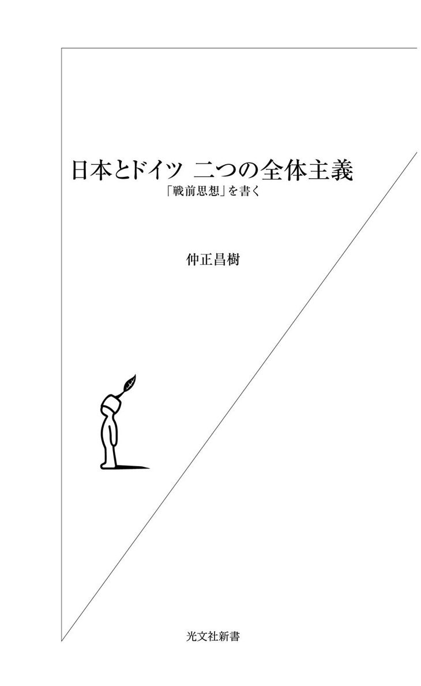
目次
...「戦前思想」という試み
...「国民」はいなかった
...「理念」が「現実」を誘導
...内面的なものへの拘り
...〝真逆〟を向いている二人
...福沢のナショナリズム
...疑似科学的理論武装
...明治デモクラシー
...政教分離
...突如登場した社会主義者
...ローザ・ルクセンブルク
...アナ・ボル論争
...全体主義下の弾圧
...ポピュリズム
...吉野作造と民本主義
...カントとヘーゲル
...ヤスパースとハイデガー
...模倣の教養主義
...『善の研究』
...ネオ・マルクス主義
...河上肇の『貧乏物語』
...ナチズムの土壌
...北一輝
...『わが闘争』
...昭和研究会
...保田與重郎
「戦後思想」というと、少し漠然とした感じはあるものの、どういう種類の思想のことか何となく分かる。第二次大戦が終わった後、戦争に参加した国において、「戦争を機に突き付けられた課題」をめぐって展開した一連の思想・哲学的言説を指していそうなことは、人文関係の書籍を普段から〝よく読んでいる〟人なら、すぐにピンと来るだろう。
戦争が残した負の遺産をどのように清算するかというところから始まって、戦争に至った根本的な原因としてのナショナリズム、帝国主義、超国家主義、反近代主義などを分析し、戦争を現代においてどのように語り伝えていくか、現代の社会・政治状況は戦前のそれと根本的に違うと言えるのか、再び戦争に至る可能性はないのか......といったことを直接的・間接的に論ずる政治・社会思想というのが、大体の相場である。
もう少し広く取ると、その国の思想状況の、戦前と比べて決定的に変化した部分、及びその「変化した部分」のその後の変遷というようなことも含まれてくるだろう。光文社新書として出した前著『日本とドイツ 二つの戦後思想』のタイトルは、この広義の意味での「戦後思想」を指している。
「戦後思想」があるとすれば、「戦前思想」もあっておかしくないような気がするが、あまり聞かない。理由は簡単である。「戦後思想」は「戦争があった」ことを前提にしているが、「戦前の思想」は、「これから戦争が起こる」ことを最初からはっきりと前提にしていたわけではないので、「戦争」を軸にしてうまく特徴付けることができないからである。
少なくとも、「戦前の思想」の担い手たち自身は、自分たちの思想を「戦前思想」とは思っていない。「戦争を予感していた思想家」は何人かいたかもしれないが、そういう予感のようなものに、その時代の思想を「代表」させることにはかなり無理がある――その手の〝預言者〟を思想史の主人公として特別扱いするのは、キリスト教の救済史観かマルクス主義の唯物史観くらいだろう。
更に言うと、どこまで遡って「戦前」として括るべきかという問題がある。たとえ事後的にでも、「戦前思想」として再構成する以上、「戦争」の原因になりそうな諸要因が社会の表舞台に浮上してきて、それらが社会・政治思想的な論議の俎上に載せられていた時期ということになるだろうが、例えば、ナショナリズムがヨーロッパを舞台として第二次大戦が始まった遠因であると見做すのであれば、一九世紀初頭のナポレオン戦争期まで遡って視野に入れなければならなくなり、百四十年くらいのタイム・スパンになってしまう。
「近代化」が問題であるとすると、更に遡ることになるし、キリスト教的な終末論的歴史観のようなものが元凶だとすると、場合によっては、二千年の西欧キリスト教思想史全てが射程に入って来てしまう。そういうのだとあまりにも間延びしてしまって、思想史的に特徴付けるのが難しくなる。
その逆に、第一次大戦の終わった一九一八年から、ヨーロッパで第二次大戦が始まる三九年までの二十一年間の「戦間期」を「戦前」と見做すという考え方もありそうだが、そうなると、タイム・スパンが短すぎて、「思想」の変動の独特のダイナミズムをうまく捉えることがかえって難しくなる。「第一次大戦後の政治的・経済的・社会的混乱がそのまま思想・哲学の領域にも持ち込まれ、その混乱の中で次の大戦に突入した」、というありきたりの話になってしまう恐れがある。
ドイツのように、第二次大戦に突入するかなり前から全体主義体制が成立して思想の自由な展開が妨げられているようなケースだと、「戦前と見做せる期間」は実質的に更に短くなる。しかも第一次大戦は主戦場がヨーロッパだったので、ヨーロッパ諸国と、アメリカや日本、中国、あるいは植民地化されていたアジアやアフリカの諸国では、二十一年間の重みが異なるため、比較しにくい。
このように考えてみると、「戦前思想」というのは非常に捉えにくいものであり、それを敢えてテーマにしようとしている本書は無謀であるように思えるかもしれない。恐らく、「（日本とドイツの）戦後思想」の続編だから「戦前思想」になっただけだろうと思う読者もいるだろう――半分は当たっている。
しかし「日本とドイツ」に限って言えば、一八七〇年前後から、第二次大戦が本格化する一九四〇年前後までの約七十年間を取ると、結構、意味のある比較をすることができる。何故かというと、両国とも一八七〇年頃に、西欧的な意味での近代国家を形成し、（英国やフランスに比べて）遅ればせながら、［国民国家としての統合→帝国主義的拡張］のプロジェクトに乗り出し、最終的に「（西欧）近代の超克」を目指して全体主義体制を構築し、戦争へと突入していったからである。
「遅れて始まった西欧化＝近代化の矛盾の展開」が共通テーマになっていると考えると、七十年間の日本とドイツの思想史は、それなりに比較しやすい。近代国家としてのスタートがかなり早いとされる英国や、「国民国家」を形成したと言えるかどうかはっきりしないアメリカ、あるいは、本格的な近代化が植民地支配からの解放後にようやく始まる第三世界諸国と比べると、日本とドイツの七十年間は、時期的に対応させやすい。
とは言っても、やはり「戦後思想」の場合に比して、「戦前思想」はやはり比較しにくいところがある。主な難点は、①ドイツは政治・経済の面では他の西欧諸国に出遅れていたが、思想・哲学の面ではカント、ヘーゲル、マルクスを出した先進国であるので、戦前はドイツが日本に対してかなり一方的に影響を与えていたこと、②第一次大戦で敗戦国であったドイツでは、帝政が崩壊し、いったん民主的な共和制に移行したのに対し、一応戦勝国であり、戦争特需の利益を得た日本では、帝政が存続し、体制批判的思想の拡張が制約された――という二点であろう。
①に拘りすぎると、「日独の比較思想史」ではなく、「日本におけるドイツ思想の受容史」になってしまう。他の西欧諸国との〝比較思想史〟もそうであるように、〝日独の比較思想史的研究〟と呼ばれているもののほとんどは――西田幾多郎のような〝日本の生んだ偉大なる思想家〟を、ハイデガーなどと個人レベルで比較するものを除いて――〝受容史研究〟になっている。また、②を重視しすぎると、「日本は第二次大戦まで帝政が安定して続いたため、真の市民社会が根付かず、社会・政治思想もあまり発展しなかった」というあまりに陳腐な話になってしまう。それを確認するだけでいいなら、わざわざドイツと比較するまでもない。
本書では、そういうありがちのパターンにはまることを避けるために、「ドイツからの受容」という面に触れるのは最小限にとどめ、なるべく対等な関係にあると見做して比較することを試みると共に、第一次大戦の影響も前面には出さないで、（特にドイツにおける）思想の変化の背景的要因として位置付けるにとどめることにしたい。
具体的な構成としては、①一八七〇年代から二〇世紀初頭にかけての近代化と国民化の同時進行、②労働者運動と結び付いた社会主義・アナーキズム思想の動向、③第一次大戦後（一九二〇年代以降）のリベラルな政治文化、④第二次大戦前夜における「近代の超克」思想の台頭――の四つの側面から、両国を比較することにする。
この四つは厳密な時期区分ではなく、特に①と②はかなり重なっている。また、（西欧の内にある）ドイツと（西欧の外にある）日本の間に「時間差」があるので、双方の対応する時期がズレてしまうところもある。
「時期区分」とは〝微妙に異なる〟段階分けに基づいて、二つの異なった文明圏に属する国の思想史を比較するというのは、学問的にはあまり好ましくないことだとは思うが、私としてはアカデミックな形式よりも、日本とドイツの「戦前思想」を、単なる影響関係ではない形で、有意味に比較検討するための手がかりを示すことを重視したい。新書とはそういうものだと思っている。
なお、「近代化の始まり」から「第二次大戦」までの政治的流れと連動しての政治・社会思想の叙述という本書の性格上、普通の哲学の教科書に必ず出てくる〝偉大な哲学者〟の扱いがかなり小さく、しかも大雑把になってしまいそうだが、そういうことにいちいち文句を言わないで勘弁してほしい。
日本にとっての一八六八年（明治維新）と、ドイツにとっての一八七一年（ドイツ帝国創設）の意味を考えるために、少しだけ一九世紀初頭の西欧におけるナショナリズムの誕生に遡ってみよう。
世界史の教科書に書かれているように、ドイツには長い間統一された「国家」がなく、三百あまりの大小の領邦国家が分立する状態が続いたが、市民革命を経てナポレオン（一七六九‐一八二一）の下で政治的・軍事的強国になったフランスとの戦争を機に状況が一変した。
ナポレオンがライン川左岸を占領し、西南ドイツを中心とする十六の領邦国家がライン同盟を結成して、（事実上ドイツ系の君主の連合体になっていた）「神聖ローマ帝国」から脱退したのを受けて、帝国の皇帝であったハプスブルク朝（オーストリア）の君主は、一八〇六年の八月に帝国の解散を宣言した。同年十月にはイエーナの会戦で、ドイツ諸邦の中でオーストリアにつぐ第二の大国だったプロイセンがフランス軍に敗れ、ナポレオンがベルリンにまで入城してくる。
こうした「危機」に直面して、ドイツ観念論の創始者である哲学者フィヒテ（一七六二‐一八一四）は、ナポレオン占領下のベルリンで行なった連続講演「ドイツ国民に告ぐ」（一八〇七‐〇八）で、ドイツがフランスに敗れた原因は、「国民Nation」としての一体性がなかったことにあるという見方を示した。
「生まれ」を意味するラテン語の〈natio〉を語源とする「国民」という言葉は、それまで血族や部族、同郷者の集団など様々な意味で用いられていたが、フィヒテはこれを、言語を中心とする文化共同体として定義し直したうえで、統一した「国家」を持たなかったドイツ人は「国民」としての自覚を欠いていると指摘する。他の諸民族からの干渉を退けて、強い「国民」として再生するには、ドイツ語教育に力を入れ、「国民」としての意識を高めていきながら、国民の生活環境に根ざした――統一された――「国家」を（再）構築する必要がある、というのである。
敗戦国の学者の主張としては至極普通の議論であるようにも思えるが、西欧世界で、「国家」が「国民」のものであり、「国民」は「国家」を愛し、守るべきであるという思想がはっきりとした形を取って現われてきたのは、「近代」に入ってから、特に一七世紀の英国での清教徒革命や名誉革命、一八世紀のアメリカ独立戦争、フランスの市民革命などを経た後のことである。
それ以前の中世的な〝国家〟では、国王や領主が自らの領地に居住する領民を一方的に支配しているだけだった。戦争とは、君主同士の戦争で、領民は巻き込まれるだけだった。ナポレオンは、革命を機に国家の主権者としての自覚を持つに至った「フランス国民（＝市民たち）」をうまく組織化して、強い中央集権的国家を築き上げた。フィヒテは、フランスが強いのは、単に統一国家を持っているだけでなく、その基盤になる、フランス語を中心とした「国民」という共同体に人々がもともと強い帰属意識・愛着を持っているからだと見たわけである。
フィヒテの講演に象徴されるように、ナポレオンの侵略を受けたヨーロッパ諸国では、フランスに対抗するために、自分たちも〝国民〟として団結し、〝自分たちの国土〟を守ろうとする思想が生まれてきた。そうした「国民」の思想は、ナポレオン戦争後も拡大し続け、従来の国境線を――自国民に都合のいいように――変更して、「国民」ごとに一つの「国家」を形成しようとする政治運動（＝ナショナリズム）がヨーロッパ全体を覆い尽くした。文化的共同体としての「国民」とその居住地域が、「国家」を構成する市民と領土と一致している状態を「国民国家」という。「国民国家」を志向するナショナリズムの運動は通常、各国を統治する為政者と、民衆（Volk）双方からの働きかけの相乗作用によって進行することが多い。
しかしフィヒテの祖国であるドイツの場合、ナポレオン戦争の後の処理をしたウィーン会議（一八一四）の後も、ハプスブルク朝のオーストリア、プロイセン、バイエルン、ザクセンなど、いくつかの有力国家が分立し、絶対的な核がなかったため、君主レベルでの国民国家建設運動は急速には進まなかった。いずれの君主も勢力均衡を崩すことを好まなかったうえ、統一の中心になる可能性のあったオーストリアとプロイセンは、いずれもその領土内に他民族の居住地域を抱えており、ドイツ人だけを念頭に置いた国民化政策を進めにくい状況にあったからである。
それに対して〝民衆〟レベルでは、愛国的な学生組合「ブルシェンシャフト」や、ヤーン（一七七八‐一八五二）を創始者とする国民体操運動などによって、国民としての「統一」と専制からの「自由」をセットで要求する――最下層の人々ではなく、むしろ一定の教養を持ち、社会的に影響のある階層＝教養市民層（Bildungsbürgertum）を中心とする――〝下からのナショナリズム〟が徐々に浸透していった。従来の支配体制を維持しようとするドイツ諸邦の君主たちは当初、こうした下からのナショナリズムを危険視し弾圧する方針を取った。
この傾向が変化するきっかけになるのは、一八四八年のフランスでの二月革命をきっかけに、ヨーロッパ各地に飛び火していった一連の革命運動である――マルクス（一八一八‐八三）とエンゲルス（一八二〇‐九五）はこれに乗じて、ロンドンで『共産党宣言』を出した。ドイツでは、三月にベルリンやウィーンなどの主要都市で一般民衆の大規模な蜂起があったので、「三月革命」と呼ばれる。この蜂起には、下層市民、労働者、農民、学生など、様々な階層の人が多数参加した。
これによって、ウィーン会議後の欧州の復古的な勢力均衡（＝ウィーン体制）を指導していたオーストリアの宰相メッテルニヒ（一七七三‐一八五九）は亡命し、オーストリアやプロイセン等は、革命勢力の要求をある程度受け入れ、民主的改革の実行を約束した。五月にはフランクフルトのパウルス教会に、各ドイツ諸国で選出された〝国民〟の代表――その多くは、大学教授など知識人であった――による「国民議会」が召集され、ドイツの将来の政治体制をどうすべきかという議論が続けられ、翌年には〝統一ドイツ〟の「憲法」が採択された。
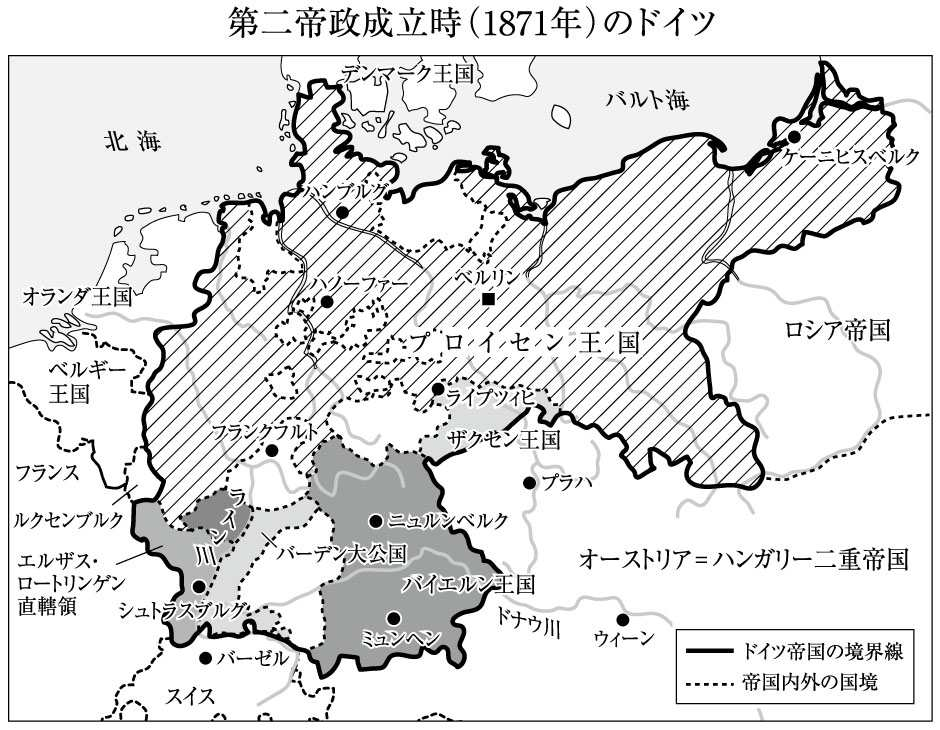
この〝議会〟によってドイツの現実的な統一がただちに達成されたわけではなかったが、ドイツ諸邦の間で、どのようにして統一国家を形成するかという駆け引きが始まった。（第一の大国であるが、ハンガリー人、チェコ人など非ドイツ人の居住地域が領土の大半を占める）カトリックのオーストリアを中心とする大ドイツ主義で行くか、それともオーストリアを排除して、（第二の大国であり、ポーランド人の居住する地域を抱えているものの、オーストリアよりはドイツ度が高い）プロテスタントのプロイセンを中心とする小ドイツ主義で行くかという世界史の教科書でお馴染みの対立図式が生まれる。
もう少し細かく言うと、この他に、バイエルン、ザクセン、バーデンなどの中規模のドイツ国家が第三勢力としてまとまり、オーストリア、プロイセンとの間で均衡を取りながら、緩い連合を形成するという構想もあった。結果として、科学技術の発展に力を入れ、工業化と軍の近代化を進めたプロイセンが、一八六六年の普墺戦争でオーストリアを破って主導権を握ることになった。
一八七〇年の普仏戦争でナポレオン三世（一八〇八‐七三）の治世下にあったフランスを破ったプロイセンは、一七世紀以来フランスとの間で帰属を争っていたアルザス・ロレーヌ――ドイツ式に言うと、エルザス・ロートリンゲン――地方を割譲させ、翌七一年にプロイセン国王を皇帝とする「ドイツ帝国」（第二帝政）を成立させた。これによってドイツは、「国民国家」にかなり近い状態になった。
このように大急ぎで、「第二帝政」成立までの六十数年を概観してみると、ドイツでは文化共同体としての「国民」という理念がまず誕生し、それに実体を与えようとするナショナリズム的な社会運動が名望家や教養市民層を中心に組織化され、更にそれを現実政治が後追いする形で、準「国民国家」が成立するに至った、と言えそうである。哲学的な言い回しをすると、「理念」が「現実」を誘導したわけである。
近代西欧史の常識では、英国やフランスのように「市民革命」を経て、市民主導で近代的国家を建設した国に比べて、ドイツでは市民革命によらず、（軍国主義的なイメージの強い）プロイセンの上からのイニシアティヴで、かなり遅れて近代国家建設が為されたため、「市民社会」が十分に発達せず、専制的な体質が残った、とされている。
そのため、自立した市民たちの主体的参加を伴わない、不健全で退嬰的なナショナリズムしか育たず、それがナチズムの温床になったというのである。第二次大戦後のドイツの歴史家たち自身、しばしばそういう見方をする。
しかし、既に見たように、統一と自由を求める市民たちの運動が徐々に浸透し、三月革命に際してメッテルニヒ復古体制を崩壊させ、「国民議会」を召集して〝帝国憲法〟を提示したわけであるから、市民革命が全くなかったとは言えない。
しかも一八七一年の現実の統一の中心になったプロイセンでは五〇年に、自由主義派の市民の要求を部分的に受け入れる形で、言論・集会・結社の自由をうたった憲法が制定された。国王の大権（大臣任命権、軍隊統帥権など）は維持されたものの、議会制が導入されている。六〇年代初頭には、鉄血宰相と呼ばれたビスマルク（一八一五‐九八）の率いる政府と、自由主義左派が多数を占める議会の間で、「予算」の問題を軸に「憲法闘争」が展開されている。その構図がそのまま、統一後の第二帝政にも持ち込まれることになった。
新しい政治体制の樹立という面から見れば、ドイツの市民革命は英仏よりはかなり遅れてスタートし、未完に終わっているものの、「憲法」の制定と、準「国民国家」の樹立にはかなり貢献している。
ドイツにおける市民の側からの「自由主義」と「ナショナリズム」に比べると、日本では、市民の主体的な要求によって近代国家が形成されたとは確かに言いにくい。
かなり教科書的な言い方になってしまうが、日本では明治維新以前には、西欧的な意味での「市民層」は生まれていなかった。士農工商の「工商」に相当する都市の住民はいても、この人々は、西欧の「市民」のように経済活動や思想・信条・言論の自由を求めて封建的為政者と対立し、最終的に打倒しようとする「革命」を組織化したわけではないし、明治維新以前から「国民」という意識を持っていたわけでもない。
一八五三年の黒船来航から明治維新にかけての混乱期には、下級武士層に加えて、農民や町民の中からも尊王攘夷や倒幕の運動に参加する者も出てきたが、これらの運動が「市民」の政治的・経済的自立を目指した革命であるとは言い難いし、「攘夷」にコミットする人々も、外国と対峙する〝我々〟を「国民」という集合体としてはっきり概念化していたわけでもない。
フィヒテの「ドイツ国民に告ぐ」から三月革命までの約四十年の間、日本では、貨幣経済の浸透によって武士による支配の基盤が揺らぎ始め、変化の兆候が少しずつ出てきたものの、政治的に大きな変化はまだ起こっていない。
十一代将軍徳川家斉（一七七三‐一八四一）の治世下で、奢侈な消費文化が発達した文化・文政期（一八〇四‐三〇）は、江戸幕府の最後の安定期とされている。天保年間（一八三〇‐四四）に入ると、農民一揆の件数が急増し、一八三七年には、都市の町民たちの不満を代表する形で大塩平八郎（一七九三‐一八三七）の乱が起こり、幕府の財政と治安を立て直そうとした水野忠邦（一七九四‐一八五一）による天保の改革（一八四一‐四三）も失敗したが、そうした動きによって、幕藩体制が一挙に崩れ始めたとまでは言えない。
また、ナショナリズム発動の重要な契機となる「外圧」の面でも、一八〇八年のフェートン号事件、二八年のシーボルト事件など交易を求めてくる西欧諸国と、鎖国政策を維持しようとする幕府との対立を象徴する事件はいくつか起こっているが、基本的に五三年のペリーの黒船来航までは、「外」からの脅威に対抗する形で〝国民〟が政治的な自覚を持って結集しなければならないような事態には至っていない。隣国における「市民革命」の直接的・間接的な影響によって、「国民」としての自覚を――少なくとも理念のうえで――持たざるを得なくなったドイツとはかなり事情が異なる。
社会思想の面では、周知のように、一九世紀の初頭から国学の平田篤胤（一七七六‐一八四三）や後期水戸学の藤田幽谷（一七七四‐一八二六）などが、外来の思想の排除や尊皇精神を中心とする日本古来の思想の〝復活〟を説くようになったが、それらが幕藩体制の解体の主張に直結したわけではないし、民衆一人一人が「国民」としての自覚を持たねばならないというような政治哲学にも至っていない。
黒船の衝撃を契機として、［幕藩体制解体→中央集権的国家への再編→西欧的な近代化］という流れが急速に形成される以前から、日本の独自性を理念的に追求する思潮が生まれていたと言うことはできるが、それは、自覚した「国民＝市民」の〝主体的参加〟を原動力にしていた西欧的ナショナリズムとは異質なものである。復古思想が不可避的に、「国民国家」の枠組みでの団結を主張するナショナリズムに繫がるわけではない。
このように説明すると、いかにも日本が「国民」形成の面で遅れたという話になりそうだが、必ずしもそうではない。ドイツ語という共通言語を持ちながら、何世紀にもわたって神聖ローマ帝国や、ウィーン会議後に結成された「ドイツ連邦」のような緩い国家連合体しか持たず、他〝国民〟との境界線が流動的であったドイツに比べると、日本は、国民国家という概念がなくても、最初からそれにかなり近い状態にあった。蝦夷の地に居住するアイヌや薩摩が実効支配していた琉球の住民など、南北のマイノリティの問題を除けば、どこまでが日本・日本人の境界線であるか〝自然〟とはっきりしていた。「国民」という理念はなくても、実体的には〝国民〟という共同体が成立していた。逆に言うと、徳川幕府が成立する以前から〝国民〟の輪郭ができあがっていたから、対外的に政治的に結束する必要が生じてくるまで、ドイツのような抽象的な「国民」論は必要なかったとも考えられる。
ドイツの歴史家マイネッケ（一八六二‐一九五四）は、その代表的著作『世界市民主義と国民国家』（一九〇八）で、「国民」の在り方には、ドイツのように言語・文化の共同体として自然と発展してくる「文化国民Kulturnation」と、アメリカのように一つの国家を共有することで次第に共同体意識が生まれてくる「国家国民Staatsnation」とがあるという議論をしている。フランス国民は、もともと文化的共同体であるが、一七八九年の革命以降は、「国家国民」的な面も強くなったと考えられる。
この区分を、日本とドイツの比較に当てはめて考えると、「国民」としての政治的自覚を持つ以前から、文化的共同体としての境界線が自然と成立していた日本の方がずっと「文化国民」的であり、七一年の「統一」をもってようやく境界線が暫定的に決まったドイツの方が「国家国民」的だと言える。もう少し極端な言い方をすると、日本は、文化共同体としての「国民」というドイツ生まれの概念が、ドイツ自身よりも遥かにみごとに当てはまってしまう実体を備えた珍しい国なのである。
明治維新によって西欧的な「国民国家」としての第一歩が記されたとしている歴史家もいるが、維新と共に国家を構成している民と領土が大きく変更したわけでもないし、下からのナショナリズムが急速に盛り上がったわけでもない――「下からのナショナリズム」がはっきりと認められるようになるのは、早くとも日清戦争（一八九四‐九五）以降であると見るべきだろう――ので、少なくともドイツの一八七一年と同じ意味で〝国民国家としてのスタート〟というわけにはいかないだろう。むしろ、西欧的な近代国家へと「国家」形態を変えていくという選択をしたことによって、「国民」意識が育ってくる土壌を準備した（だけ）と見るべきだろう。
何をもって「国民国家」の成立と見做すかについては明確な定義はないが、文化共同体としての〝国民〟と、統治機構としての〝国家〟の支配する領域が大体一致していることをもって「国民国家」だというのであれば、平安時代の前期に既に国民国家が成立していたと言えるし、「国民」としての明確な政治的自覚が伴わなければならないというのであれば、二〇世紀に入る頃まで国民国家に成り切れていなかったと言える。もともと西欧の概念を当てはめることに無理があるので当然だとも言えるが、どこから「国民国家としての日本」がスタートしたのか自体が、かなり曖昧である。
日本とドイツでそれぞれ中央集権的な近代国家が成立した一八七〇年代以降、いずれの国でも、政治・経済・軍事の近代化に伴って、（他の）西欧先進諸国に対抗する形で、ナショナリズムが台頭するようになった。帝国主義的な国際競争に勝たねばならない、という意識が国民の間にも浸透するようになったわけである。ただし「ナショナリズム」といっても、明らかに西欧の一部であるドイツと、非西欧でありながら西欧列強との競争に参入した日本では、思想的な方向性が自ずからかなり異なる。
一九世紀の前半にはドイツ観念論とドイツ・ロマン派の隆盛によって西欧全体の哲学・思想をリードしていたドイツにとって、（ある意味で西欧の中心にあって）ナショナリズムの思想を掲げる場合、大まかに言って二つの方向性が考えられる。
一つは、英国やフランスではなく、自分たちこそが西欧の中心であり、ドイツが西欧を軸に展開していく世界史の最先端を行っていると主張するドイツ中心主義、もしくは普遍主義的な方向である。もう一つは、敢えて自らの西欧性を否定もしくは相対化して、西欧的な〝普遍性〟から逸脱した〝特殊なもの〟として自己主張する方向である。
周知のように、フランスが前者のパターンの典型である。一八世紀の啓蒙主義以来、フランスの愛国的な思想家たちは、自分たちが西欧で高度に発展した普遍的理性の化身であると主張し続けてきた。
普遍主義・合理主義的な前提に立って明示的に自己主張するフランス思想に対して、神秘主義的な後期ロマン派の影響を受けた一九世紀ドイツのナショナリズム思想は、主に後者の路線を取るようになった。
プロイセン発展の礎を築いたフリードリヒ大王（一七一二‐八六）が、野暮なドイツ文化・ドイツ語を嫌って、宮廷での生活をフランス様式にし、フランスの啓蒙思想家ヴォルテール（一六九四‐一七七八）を顧問として招いたのは有名な話であるが、そうしたフランス・コンプレックスは、フランス革命とナポレオン戦争によって一層強まり、普仏戦争の勝利によって第二帝政が成立した後も、その傾向は続いた。フランスが常にドイツにとっての「文明（化）＝洗練Zivilisation」のモデルであった。
ドイツの知識人たちの間では、フランスの「文明」の優位を認めながら、それはあくまでも物質的・表面的なレベルでの話にすぎないとして、人格の陶冶＝教養（Bildung）に重きを置くドイツに固有の「文化Kultur」の内面的な優位を強調する独特の見方が形成されるようになった。無論、「文明」がフランス的・西欧的なもので、「文化」がドイツ的というのは、ドイツ思想史に固有の語法であって、フランス語の〈civilisation/culture〉や、英語の〈civilization/culture〉にはそうした意味合いはない。
この特殊ドイツ的な文脈での「内面性」の強調に、グリム兄弟（ヤーコプ〔一七八五‐一八六三〕、ヴィルヘルム〔一七八六‐一八五九〕）等によって（再）発見された――近代化される以前の先祖伝来の共同体的な生活を黙々と営んでいる――素朴な「民衆Volk」のイメージが結び付いて、フランスに代表される物質の「文明」に汚染されていない〝ドイツ人の真のアイデンティティ〟を探求・主張するドイツ的なナショナリズム思想が展開するようになった。芸術やファッションにおけるフランス的な文明の卓越性を暗に認めながら、表面的には見えにくい――質実剛健性に裏打ちされた――〝内面生活の充実〟を誇りにしようとするわけである。
ネガティヴな言い方をすると、フランスに代表される「西欧近代」とは異質であるように見えるものを「ドイツ的な内面性」と呼んで、自分たちの〝個性〟にしたわけである――通俗的なコメントになるが、コンプレックスの強い人間が無理に自己主張しようとする際に取りがちな態度である。
ドイツにはフィヒテに始まって、二〇世紀まで続く「観念論＝理想主義Idealismus」哲学の伝統があるので、純粋な「内面性Innerlichkeit」の追求において〝すぐれている〟と言えなくもないが、マルクス等も指摘しているように、この伝統がドイツに根付いたのは、物質的な現実を敢えて無視して、まさに〝観念〟の世界の中だけで〝理想〟を追い求めようとするドイツ的な体質――マルクスの表現で言えば、ドイツ・イデオロギー――の副産物であるとも言える。不自然なまでの〝内面的なもの〟への拘りは、境界を接しているフランスを近代化と市民社会構築のモデルにして後追いする一方で、フランスを超えるものとしての「自己」を呈示しようとする、屈折した心情の現われと見ることができる。
フランス的な西欧との差異を何とか際立たせようとするドイツ流のナショナリズムは、一見するとかなり引っ込み思案であるようにも思えるが、ドイツの精神的な〝特殊性〟の強調を極限まで突き詰めていくと、（現在メインストリームになっているフランス人や英国人ではなく）自分たちこそが世界史の真の中心である、という疑似宗教的な誇大妄想に繫がる恐れもある。後で見るように、ナチスは、ドイツ人を人類史を導く選民として神聖視する極端な思想によって支持を得、世界制覇に乗り出すことになった。
そのように「西欧の内」での独自性の出し方を模索し続けたドイツに比べると、明治維新の直前まで、尊王攘夷という極めて内向きの――というよりは、「内だけを向いている」と言う方がいいかもしれない――やり方でしか自己のアイデンティティを主張するやり方を知らなかった、あるいは、そういう自己主張をする必要性さえ明白に認識されていない状態にあった日本にとっては、「西欧」の「文明」にまず追いつくことが問題であって、その〝内〟でどのように自己の独自性をアピールするかは、当面俎上に載り得なかった。
中央集権的な統一国家の建設に乗り出した明治政府は、「攘夷」は引っ込めて、五箇条の御誓文の第五条で「智識ヲ世界ニ求メ大ニ皇基ヲ振起スベシ」と宣言し、諸外国との交流を通しての「文明開化」を国是とした。このことは、事実上「西欧」を到達すべきモデルとして設定したことを意味する。
従って、少なくともその目標が暫定的にでも達成されるまでは、「西欧に対して」自己主張するということが非常にイメージしにくくなったわけである。明治初期に言われるようになった「和魂洋才」というのは、語感からすると、ドイツの［文化＝内面＝ドイツ的／文明＝外面＝フランス的］と似ているようにも見えるが、当時の日本人にはまだ「洋」の〝魂〟というのがどういうものかあまり分かっていなかったし、「和魂」に基づく――為政者や知識人だけではない――「国民」一般のあるべき姿についての政治的論議も伴っていなかったので、かなり漠然としている。（平安貴族の教養の理想型を示す標語であった）「和魂漢才」の「漢」を単純に「洋」に置き換えて、西欧文明に向き合う際に必要な〝気構え〟を示したにすぎないと見た方がいいだろう。
そうなってくると、外部の〝何ものか〟に対する自己の相対的優位を主張して自尊心を保とうとする場合、「西欧」以外との対比で主張するしかなくなる。それが端的に現われたのが、明治維新直後から取り沙汰されるようになった「征韓論」や「征台論」である。周知のように、西郷隆盛（一八二八‐七七）が一八七三年に参議・近衛都督を辞任して、鹿児島に戻るきっかけになったのも、政権中枢での征韓論をめぐる対立であった。
文明的に進んでいる――が、地理的・歴史的に遠く隔たっている――西欧に対しては卑屈に媚びるような態度を取りながら、近隣の東アジア諸国に対しては、あたかも自らが準西欧国であるかのように振る舞い、優越感を示そうとする傾向は、明治維新に際して「文明開化＝西欧との同化」を国家の目標とした時点で既にセットされてしまったと見ることができる。そこから更に進んで、一九世紀末から二〇世紀初頭にかけて、西欧諸国の帝国主義政策に倣う形で、自らも東アジアでの植民地獲得と覇権を目指すようになった。
日本にとって、「西欧」の中の〝どの部分〟を直接のモデルとすべきかがようやく具体的な問題として浮上してきたのは、憲法の制定や議会の開設が論議されるようになった一八八〇年代になってからであるが、そこで英国やフランスよりもかなり遅れて――見方によっては、日本自身よりも遅れて――「国民国家」としての「近代化」路線を歩み始めたドイツが注目されることになった。
歴史の教科書でよく言われているように、「市民革命」を完全に通過しなかったため、市民の代表から成る議会に対抗する皇帝の大権が保持されることになった第二帝政の憲法は、天皇を絶対君主化しながら――民権運動の突き上げによる影響を可能な限り排して――安定した近代化を進めようとしていた明治政府の思惑にうまく合っていた。法・政治制度の面での模倣を補強すべくドイツからの学問の輸入も推進されたため、学術・高等教育レベルでのドイツ思想・哲学の影響も強くなった。
「西欧の内（の周縁部）」にあって、自己の文明的後進性を内面における個性へと転化しようとしていたドイツに対して、「西欧の外」にあって、自己のアジア的特性を極力消すことによって西欧化＝近代化しようとしていた日本が親近感を覚え、両者の間に独特な繫がりが生まれてきたわけである。
「主体」あるいは「主観」を意味するドイツ語の〈Subjekt〉、英語の〈subject〉、フランス語の〈sujet〉は、語源となったラテン語から見て、もともと「下に sub-」＋「投げ出されたもの-jectum」＝「根底にあるもの」「基本になるもの」という意味であった。ここから転じて、「主体」とは真逆の、「（何か上位のものに）従うもの」、政治的に言えば、「臣民」という意味も生まれてきた。この二つの意味をもじって言うと、英国やフランスのような主要国は、「臣民」から「主体」への転換を軸として、近代的な国民国家化を図ったのに対し、ドイツと日本は、「臣民」としての性格を強く残した曖昧な〝主体〟たちを養成する方向を模索した点で似ていたと言えるかもしれない。
第二帝政のドイツと、明治維新後の日本という二つの〝近代国家〟が始動した一八七〇年代に両国で最も大きなインパクトを与えた思想家をそれぞれ挙げるとすれば、間違いなくニーチェ（一八四四‐一九〇〇）と福沢諭吉（一八三五‐一九〇一）だろう。ニーチェと福沢は、思想家として活躍した時期はかなり重なっているものの、比較して論じられることはあまりない。その理由ははっきりしている。古典文献学者・美学者であるニーチェと、政治思想家・教育家である福沢では、活動している領域もテーマも違っているので、そもそもイメージが重なりにくいということがあるうえ、福沢の教養が主に英語圏に由来していて、ドイツ思想との直接的な接点が見つけにくいということもある。
しかし、ニーチェがドイツ語圏において脱西欧近代思想の象徴的存在であり、福沢が近代化し始めた日本において西欧化を明確に提唱した思想家であることを念頭に置くと、二人の思想は、西欧近代を基準点として見た場合、〝真逆〟を向いていることが分かる。それぞれの文化共同体の代表的な思想家が、〝真逆を向いている〟というのは、比較すべき重要なポイントである。このことは、既に述べた、西欧の「内」で自らの〝遅れ〟を意識すると同時に自己の特殊性を強調しながら近代化していったドイツと、「西欧」の「外から内に」入っていくことを取り敢えずの目標としながら近代化していった日本という背景的な違いを反映していると解することができる。
加えて、いずれも七〇年代に刊行され、新しい思想的トレンドを代表するものとして注目された二人の著作『悲劇の誕生』（一八七二）と『文明論之概略』（一八七五）はいずれも、結論部において、「国民」の〝本来在るべき姿〟を探求する必要性を強く主張している。どちらも、ナショナリズムの書として読むことが可能である。
最初にニーチェの『悲劇の誕生』から見ていこう。ニーチェの処女作であるこの著作は、ギリシア悲劇の起源が葡萄酒の神ディオニュソス（バッカス）を讃える合唱隊であるという文献学的考証を起点にしている。神がかりの恍惚状態の中で歌い踊る合唱隊の所作を様式化したものが、悲劇という形式になったという。ニーチェは悲劇の誕生に至るまでの歴史的過程を説明するに際して、その背景になったギリシア人の芸術観を、事物に明確な形を与え秩序化するアポロン的原理と、恍惚と自己放棄の中で形を崩していくディオニュソス的な原理の絡み合いとして記述している。簡単に言うと、一見してアポロン的に整っているように思える我々の世界観の根底に、ディオニュソス的な混沌が潜んでいて、それがいつ吹き出して来るかしれないという不安の中で、「悲劇」は生まれる。しかし、アポロン的な原理が一方的に優位に立ってしまうと、ディオニュソス的な混沌に通じるような芸術、特に音楽は衰退していく。ニーチェは、哲学者ソクラテスの登場に象徴されるアポロン的原理の突出によって、ディオニュソス的な恍惚の魅力・躍動感が西欧世界から失われてしまったと指摘する。
そうした〝歴史〟的認識に立ったうえでニーチェは、忘却されてきたディオニュソス的原理が、ドイツにおいて再発見されたという議論を展開していく。哲学的に再発見したのは、『意志と表象としての世界』（一八一九）で音楽を「意志の言葉」と見る視点を呈示したショーペンハウアー（一七八八‐一八六〇）であり、それを――「オペラ」というアポロン的な形式とは異なる――「楽劇」という形で再現したのがワーグナー（一八一三‐八三）である。
ニーチェによれば、中世の騎士伝説を素材としたワーグナーの作品『トリスタンとイゾルデ』（一八五九）は、アポロン的原理／ディオニュソス的原理の相克という視点から解釈することが可能である。彼はここから更に、ワーグナーの作品に象徴される「悲劇」的なものの再生という面から見て、近代ドイツの芸術的表象空間は、ディオニュソス的な精神が生きていたソクラテス以前の古代ギリシア世界と通底している、という独特なテーゼを導き出す。
文明化されたフランスを見ると、民族と文化が一体になっていて、われわれは愕然とする。ところでもし同じようなぐあいに、ドイツ的本質がその文化と解き離せないほどにからみあっており、それどころか一体であるということにでもなっていたら、われわれはドイツ的本質に悲痛な絶望を感じないではおれないだろう。民族と文化が一つであるということこそ、長いあいだフランスの大きな長所であったし、フランスがすぐれて優勢な原因でもあった。ところでそこから目を転じて、われわれを見るとき、われわれの実に怪しげな文化がこれまでのところ、幸いにも、わが民族性の高貴な核心とはなんの共通点もないことを、祝福せざるをえないのだ。われわれは、この落ちつきもなくびくびく動いている文化的生活や教養のけいれんの下に、一つのすばらしい、内面的に健全な、太古いらいの力がかくされていることを認め、そこに向かって、われわれのすべての希望は、あこがれにみちて身を伸ばすのだ。もちろんこの力は、重大な瞬間に活躍するだけで、そのあとはまた来たるべき日にめざめるまで夢をみつづけるのである。ドイツの宗教改革は、この深淵から生い立ってきたものであり、その讃美歌の中でドイツ音楽の未来の調べは初めて鳴りひびいたのである。（......）それは、生い茂ったやぶから、春の訪れとともに、ほとばしり出た最初のディオニュソスの誘いの声であった。（秋山英夫訳『悲劇の誕生』岩波文庫、二一一‐二一二頁：一部筆者改訳）
ここでニーチェは、一つの統一的で秩序の取れた――アポロン的な――文化の下でまとまっているフランス国民に対する羨望の念を表明し、自らの文化に自信を持てないでびくびくしているドイツ国民の現状を嘆いているが、同時に、そうした〝嘆かわしい現状〟という地表の下に、太古以来受け継がれてきた「ディオニュソス的な力」を蓄えた「深淵」が広がっているという仮説を示している。
この底知れぬ「深淵」から、ルターの宗教改革のような、ディオニュソス的な恍惚をもたらし、瞬間的に秩序を破壊する大変動が起こる。宗教改革と共に始まった近代ドイツ音楽に潜んでいるディオニュソス的な響きは、ドイツの文化や国家の根っこにある神話的表象が復活する予兆であるという。
無論、そうした芸術的な面で復活しつつある神話的表象をベースにして、ドイツ人の精神的な故郷、ドイツ神話が再生すると〝予言〟するだけでは、政治的な意味でのナショナリズム的傾向を帯びているとは言えない。
一九世紀初頭に活躍したドイツ・ロマン派の詩人ヘルダリン（一七七〇‐一八四三）なども、古代ギリシア文化の終焉と共に地上から消えた「ディオニュソス＝詩（芸術的創造）の精神」が、ドイツの大地に戻って来ると暗示する詩を作っているが、それをドイツ人のナショナル・アイデンティティをめぐる政治的論議へと展開するには至っていない――ヘルダリンの場合、三十代半ばで狂気に陥っているので、政治活動にコミットしようがなかったわけだが。創作の原理としてナショナルな形式を求めることと、それに〝対応〟するような政治・社会体制を要求するのは本来別次元のことであるが、『悲劇の誕生』のニーチェは、後者の方にも一歩踏み出している。彼は、ディオニュソス性を秘めたドイツ神話を全面的に復活させるには、ドイツ文化にとっての不純物であるラテン＝ローマ的（romantisch）な要素を――政治的手段も使って――除去する必要があると主張する。
ドイツ的本質の純粋で、たくましい核心を大いに尊重するわれわれとしては、あのむりやり植えつけられた異国的要素をドイツ精神が切り捨てることをあえて期待し、またドイツ精神が自分自身に立ち帰って自覚することも可能であると見なすのである。おそらく多くの人はこう思うだろう。すなわち、ドイツ精神はその戦いの手始めとしてまずラテン的なものを除去しなければならない、そして、そのための外的準備と鼓舞とは、最近の戦争の連戦連勝の勇敢さと血にそまった栄光のうちに認めてもさしつかえないであろうけれど、しかしその内的な促しは、この道における崇高な先駆者、すなわちルッターやわれわれの偉大な芸術家や詩人たちに対して、常にはずかしくない者になろうという競争心のうちに求めなければならない、と。しかし、こういう戦いを、自分たちの守護神を持たず、神話的故郷をもたないで、あらゆるドイツ的なものの「復興」をぬきにして戦えるなどと、けっして思ってはならぬ！（前掲書、二一五頁）
「最近の戦争」というのは、言うまでもなく、『悲劇の誕生』の刊行される二年前に起こった普仏戦争のことである。ニーチェは、（ラテン文化の代表格である）フランスとの外的な戦争と、芸術において「ラテン＝ローマ的なものdas Romantische」を排除していこうとする努力を、「ドイツ精神」復活に向けての闘争の二つの側面として捉えようとしているわけである。この箇所を見る限り、美学者であるニーチェは、「ディオニュソス的な生」の復活の方に主眼を置き、政治的な勝利はそのための外的準備と位置付けているが、こうした反ラテン的ドイツ中心主義は、「政治」の側から利用しやすい。
後でまた述べるように、一九世紀末に本格的に台頭してくる民族至上主義の思想家たちは、ニーチェの神話論をしきりと参照するようになるし、ナチスもニーチェの「力への意志Wille zur Macht」を自らの権力（Macht）拡張を正当化する論理として利用すべく画策した。ワーグナー音楽の崇拝者たちから成るバイロイト・サークルも、民族至上主義や人種主義と接近するようになる。
ニーチェのディオニュソス論に象徴されるように、一九世紀ドイツの古典教養のある知識人の間では、古代ギリシアとドイツの精神的な〝類似性〟を指摘して、ドイツ文化のラテン文化に対する相対的優位を主張しようとする文化的ナショナリズムが緩やかに形成されていき、その傾向は二〇世紀最大の哲学者の一人とされるハイデガーにまで継承されていく。ローマを起点とするラテン文化をスキップして、ドイツとギリシアをいきなり結び付けるのは、歴史的にも地理的にもかなり無理がある話である。「西欧近代」という枠を完全に度外視してドイツ民族自体の絶対的卓越性を主張する過激な民族主義が台頭してくる〝前段階〟においては、超越的な参照項としての「古代ギリシア」との類似性を暗示するというかなり迂遠な形でしか、フランスや英国に対する文化的優位を主張できなかったと見ることもできよう。『悲劇の誕生』自体が、第二帝政下のドイツの知識人たちの間で――歪んだ形で――強まっていたラテン文化への対抗意識を表していると言える。
ニーチェの屈折した〝ナショナリズム〟と比較すると、『悲劇の誕生』の三年後に刊行された『文明論之概略』で表明されている福沢のナショナリズムは、驚くほどストレートに西欧志向である。福沢はまず、世界の国々を文明の発展の度合いに応じて、ヨーロッパ諸国やアメリカ合衆国のような最上の文明国、トルコ、中国、日本など亜細亜の半開の国、アフリカやオーストラリアなどの野蛮の国と三つに大きく分けたうえで、半開の段階にある日本は、西洋の文明を目標にすべきであると明言している。これは言うまでもなく、啓蒙主義的進歩史観に基づいた自己把握である。
当然のことながら、啓蒙主義も進歩史観も、もともと西欧産の歴史観であり、西欧人が、自らが非西欧に影響を及ぼし、コントロールすることを正当化するために作り出した論理であるが、福沢はそれを敢えて〝導かれるべき立場〟にいる日本の現在の立ち位置を見極めるために用いているわけである。
福沢は、日本が西洋から摂取すべき〝文明〟は、和魂洋才論で言われているような外的・技術的なものにとどまるものではない、という立場を取っている。衣服、飲食、住居、機械のような外的な側面を真似るよりも、第一に「文明の精神」を取り入れるべきであるとしている。
その場合の「文明の精神」とは、「一国の人心風俗」、つまり、その国を構成する人々の生活慣習と結び付いた物の考え方や社会的関係性である――先に言及したドイツ思想史上の文化／文明の区分で言うと、むしろ「文化」に相当する。日本の「人心風俗」が変わらない限り、たとえ外的に西洋を真似ることができたとしても、政治や法を改革して、人々の自由な活動を促進し、有能な人材を思う存分働かせて国を発展させることができない。そこで、日本がこれから目指すべき精神発展の方向性を、西洋のこれまでの文明史をモデルにしながら呈示したのが、『文明論之概略』である。
『文明論之概略』の第九章「日本文明の由来」で福沢は、西洋文明と日本の文明を比較した場合の最大の違いは、「権力の偏重」にあるとしている。
日本では、権力者＝治者と、一般の人民＝被治者の間に大きな隔たりがあり、後者は政府の構成や運営にほとんど関与してこなかった。政府が新旧交代しても、治者／被治者の二元的状態は継続する。西洋文明のように、人民の考え方、生活様式の変化に伴って政府権力の在り方が変化するわけではなく、主として、治者の側の〝内部〟の争いによって政権が交代するだけである。古来日本の戦争では、武士と武士が戦うだけで、人民はあまり関係せず、勝負の成り行きを見守ってきた。
福沢は、人民が自覚的に国の政治に参加していくようにならない限り、西洋的な文明へと発展することはできないと考える。人々の主体的な参加によって国を作り上げていくというのは、一九世紀以降の西欧の「国民」論の発想である。
故に日本は、古来いまだ国を成さずというも可なり。今もしこの全国を以て外国に敵対する等の事あらば、日本国中の人民にて、たとい兵器を携えて出陣せざるも、戦のことを心に関する者を戦者と名け、此戦者の数と彼のいわゆる見物人の数とを比較して、何れか多かるべきや、預めこれを計てその多少を知るべし。かつて余が説に、日本には政府ありて国民（ネーション）なしといいしもこの謂なり。固より欧羅巴諸国にても、戦争に由て他国の土地を兼併することしばしばこれありといえども、そのこれを併すること甚だ易からず、非常の兵力を以て抑圧するか、もしくばその土地の人民と約束して幾分の権利を附与するにあらざれば、これを我版図に入るること能わずという。東西の人民、その気風を殊にすること以て見るべし。（日本の人民は国事に関せず）（『文明論之概略』岩波文庫、二二〇‐二二一頁）
福沢にとって、日本の国としての独立を保っていくには、まずは西洋文明の精神を吸収して、これまで政治とはほとんど関係のなかった人民を、自らの自由な思考に基づいて国作りに参加する「国民」へと改造しなければならない。少なくとも「国民」化のプロセスが完了するまでは、西洋文明諸国に対して、自己の独自性を主張する余地はないのである。〝国民〟自身の内に――西洋文明的な意味での――国の「独立」という明確な意識が生まれていない限り、徒に独立を語っても虚しいのである。
既に述べたように、他〝国民〟との境界線の確かさや、人々の言語・文化の均一性、〝一つの国家〟の形成から見れば、日本は西欧諸国よりもずっと「国民国家」に近いわけであるが、肝心の「国民」としての自覚が欠けているので、福沢は、伝統文化を根拠にして日本のアイデンティティを強く打ち出すことができなかったわけである。
日本思想史の解説書には、『文明論之概略』を「国民国家」形成に向けての課題を提起した書として位置付けているものが多い。私も基本的にはその通りだと思うが、この書の議論の立て方は、ドイツの「国民」論のような、まず西欧文明圏の中で自分たちの固有性を際立たせるという強い議論の立て方ではない。同時代のニーチェの議論のように、神話的な世界にまで遡って自己の優位を――屈折した形でありながら――主張するものとはかなり距離がある。
西欧において形成された「国民」論というのは、もともと、伝統に根ざした自己の固有性を主張しようとする議論であるから、積極的に自己主張しようとしない、むしろ〝自己〟の固有性を「半開」として否定的に評価する福沢の〝国民〟論は、西欧的な文脈で考えれば、根本的に矛盾している。
そうした福沢の〝国民〟論の――ニーチェのそれとは違った意味での――歪みは、十年後の一八八五年に『時事新報』の社説として書かれた「脱亜論」に端的に現われることになる。ここで彼は、日本は、清（中国）や李氏朝鮮といった他のアジア諸国のように政治的混迷に陥ることなく、まっしぐらに、西欧文明圏に入っていくべきことを提唱している。自らのアイデンティティに含まれているアジア性をはっきりと否定することによって、西欧的国民国家としての新たなアイデンティティの獲得を目指す、いわゆる脱亜入欧路線の表明である。
一八八〇年代からドイツ帝国は、オスマン・トルコとの軍事・経済的協力関係を強化して、「東方」進出に乗り出す。九三年にはオスマン帝国のイスタンブール（旧ビザンティウム）とアンカラを結ぶアナトリア鉄道を完成させ、その実績に基づいて、この鉄道を延長してバグダッドを経てペルシア湾岸のバスラにまで至るバグダッド鉄道の建設――この鉄道は完成には至らなかった――に乗り出した。
ドイツは、中東におけるこの二つの拠点とベルリンを鉄道で結んで、その三角形をドイツの勢力圏にしようとする、いわゆる３Ｂ政策を展開するようになり、カルカッタ、カイロ、ケープタウンを結ぶ３Ｃ政策を取る英国、そして北アフリカやインドシナを植民地化していたフランスと対立することになる。これによって、西欧諸国間の帝国主義競争が本格化する。
こうした帝国の対外政策に対応するように、ドイツのナショナリズム思想も八〇年代頃から変質していく。既に述べたように、七一年までのドイツの知識人たちを中心とするナショナリズムは「統一と自由」の双方を同時に追求していたが、「統一」の方が一応達成された時点で、大きな分岐点にさしかかる。
理屈のうえでは、残った「自由」だけを追求し続け、自由主義運動に徹するというのが最も単純な選択肢ではあるが、それはもはや〝ナショナリズム〟ではないだろう。既に政治統一を達成した「国民国家としてのドイツ」にとって次の「国民」的な目標として考えられるのは、①対外的な領土・勢力圏の拡張と、②国内における異質な要素の除去を通じての純化である。
①を追求することは、現実政治的には、英国、ロシア、オーストリア、フランスとの間での「力の均衡」の維持に専念してきたビスマルク外交路線を修正して、ヨーロッパにおける絶対的な覇権獲得に向けて動き出すことを、ドイツの進むべき道として提唱することに通じる。②は、キリスト教の影響がかなり弱まっていたドイツ社会の中で、〝普通のドイツ市民〟として受け入れられつつあったユダヤ人を、ドイツ文化にとっての異分子として排斥する反ユダヤ主義的な主張に繫がりやすい。この二つの目標を同時に追求すると、現代日本に生きる我々が「ナショナリズム」という言葉で通常思い浮かべる、〝悪しき思想〟になる。
自由主義的なナショナリズムからそうした〝悪しきナショナリズム〟への転向の典型として、近代歴史学の父として知られるランケ（一七九五‐一八八六）の後を継いで一八七四年にベルリン大学の歴史学教授になったトライチュケ（一八三四‐九六）を挙げることができるだろう。
彼はもともと議会制民主主義の統一ドイツ国家の構築を目指す強固な自由主義者であったが、普墺戦争を機に路線転換し、他の国民的自由主義者と共にプロイセンのホーエンツォレルン家を中心とする統一を支持するようになった。第二帝政成立と共に帝国議会議員になる。
七九年に出した論文「我々のユダヤ人についての一言」で、「ユダヤ人は我々の不幸である」という扇動的な見解を表明し、反ユダヤ主義の急先鋒となる。また、ドイツは英国に対抗して植民地主義政策を取り、「権力国家」としての道を歩むべきだと主張し、ビスマルク外交に対して批判的態度を取るようになる――ビスマルクは九〇年に帝国宰相を辞任し、八八年に三代目の皇帝になっていたヴィルヘルム二世（一八五九‐一九四一）が、帝国主義路線を突き進むことになる。
一八八〇年代に入って、ドイツ帝国の力に自信を持ち、排外的な傾向を強めるようになった〝ナショナリスト〟の中には、ラテン語起源の概念である「国民 Nation」に代えて、ドイツ語固有の語彙である「民族 Volk」を用いながら、「ドイツ民族」の本来の姿を求めようとする人たちが出てくる。
〈Volk〉という言葉は、英語の〈folk dance〉や〈folklore〉の〈folk〉と語源を共有しており、もともとは王侯貴族や騎士ではない「（普通の）民衆」「庶民」といった意味で用いられていた。近代に入ると、英語の〈people〉やフランス語の〈peuple〉の訳語として、「人民」という意味でも用いられるようになる。
一九世紀前半になると、ロマン派やグリム兄弟などによる、ドイツ民衆が語り伝えてきた「民謡 Volkslied」や「民話 Volksmärchen」の〝再発見〟を通じて、近代化以前のドイツ人の原型としての〈Volk〉という意味合いが付与される。
一九世紀を通してのドイツ・ナショナリズムの高まりに伴って、その意味での〈Volk〉が次第に実体視されるようになる。「民族」としてのアイデンティティは、人々＝民衆の日常的な生活様式・習俗の中に根ざしており、（西欧近代的な意味での）「国民」としての政治的自覚のあるなしにかかわらず、子々孫々へと継承されていくとされる。先に見たニーチェの『悲劇の誕生』の引用で、「民族」という言葉が使われている背景には、そうした歴史的な経緯がある。
「民族」概念を本格的にイデオロギー化し、「民族至上主義的（フェルキッシュ）völkisch」という形容詞で特徴付けられる思想へと最初に体系化したのは、オリエント学者・政治哲学者のパウル・ド・ラガルド（一八二七‐九一）と美術史家のユリウス・ラングベーン（一八五一‐一九〇七）である。
ラガルドは七八年に出した『ドイツ書』で、ビスマルクの作り上げた帝国は、政治的手段によってドイツ諸邦を表面的に統一したものにすぎず、内面的・霊的な統一を伴っていないと指摘する。むしろ、産業化・都市化の急速な進展によって、人々（Volk）の繫がりが寸断され、「民族」が衰退している。「民族」衰退の原因は、〝統一国家〟が、ドイツ民族の本来の霊性に合っていない自由主義的なプロテスタンティズムに依拠していたことにあるとして、中世の封建的身分秩序を支えていたゲルマン的宗教を復活させるべきであると主張した。この立場から、非ゲルマン的宗教によって結合している国内の少数派異分子であるユダヤ人を危険視した。
スウェーデンボルグ（一六八八‐一七七二）の神智学に魅了されていたラングベーンは、『教育者としてのレンブラント』（一八九〇）で、自然と風土の中で培われてきたドイツ民族の本性の内に潜む神秘的で非合理的な生命力を再活性化させて、諸個人の創造性・美的本能を発達させるべきだとする芸術的民族再生論を提起した。彼は、ユダヤ人をドイツ民族の復活を妨げる存在としてはっきりと敵視した。
またニーチェのディオニュソス的な神話論の影響を受けた詩人のシュテファン・ゲオルゲ（一八六八‐一九三三）は、九〇年代から二〇世紀初頭にかけて、太古の昔にドイツ民族が持っていた美的感覚を現代において再生する可能性を探求するうちに、民族至上主義・ゲルマン中心主義的な世界観を強めていく。
ゲオルゲ自身は、現実政治や反ユダヤ主義に対してある程度距離を置いていたが、彼を教祖的な存在として崇拝する秘教的な集団ゲオルゲ・サークルのメンバーであった文学史家ベルトラム（一八八四‐一九五七）はその主著『ニーチェ』（一九一八）で、ニーチェの超人思想を、中世の騎士の魂を持った英雄的な「超ドイツ人」の再来を告知する予言として再解釈し、ナチスによるヒトラー（一八八九‐一九四五）の神格化戦略にも影響を与えることになる。同じサークルのメンバーであった生の哲学者クラーゲス（一八七二‐一九五六）は、継承されてきた民族の純粋な精神を守るという名目で、はっきりと反ユダヤ主義的な立場を表明するようになった。
ラガルドの議論がそうであるように、民族神話を信奉する民族至上主義思想は、近代化の進展、資本主義経済の浸透によって、伝統的な共同体（Gemeinschaft）が崩壊していくこと――ドイツの社会学者テンニース（一八五五‐一九三六）が有名な『ゲマインシャフトとゲゼルシャフト』を刊行するのは、一八八七年である――に対する危機感を背景として台頭してきたものであるので、必ずしも帝国主義的な拡張政策を支持するものではない。帝国主義とは、発達した資本主義が更なる成長のために、資源原産地と商品市場を求めて国外に出ていこうとする運動だからである。
政治・経済・軍事における近代化を更に進めてドイツを覇権国家にしようとするトライチュケの帝国主義路線と、近代化による共同体破壊に抗して民族の生命力を復活させようとするラガルドたちの民族至上主義路線は、いずれも統一ドイツの大国化を背景として台頭してきた排他的ナショナリズムの類型ではあるが、〝目指すべきドイツの理想像〟が最初から一致していたとは言えない。〝ナショナリズム〟陣営の中に、近代／反近代の相反するベクトルがあって、まとまり切っていなかったのである。
この二つのベクトルが、〝自然と〟一致して「近代の超克」を目指すナショナリズムの形を取るようになるのは、第一次大戦敗戦からナチス台頭期にかけてであるが、これについて詳しくは四章で述べることにする。
ドイツ・ナショナリズムの究極の形態として生まれてきたナチスは、人種主義的イデオロギーに基づいて、アーリア人（ゲルマン民族）を人類の最も進化した形態と見做し、その純粋性を汚染する異分子としてのユダヤ人の絶滅を図ったことが知られている。しかしよく考えてみると、（疑似）科学的な「人種Rasse」という概念は、伝統的な共同体への回帰を志向していた民族至上主義的なナショナリズムとは、根本的に相容れないように思われる。
では、ナチスは古くからの「民族」概念と縁を切って、進歩史観と親和性のある「人種」概念に切り替えたのかというと、そういうことでもない。ナチスは、イデオロギー的プロパガンダの文句として、「フェルキッシュ」という言葉を多用しているし、民族神話に根ざした祭典を催したり、建造物を作ったりしている。むしろ、一九世紀末からある民族至上主義運動以上に「民族」への依拠を強めている。「民族」と「人種」という全く起源の違う概念を巧みに結合して、独特な世界観を作り上げたところがナチズムの特徴であるというのは、多くのドイツ史研究者が指摘しているところである。
そうした「民族」と「人種」の統合の端緒は、一九世紀末のドイツ語圏における「人種」概念の特殊な受容のされ方にあると見ることができる。現在、我々が〝ナチズムに象徴される人種主義〟として通常イメージしているものを最初に体系化したのは、フランスの外交官で文学者・ジャーナリストとしても活躍したゴビノー（一八一六‐八二）である。
ゴビノーは人種理論面での主著である『人種不平等論』（一八五三‐五五）で、人間はその「人種」によって生れつき不平等な資質を与えられており、強い生命力を持った優秀な人種によって「文明」が発展する、と論じている。
現代において最も優秀な血統を誇るのはアーリア人であるが、そのアーリア人の血は劣等人種との混血を通して次第に純度が下がっており、そのためヨーロッパ文明は不可避的に没落することになる、というのである。ゴビノーは一八七六年にローマでワーグナーと知り合いになって、その超然とした貴族趣味を気に入られ、ワーグナーを通してドイツ語圏に文芸批評家として紹介される。
ゴビノーの著作は当初、フランスでもドイツでもさほどの反響を得られなかったが、世紀末から二〇世紀初頭にかけてワーグナー信奉者たちを中心に、民族神話復活を理論的に裏付けるため、ゴビノー的な「人種」理論をドイツ語圏に本格的に再導入しようとする動きが起こった。その中心になったのがワーグナーの娘婿で、ドイツに帰化した英国出身の思想家ヒューストン＝スチュアート・チェンバレン（一八五五‐一九二七）である。
ゴビノーの議論は、非常にペシミスティックに文明の衰退を予言するものだったが、チェンバレンは社会ダーウィニズムの「最適者生存」の論理も取り入れて、優秀な人種であるアーリア人が歴史の勝利者となり、人類の救世主になるという――ドイツ人にとって――オプティミスティックな議論を展開し、人種主義を一般に広めることに成功した。
『一九世紀の基礎』（一八九九‐一九〇一）で展開された彼の議論によれば、心身ともにすぐれた資質を持つアーリア人は、ギリシア・ローマ以来の西洋文明の最良の部分を継承しており、それを更に発展させる使命を帯びているが、それに対して、非人間的な律法を奉じるアジア起源の別人種であるユダヤ人が対峙している。この両者の間で、いわば善／悪の闘争が展開されている。ドイツの産業は現在ユダヤ人の手に握られており、ドイツ社会に物質主義が蔓延しているが、ドイツ人＝アーリア人は、来るべき精神的革命を経て、最終的に勝利することになるだろう、というのである。
チェンバレンの『一九世紀の基礎』の前後に、進化論的な人種主義が様々な形でドイツに流入しており、それらが民族至上主義と融合するようになる。ドイツにダーウィニズムを広めた生物学者エルンスト・ヘッケル（一八三四‐一九一九）の弟子で、医師であるヴィリバンド・ヘンチェル（一八五八‐一九四七）は、その著者『ヴァルーナ』（一九〇七）で、近代化による堕落の防止と、アーリア人の血の純粋の保持のために、選抜的な人種繁殖を行ない、子供たちをゲルマン的精神で鍛え上げるコロニー「ミットガルド」――北欧・ゲルマン神話で「中つ国＝人間界」を意味する――を建設すべきことを提案した。この構想はそのままの形では実現しなかったが、彼の友人で、反ユダヤ主義的な政治評論家・出版人として知られていたフリッチュ（一八五二‐一九三三）は一九〇九年になって実際に、ドイツ北部に、ドイツ民族を人種的に再生させるためのコロニー「ハイムラント（郷土）」を建設し、入植者を募っている。
この時期のドイツの人種主義は、進化論によって疑似科学的に理論武装するようになったにもかかわらず、ラガルド等の民族至上主義と同様に、むしろ反近代・反物質主義的な傾向を持っており、あまり一貫性はなかった。〝人種的な闘争に最終的に勝利する〟という名目の下に、近代的な科学技術の成果を積極的に利用するようになったのは、こうした初期の人種主義を下敷きにしながら成長してきたナチズムである。
日本でも一八八〇年代になって、〝ナショナリズムらしいナショナリズム〟、つまり自己の独自性・卓越性を強調するナショナリズムが台頭してくる。ただし、統一直後から同じドイツ語圏のオーストリアと共にヨーロッパの五大強国の一つとして国際的影響力を発揮するようになったドイツ帝国に比べると、日本はまだいろいろな面で近代化の途上にあったうえ、当面の比較の対象として想定されていた西欧諸国と地理的・文化的に離れているので、それほど鮮明な自己主張にはなりにくかったし、（西欧の帝国主義競争の進展を基準に考えると）ワン・テンポ遅れがちだった。
日本のナショナリズムも、ドイツの場合と同様に、議会制民主主義の実現を目指していた自由主義陣営の一部の対外的拡張主義への変質と、近代化（＝欧化）に抵抗して伝統的なアイデンティティを守ろうとする文化的な復古運動の両側面から進行した。まず、前者の側面、具体的には自由民権運動と、対外拡張的ナショナリズムの関係から見ていこう。
一八七〇年代の終わりから八〇年代初めにかけて、板垣退助（一八三七‐一九一九）の率いる「愛国社」――この場合の「愛国」という言葉には、英語の〈patriotism〉のように、外国から自国を守るというニュアンスはなく、むしろ各個人が自発的に「国を愛する」ということにアクセントがあった――を中心として、国会の開設を要求する自由民権運動が各地に広がっていった。一八七九年には、イギリス流の二大政党制の必要性を説く福沢諭吉の『民情一新』『国会論』の二著と、中江兆民（一八四七‐一九〇一）が訳したルソーの『社会契約論』の影響を受けた植木枝盛（一八五七‐九二）の『民権自由論』が刊行されている。
天皇の名の下に――政府によって――大日本帝国憲法が発布され（八九年）、第一回帝国議会が召集される（九〇年）まで十二、三年間にわたって、［憲法／政府／議会／人民］の相互関係について様々な考え方を持つ各種の民権派諸勢力と、国王の権限の強いプロイセン型国家体制＝憲法――ドイツ語の〈Verfassung〉あるいは英語・仏語の〈constitution〉には、法の法としての「憲法」という意味と、「国家体制」という意味がある――の確立を目指す政府側との間で、政治的・思想的な駆け引きが繰り広げられることになる。日本近代政治史の坂野潤治（一九三七‐ ）は、この時期の民権運動を中心とした議会の在り方をめぐる論議の盛り上がりを積極的に評価し、「明治デモクラシー」と呼んでいる（坂野著『明治デモクラシー』岩波新書、二〇〇五 参照）。
こうした八〇年代の民権運動の盛り上がりは、見方によっては、一八四八年のフランクフルト国民議会から六〇年代のプロイセン憲法闘争にかけてのドイツの国民的自由主義運動を二十数年遅れて再現していると取れなくもない。しかし、既に見たように、四八年の三月革命で、オーストリアのメッテルニヒ政権を始めドイツ諸邦の政権のいくつかを崩壊させ、後の統一の中心になるプロイセン政府から民主的改革の約束を取り付け、五〇年に実際に憲法を制定させるに至った、ドイツの自由主義者たちのかなり〝革命的〟な能動性を帯びた動きと比べると、日本の民権運動が果たした役割がかなり受動的なものにとどまり、プロイセン型国家モデルを移植しようとする明治政府の基本方針に直接的な影響はほとんど与えていないと言わざるを得ない。
議会開設後は、民権運動から生まれた自由党や立憲改進党は次第に体制に組み込まれていき、政府を抑止する役割を果たさなくなる。ドイツの自由主義者たちが、既成の領邦国家の枠を超えて全ドイツ的に活動し、国民的な「統一」を目指すべきことを人々に周知させて「国民国家」の基礎を作るうえで先駆的な役割を果たしたのに対して、民権運動は、かなり昔から境界線がほぼ確定している国土の中で、維新政府が作り出した暫定的な国家の枠内において、「民」の側の参加の余地をできる限り確保しようとしたわけであるから、イニシアティヴを取れなかったのは当然とも言えよう。
一八八一年に自由党、八二年に立憲改進党が結成され、議会開設を要求する民権運動が本格化する中、八二年夏に朝鮮で、壬午事変が起こる。日本式の兵制改革を進めていた政権に対し、軍が反乱を起こし、日本公使館を焼き討ちにした。日本政府は軍を派遣し、武力を背景に朝鮮政府と交渉し、朝鮮半島への更なる進出の契機としようとしたが、そこに清も軍隊を派遣し介入してきたので、妥協を余儀なくされた。これをきっかけとして日本政府は、朝鮮半島や清を視野に入れた「富国強兵」政策に力を入れるようになる。
この事変に際して福沢は、対朝鮮強硬論を主張する。これ以降彼は、他のアジア諸国に対する日本の文明論的な優位を主張し、八五年には先に述べたように「脱亜論」を著している。
政府の対外拡張路線への転換に対応して、在野の民権運動家の中からも、強い日本を主張する方向に転換する人たちが出てきたが、その代表的な例が、政治ジャーナリストの徳富蘇峰（一八六三‐一九五七）である。
蘇峰は一八八七年に雑誌『国民之友』を創刊し、当初は、欧米の市民社会をモデルとして、自由で平等な競争が行なわれる平民社会を目指すべきだとする論を展開していた。しかし一八九三年一月に『国民之友』に発表した論説「大いなる日本」で、日本国民にとっての外交的課題は、単に西欧諸国との不平等条約を改正することにとどまらず、東洋に「大いなる日本」を建設することであると主張して以降、海外植民によって日本を拡張すべきであるとするナショナリズム的な路線を取るようになる。この年に刊行した『吉田松陰』では、維新の先駆けとなった吉田松陰（一八三〇‐五九）は攘夷思想家ではあったが、後期水戸学のような頑迷な鎖国論者ではなく、むしろ「国民的統一」と「国権的拡張」を目指していたとして、近代ナショナリズムの視点からの松陰の再解釈を試みている。九四年に日清戦争が始まると、これを日本の拡張のための好機であると見做し、この戦争は単に政府と軍だけの戦争ではなく、「国民の戦争」であるとするナショナリズム戦争論を盛んに説いた。蘇峰の中で、「国民」という言葉が、国家を構成する人民という意味合いから、政治的な運命共同体的なものへとシフトしたわけである。
蘇峰が当初、西欧モデルの自由主義的な立場を志向していたのに対し、同じ時期に言論界で大きな影響力を発揮した三宅雪嶺（一八六〇‐一九四五）、志賀重昂（一八六三‐一九二七）、陸羯南（一八五七‐一九〇七）等の政教社グループは、政府の欧化政策に抗して、国民の歴史的継続性と有機体的一体性を強調する路線を取った。一八八八年に三宅と志賀が雑誌『日本人』を、八九年に陸が新聞『日本』を創刊して、「国粋主義」の論陣を張るようになった。この二つの媒体は、前者が主として文化論を担当して、後者が政論を担当するという形で役割分担していた。
地理学者である志賀は、日清戦争の年に出した『日本風景論』（一八九四）で、山岳を中心にした祖国の自然美を、西欧や中国のそれよりも遥かにすぐれたものであるとして称賛し、日本的な「風景」を日本人のアイデンティティの基盤にしようとした。三宅は『真善美日本人』（一八九一）で、真善美の各領域における日本人の独自性を定義し、人類の発展に日本人がどのように貢献すべきか論じている。
政治ジャーナリストの陸は、その主著『近時政論考』（一八九一）で、「自由」と「平等」の原理に基づく立憲政体の確立を目指す自由主義的な政治論議の重要性を認めながら、そうした抽象的理念は最終的目標ではなく、あくまでも、日本の国民的感情にうまく合致し、日本国民の統一を保持していく「国民的政治」を行なうための手段にすぎないという議論を展開する。抽象的な理念のために、「国民的精神」それ自体を損なうことは許されないのである。
このように、「近代化／伝統」をめぐる二つの相反する方向性の絡み合いの中でナショナリズム思想が発達していったという面から見れば、日本とドイツはよく似ているが、大きな違いとして、ドイツの反ユダヤ主義や「文化闘争」――ビスマルクは帝国成立当初、ローマ法王庁とつながっているカトリック教会を国民国家的統一を乱す宗教的マイノリティと見做し、一八七一年から八〇年までカトリックの影響力を排除する文化闘争を展開した――に相当する「国民内の異分子排除」的な動きは、日本の場合、はっきりとした形で顕在化してこなかったことを指摘しておく必要があるだろう。部落差別のような各種の差別問題はあっても、被差別集団を、「国民」を〝内〟から崩壊させる危険分子として思想的に位置付けて、文化的闘争の象徴的ターゲットとするようなことはなかった。
その理由はいろいろと考えられるが、私のかなり主観的な意見を言えば、日本は台湾や朝鮮を植民地として獲得するまで、純粋な〝国民国家〟にかなり近い状態にあったうえ、その〝国民国家〟の「内部」に、（天皇を中心とする）国民的アイデンティティと正面から対立するような教えを信奉する宗教的マイノリティも国家にとって本格的脅威になるほど多数存在しなかったということが大きいと思われる。善し悪しの問題は別として、帝国主義的な政策に乗り出して以降も日本のナショナリズムにおいては、ドイツの場合のように、国民国家「内部」の「浄化＝粛清」という契機はあまり強くならず、もっぱら精神的な〝復古〟と、近代化の帰結としての帝国主義的拡張がいかに組み合わさっていくかが焦点になる。
宗教との関係という側面から見た場合、一九世紀の八〇年代から二〇世紀初頭にかけてのドイツと日本のナショナリズムにはもう一つ大きな違いがある。それは、ドイツの第二帝政が、必ずしもキリスト教会の宗教的権威に全面的に依拠しているわけではなく、少なくとも王権レベルでは、政教分離した形になっているのに対し、大日本帝国が、天皇の国家体制＝憲法的な地位を、古事記・日本書紀の神話体系によって根拠付けており、そのため「国家」それ自体と「（国家）神道」が不可分の関係にあったことである。
先に少し言及したように、ビスマルクは文化闘争を通して、カトリック教会の政治的・社会的影響を縮小し、統一ドイツを可能な限り文化的に均質化しようとしたが、バイエルン、南ドイツを中心に全人口の三分の一を占めるカトリックの力を衰退させることはできず、闘争を打ち切っている――迫害を受けたカトリック側は、「中央党」という政党を結成し、かえって結束を強めることになった。
そのビスマルクが依拠していたプロテスタンティズムの方にも、当然のことながら、ホーエンツォレルン家を神聖化するような教義はない。ワーグナー、ニーチェ、ラガルドたちが復権させようとしたゲルマン神話も、ホーエンツォレルン家の支配を血統的に正当化するようなものではない。
つまるところ、ドイツのナショナリズムは、宗教的な権威を帯びた王権を、絶対的な中心とする思想体系は備えていなかったのである。
大日本帝国の天皇制をイデオロギー的に支えていた［神道／記紀神話］は、教義の面でキリスト教と比べると、それほど体系化されておらず、仏教など他の〝宗教〟と混淆したり、棲み分けたりしているので、そもそも西欧的な意味での「宗教」と言えるのか曖昧なところがあるが、その分だけ、その時々の状況に応じて、様々な要因を融通無碍に組み合わせて、天皇神話を改編しながら、ナショナルな象徴として利用することが可能になる。第二次大戦時の「八紘一宇」は、〝天皇神話〟をかなり強引に全世界を包摂するように拡張したものである。
天皇神話を核とする国民国家の建設を進めた日本では、共同幻想の産物である「神話」と客観的な史料に基づく「歴史」を明確に分離することが難しくなった。記紀に書かれていることは、歴史的真実ではなく、古代の人々の願望と政治的な利害関係を反映した虚構にすぎないと明言すれば、天皇神話によって根拠付けられる「国体」を否定することになる。
「神話／歴史」の境界線がはっきりしないままにしておくことは、天皇中心のナショナリズムにとっては便利だが、歴史学的な研究を進めていくうえでは不便である。天皇制の根幹に関わるような事柄については、神話を解体して、近代合理主義的な認識を持つことは許されなくなる。森鷗外（一八六二‐一九二二）の短篇小説『かのやうに』（一九一二）は、この問題を的確に描き出している。
この小説の主人公である、五条子爵の息子秀麿は、文科大学（東大文学部）の歴史科を卒業した後、ベルリンに三年間留学し、一年前に帰国している。秀麿の目から見たドイツ帝国には、鷗外自身の一八八四‐八八年にかけてのドイツ留学体験が反映していると思われるが、小説の記述からすると、秀麿の留学時期は、この作品が書かれる直前の一九〇〇年代の後半から一九一〇年くらいの間に設定されているようである。
秀麿は留学中、特に当時一世を風靡し、皇帝ヴィルへルム二世からも信頼されていたプロテスタント系の神学者ハルナック（一八五一‐一九三〇）による寺院史や教義史の体系的な仕事に感銘を受ける。自分たちの信じているはずの宗教の歴史的発展を、護教的な見地からへんに擁護しようとせず、客観的に記述し切ろうとするハルナックのような研究があることが、秀麿にとっては新鮮だった。近代化路線を日本に先駆けて突き進んでいたドイツでは、信仰と学問がきちんと分離しているように見えたのである。歴史的研究を進めていくと、キリスト教の信仰の根拠になっている神話的な世界観と抵触するはずである。しかし、近代的な学問の素養を身に付け、神話を信じていない人たちも、キリスト教的な宗教生活の意義は十分に認めている。
秀麿はその謎のヒントを、新カント学派の哲学者ハンス・ファイヒンガー（一八五二‐一九三三）の『かのようにの哲学』（一九一一）に見出だす。ファイヒンガーのカント解釈によれば、人間の生にとって価値がある霊魂とか自由とか義務のようなものは、虚構にすぎないが、我々はそれらが存在している「かのように」振る舞い、それらを〝事実〟として通用させることによって、倫理を成立せしめている。そうした「かのように」が働いていることによって、ドイツでは、虚構である「神話」と、事実としての「歴史」を両立させることが可能になる、と秀麿は見る。彼は「かのように」の原理に従って、「神話」から分離された、日本の「歴史」を書けないかとも考えるが、すぐにダメだと諦める。
鷗外はダメな理由を、「秀麿の脳髄の中に蟠結している暗黒な塊」とぼかして表現しているが、作家の松本清張（一九〇九‐九二）は、その「暗黒な塊」とは天皇制のことであると断定的に〝推理〟している。明治維新から四十年以上経った近代国家日本において、「神話」と「歴史」の分離を困難にしている要因は何か具体的に考えてみると、清張の〝推理〟は多分間違っていないだろう。天皇制と国家神道が、国民を統合する中心的原理である限り、「天皇制神話は虚構であると分かり切っているけれど、敢えて信じているかのように振る舞う」というプラグマティックな態度を取ることは、許されなかったのである。
「虚構／事実」の二分法を受け付けず、「神話／歴史」の分離を阻害していた「暗黒な塊」は、国民のアイデンティティを、その歴史的な起源をはっきりさせないまま、安定的に維持していくには非常に便利であったわけである。第二次大戦から六十一年経った現在でもなお、それは国民のアイデンティティの連続性・安定性を象徴的に表示する役割を果たし続けている。本当の意味での「暗黒な塊」を持っていなかったドイツ・ナショナリズムが、具体的に何を、国民的アイデンティティの中核として位置付けるべきか、絶えず自問せざるを得なかったのとは大きな違いである。
近代的ナショナリズムというテーマと同様に、社会主義というテーマについても、ドイツの方が日本のかなり先を行っているので、少し時代を遡って、ドイツの側の前史から話を始めなければならない。
ナショナリズムを比較する場合と少し異なるのは、〝ナショナリズム〟というのが必ずしも一つのまとまった思想体系を形成しているわけではなく、むしろ、「国民」という集合体に価値を置く様々な言説の集積体にすぎないのに対し、社会主義というのは、社会を理想状態へと誘導することを目指す思想であるので、そのプログラムを作成した特定の理論家あるいはグループの名前と結び付いていることが多いという点だろう。
一国のナショナリズムが別の国に〝伝播〟するという場合、後者の国の思想家Ｂが前者の国の思想家Ａの理論をストレートに自分たちのモデルとして採用するということは考えにくい――というより、〝他者のナショナリズム思想〟を模倣すること自体がもともと矛盾している。
ナショナリズムの伝搬というのは通常、ナポレオン戦争とドイツの関係が典型的にそうであるように、ある国民あるいは国家のナショナリズム的な拡張によって圧迫を受けた他の国民あるいは国家が、〝自己〟を防衛しようとする構えを取るという形で生じる。その際に、圧迫を受けた方が、自分に脅威を与えている相手の動きを観察し、相手に対して――相手と似たような――攻撃的な動きをすることを通して、結果的に似てくることがある。
それに対して、「社会主義」というのは、「資本」を中心とした工業化が進行するあらゆる国で不可避的に生まれて来る「労働者」階層の貧困化に起因する社会問題の解決を目標とする政治・社会思想であるので、他の国で既に体系化されている社会主義の理論を、別の国の労働者運動が受容するというのは、必ずしも矛盾ではない――実際には、各国民国家に属する労働者間の利害対立という問題はあるが、それについては後述する。
『共産党宣言』の末尾の有名な「万国のプロレタリア団結せよ！」という言葉に象徴されるように、社会主義思想には、プロレタリアート（労働者階級）の抱えている問題には、国境を越えた〝普遍性〟があり、そうした〝普遍的な問題〟に対する〝普遍的な解決策〟があるはずだという前提で考える傾向がある。従って、社会主義思想・実践の〝輸出入〟は、比較的抵抗なく行なわれる。
一八七〇年代の日本でも、ドイツやフランスなど西欧諸国からの社会主義のかなりストレートな輸入が行なわれている。輸入された時には当然、哲学・思想の他の分野でもそうであるように、かなり抽象的に体系化されたものになっており、そのため必ずしも（近代化の途上にある）日本の社会の現状に合っていない、というギャップが生じやすい。特に社会主義というのは、「社会問題」の解決を目指す思想であるので、純粋哲学の場合よりも遥かにギャップが目立つ。
先に見たように、資本主義的な近代化によって、前近代的な農村共同体の絆が崩壊し、都市労働者として孤立・貧困化する人々が急増しているという問題意識は、ドイツの場合、ラガルドやラングベーンのような民族至上主義型のナショナリストにも共有されていた。民族至上主義者が、民族に崇高な精神を〝復興〟させ、共同体的生活を再生することによって、つまり自分たちの民族的・国民的な固有性を再確認することで、「問題解決」を図ろうとする。
社会主義者は、それとはある意味対極的に、（無国境的な存在である）労働者階級の労働者階級による労働者階級のための解決を模索する。ただし、そうは言っても、資本主義的な近代化から取り残された民衆（Volk）の疎外感を起点としているので、正反対の解決策を目指して進んでいたはずの民族主義と社会主義が、当事者たちの意図に反して似てしまうというのはよくあることである。
一九八九年にベルリンの壁が崩壊する直前に、東ドイツ（ドイツ民主主義共和国）で盛り上がっていた反体制運動は当初、〈Wir sind das Volk.（私たちこそが人民だ）〉というスローガンを掲げ、一般労働者である自分たちこそが、社会主義国である東ドイツの主権者であることを強調していた。しかし、壁が崩壊して再統一の可能性が見えてくると、このスローガンの定冠詞の〈das〉が不定冠詞の〈ein〉に置き換えられて、〈Wir sind ein Volk（我々は一つの民族だ）〉という民族的統一を求める運動に変貌していったとされている――無論、社会主義国内部の反体制運動がいきなり民族主義運動に全面的に変貌したわけではない。
これは、「民衆」であり、「民族」であり、そしてまた「人民」でもある〈Volk〉という言葉の多義性を利用した言葉遊びであるが、政治的なイベントの中で起こったこうした意味のシフトは、社会主義的な意味での――プロレタリアートを中心に構成される――「人民」と、復古的な意味合いを帯びた「民族」の間の深層における繫がりを象徴していると言える。
原始共産主義社会のような、私的所有に起因する搾取のない共産主義社会への〝進歩〟（＝回帰？）を目指すマルクス＝レーニン主義は、最終的には、民族主義と同じように、原点回帰の運動であると見ることができる、ということは多くの社会思想史家が指摘しているところである。
ドイツの初期の社会主義思想には、民族主義とも取れる復古的なイメージが混入していた。ドイツ語圏に社会主義・共産主義、及びプロレタリアート等の概念を最初に体系的に紹介したのは、国法学者・国民経済学者のローレンツ・フォン・シュタイン（一八一五‐九〇）である。日本史の教科書では、一八八二年から一年半にわたって欧州憲法調査に派遣された伊藤博文（一八四一‐一九〇九）に、西欧諸国の憲法の基本を教えたことで知られる人物だ。
シュタインは四一年から四三年にかけてフランス法史を学ぶためにパリに留学していたが、その間にルイ・ブラン（一八一一‐八二）、プルードン（一八〇九‐六五）、カベ（一七八八‐一八五六）といったフランスの初期社会主義者や共産主義者たち――この当時はまだ社会主義と共産主義の違いはそれほど明確ではないが、前者が労働者の貧困を解決することに重点を置くのに対し、後者は私有財産の廃止を通しての万人の平等を主張するものであると理解することができる――と交流し、そこで得た知識をもとに『今日のフランスの社会主義と共産主義』（一八四二）を著している。もともとヘーゲル左派の論客として、プロイセン型の近代国家の専制的体質を自由主義的・人間中心主義的な視点から批判していたマルクスが、プロレタリアートという概念を知ったのは、この本を通してだとされている。
この本でシュタインは、工業化された市民社会における、賃金に依存する「プロレタリアート」と資本家の対立という事態を起点として、社会主義や共産主義を説明している。この場合のプロレタリアートというのは、単なる〝肉体以外に自らの財産を持たない労働者〟ということではなく、一つの目的を共有した集合体である。彼らは、私有財産制が自分たちが貧困に苦しまねばならない原因であると認識し、団結して私有財産の廃止、家族の否定、国家権力の奪取を目指すようになる。シュタインは為政者たちに対して、プロレタリアートを一方的に弾圧するのではなく、改良主義的な社会政策を行ない、階級対立を超えた「改革する王国」へと変貌するよう提案している。シュタインにとって、国王による統治と、プロレタリアートの直面する「社会問題」の解決は両立可能だったのである。
一八四〇～五〇年代のドイツではまだ資本主義が定着し切っておらず、封建的身分秩序の中で仕事をする職人と、工場で機械的労働に従事する労働者の違いがはっきりしていなかった。下層民衆の蜂起はしばしば起こり、職人の相互扶助組合的な運動は形成されつつあったが、シュタインの記述する「プロレタリアート」のように、一つの政治目標を志向する統一体的な動きはしていなかった。
ストライキなどの強行な手段によって、資本の側と団体交渉する最初の本格的な労働組合が各地で形成されるようになるのは、六〇年代に入ってからである。一八六三年にはライプチッヒで、社会主義思想家のラサール（一八二五‐六四）を中心として、最初の社会主義的な労働者政党である全ドイツ労働者協会（ラサール派）が創設された。
ラサールは、自由主義国家が自らの役割を対外的防衛と国内治安維持などに限定していることを批判して、「夜警国家」と呼んだことで知られている。ラサールは富裕層を代表する政党や自由主義者とは激しく対立したが、ある意味シュタインと同様に、（プロイセン）国王が「労働者の友」として、国家援助による生産協同組合の設立等の社会政策を行なって、労働者の貧困からの解放に乗り出すことに期待をかけ、首相であるビスマルクに接近している。
こうした王政と親和的なラサール派に対して、ドイツ国外で活動していたマルクスやエンゲルスは、六四年にロンドンで、階級闘争を通して一切の階級支配を廃絶することを目指す労働者の国際的組織「国際労働者協会（第一インター）」を結成する。第一インターのメンバーになったドイツ人の数はそれほど多くなかったが、六〇年代後半でドイツ各地で起こるようになったストライキに背後から影響を及ぼすようになった。
ザクセンの旋盤工から政治家になったベーベル（一八四〇‐一九一三）やジャーナリストのヴィルヘルム・リープクネヒト（一八二六‐一九〇〇）を中心とするグループは、六八年に第一インターへの参加を表明し、翌六九年にはアイゼナッハで大会を開き、社会主義と民主主義を綱領とする社会民主労働者党を設立する（アイゼナッハ派）。アイゼナッハ派は、プロイセン王国主導での統一国家形成によって社会問題を解決しようとするラサール派の路線は否定し、連邦制的な大ドイツを「自由な人民国家」として樹立することを目指した。両派はドイツの社会主義・労働者運動の主導権をめぐって競合することになる。
ラサール派とアイゼナッハ派の路線対立に象徴されるように、ドイツの初期社会主義にとって、国民国家形成を目指して動いていたドイツ・ナショナリズムとどのように関わるかというのは、自分たちの運動の目標を設定するうえで避けて通ることのできない重要な問いだった。来るべき――プロイセンの国王を首長とする――「国民国家」に「市民」として積極的に参与し、内から改革することによって労働者を貧困から解放するのか、それとも、封建的な身分秩序を引きずる〝国家〟とか〝国民〟といった枠組みには基本的に期待せず、プロレタリアートの力によって既成の政治権力を打倒する革命を断行するのか、ということである。
「国民国家」の枠組みができる〝以前〟から、英仏には後れを取ったものの、かなり工業化が進み、都市に居住する工場労働者が人口に占める割合が増加し、労働者問題を中心とする「社会問題」が深刻化していたわけであるから、ドイツの社会主義・労働者運動が、国民国家形成プロセスに関与するのは不可避であった。
当然のことながら、これに相当する時期（一八四〇～六〇年代）の日本では、西欧的な意味での「資本」を中心とする工業化は起こっておらず、工場での均一化された機械的な労働の対価として賃金を受け取る「労働者」は存在しなかった。
既に述べたように、貨幣経済の浸透で幕藩体制が揺らぎ、一揆や強訴、打ち壊しが頻発するようになり、大塩の乱も起こっているが、封建的な士農工商の身分制はまだ生きていたので、大都市に職人と労働者の中間的な立場の人たちが無秩序的に集まってきて、社会問題化するというドイツ的な状況にはなっていなかった。（資本主義的な生産サイクルを下から支える）「労働者」が集団あるいは階層として存在していなかったので、仮に幕末の尊皇攘夷・倒幕運動を〝国民国家〟形成に向けてのナショナリズムの動きと見做すとしても、そこに社会主義的なテーマが関わってくる余地はなかった。
幕末から明治初期にかけての「民衆」の動向を研究している歴史家の中には、幕末期に起こった一揆や強訴の多くは、単なる突発的な不満の表明ではなく、自分たちを縛っている身分制的な社会の仕組みを変えることを目指した、「世直し」的な性格を持つものであったと指摘する人たちが少なくない。個々の一揆は無秩序に行なわれていたわけではなく、為政者に効果的にアピールするための一定の様式を備えていた。流通制度の改革を要求する国・郡規模での集団訴訟としての性質を有する「国訴」に際しては、農村共同体の中での民主的な手続き（寄り合い）を経て、その内容や方法が練り上げられたという。
一八六七年から翌六八年にかけて江戸から広島・四国までの広範な地域にわたって見られた、祭り踊りを中心とする騒乱「ええじゃないか」にも、幕藩体制下の日常的抑圧からの（一時的）解放を求めた下層町民たちによる「世直し」運動の側面があったとされている。そうした自覚した「民衆」の自立を求める動きが、明治初期の地租改正（一八七三‐八一）反対運動等を経由して、七〇年代以降に自由民権運動が発展するベースにもなった。そういう「民衆」史的な視点を取れば、一九世紀半ばの日本にも、ドイツにおける「Volk（人民＝民族＝民衆）」の顕在化や、体制変革を通しての社会問題の根本的な変革を求める〝社会主義〟的な問題意識の形成とパラレルなものがあったというやや強引な見方をすることもできる。
そういう視点を取れば、単純な［西欧→日本］の近代化の輸出というお決まりの図式をある程度相対化することもできそうだが、私自身としては、それにはやはり無理があると思う。普通の歴史教科書の記述のようなあまり面白くない話になってしまうが、当時の日本の「民衆」の運動には、自分たちの経済的苦境の原因になっている「国家」を変革あるいは解体することによって、問題を根本的に解決するというような抽象的な政治理念は備わっていなかった。もともと〝国家〟という概念がはっきりしていなかったわけであるから、一揆や強訴を行なっている「民衆」が、自分たちの「世直し」の最終ゴール（となるべきもの）をイメージしていないのは当然とも言える。
同時代のドイツの「民衆＝人民」と、日本の「民衆」との大きな違いは、①機械的肉体労働で生計を立てているがゆえに資本との関係で利害関係を共有する工場労働者を主体としているのか、封建的な土地所有制・身分制に組み込まれているがゆえに広範な共通目標を持ちにくい農民・町人の雑多な集まりにすぎないのか、②〝国民国家〟レベルでの情報ネットワークによって政治的・思想的な結社を形成しやすい環境にあるか否か――の二点に要約されるだろう。日本の〝民衆〟は、プロレタリアートと言えるほど政治的・経済的にまとまっていなかったので、社会主義のような〝下からの体制変革〟の思想は、たとえどこかで生まれたとしても拡大するのは難しかったと言えよう。
西欧近代的な意味での〝労働者〟と呼べる存在が日本史に登場してくるのは、明治政府主導で殖産興業が始動する一八七〇年代半ばのことであり、西欧史の産業革命に相当する産業構造の大変動を経て、「労働者」が新しい社会階層として認知されるようになるのは、八〇年代後半になってからである。
その間、七〇年代後半から八〇年代にかけて、日本の国内政治の焦点になったのは、既に述べたように、「憲法＝国家体制」をめぐる藩閥政府と民権運動諸派の争いであって、社会を底辺で支えている貧農や労働者などの〝民衆〟が、政治的な自覚を持ったアクター（行為主体）として、憲法制定＝国家構築のプロセスにおいて大きな役割を担ったわけではない。幕末期に政治の舞台に登場してきたように見えた〝民衆〟がそのまま一つの政治勢力を形成したのではなく、士族中心の民権運動の中に吸収されていったと見るべきだろう。
本格的な労働組合は、アメリカに留学して労働運動について学んできた高野房太郎（一八六八‐一九〇四）や片山潜（一八五九‐一九三三）等によって、一八九七年に労働組合期成会が結成されたのが最初である。労働運動の組織化という面では、日本はドイツより三十年以上遅れたことになる。ただし、いったん――欧米のモデルに倣った――労働運動が本格始動すると、欧米の思想に通じた知識人たちによって、既にかなり理論的に精緻化されていたドイツ、英国、ロシアなどの社会主義思想が急速に導入され、学者や言論人の間に浸透していき、大正・昭和初期（一九一〇～二〇年代）には論壇を構成する重要な勢力になる。知識人主導の〝外部注入〟が行なわれたわけである。
西欧諸国でも、社会主義思想を体系化したのは、肉体労働者ではなく知識人であったが、アイゼナッハ派のベーベルのように労働者出身の指導者・理論家もいなかったわけではない。日本の場合、西欧諸国と地理的に離れていて、資本主義先進国における社会主義・労働運動の実情を国内の労働者たちが直接知ることができないということがあって、文献翻訳を通しての〝社会主義〟の学問的な紹介が、異様なまでに先行する形になったわけである。「実践としての社会主義」は全然ダメだけれど、「学問としての社会主義」だけは、世界最高水準であるという日本独特の傾向は、このギャップから生まれてきたのである。
ビスマルクの下で統一が成就した後のドイツでは、国民国家の形成をめぐる主要な対立点がなくなったラサール派とアイゼナッハ派は、国家の弾圧に対抗するため、一八七五年になってゴータで合同大会を開いて合流し、ドイツ社会主義労働者党を結成した。新党の綱領は、生産手段の共有化、賃労働・搾取制の廃止、普通選挙の実現、標準労働日の制定などを目標として掲げている――マルクスは新党の綱領がラサール派寄りの妥協的な性格になっていることに不満で、資本主義から共産主義への移行期におけるプロレタリアート独裁を明言する『ゴータ綱領批判』を書いている。新党は宣伝活動を強化して、帝国議会にも進出し、七七年の選挙では得票率九・一％、十二議席を獲得した。
社会主義の国民への浸透を警戒したビスマルクは七八年に有名な「社会主義者鎮圧法」を成立させた。社会主義労働者党は議会活動のみを許され、政治集会や機関紙の配布等が禁止された。そのため党の本部はスイスのチューリッヒに移り、ドイツ国内での地下ネットワークを通じての社会主義思想の普及に努めることになる。
そうした「社会主義者」に対する弾圧（「ムチ」）を強化する一方でビスマルクは、労働者層を懐柔する「アメ」として、八〇年代になって世界で初めて疾病保険、災害保険、老齢保険などの社会保険制度を法制化している。これを機にドイツは、ヨーロッパで最も整った社会保険制度を備えた「社会国家」としての道を歩み始めることになる。資本家と労働者の間の利害調整を国家が仲介することで、労働者の「国民国家」に対する帰属意識を高めていこうとするコーポラティズム（協調組合主義）的な体制の礎が築かれたわけである。
そうした政治の動きと連動するように、経済学者の間でも、それまでビスマルク政権が取っていた経済的自由主義路線に反対して、国家は経済と人々の社会生活に積極的に介入し、階級対立を引き起こしている「社会問題」を解決すべきだとする見解が強まった。そうした社会改良のための政策を提言することを目的とする社会政策学会が一八七二年に、歴史学派の経済学者シュモラー（一八三八‐一九一七）やアドルフ・ワーグナー（一八三五‐一九一七）を中心に創設された。シュモラーたちは、既存の秩序の下で、下層階級の人々の生活水準を上げ、教育することによって、彼らと和解すべきだという立場を取った。
先に言及した、ナショナルな傾向を強めていた歴史家のトライチュケは、『社会主義とその擁護者』（一八七四）で、シュモラーのような社会主義寄りの学者を「講壇社会主義者」と呼んで批判したが、自由放任主義とラディカルな社会主義の双方から適度に距離を取る社会政策学会の改良主義路線は、第二帝制の社会・経済政策に影響を与え続けた。
ビスマルクは「アメとムチ」によって、労働者がラディカルな社会主義運動に引き付けられて「帝国の敵」になるのを防ごうとしたが、鉱工業生産の増大に伴って、労働者の数が更に増大すると、「ムチ」を使うことが次第に難しくなる。一八八八年にはルール地方で十万人規模の鉱山労働者のストライキがあり、これが全国に拡大する。九〇年には帝国議会で社会主義者鎮圧法の更新が否決され、それを機にビスマルクは退陣し、社会主義的な政治活動は再び合法化される。
同年の総選挙で社会主義労働者党は得票率一九・七％で三十五議席を獲得するところまで躍進し、党名をドイツ社会民主党（ＳＰＤ）に変更した。翌九一年にエルフルトで党大会を開き、エンゲルスから信頼されていたカウツキー（一八五四‐一九三八）が中心になって作成した新しい綱領を採択した。
「エルフルト綱領」は、「ゴータ綱領」よりも『共産党宣言』の影響をはっきりと反映した内容になっており、ブルジョワジー（資本家階級）とプロレタリアートとの階級の対立がますます激化しているという現状認識に立って、資本主義の崩壊と社会主義革命の到来を待望している。ＳＰＤはその後も、労働者層の支持を集めて勢力を伸ばし続け、一九一二年には得票率三四・八％で一一〇議席を獲得し、第一党になる。
前章で見たように、八〇年代の半ばから世紀末にかけて、ドイツは「力の均衡」から帝国主義へと舵を切り、それに随伴するように排他的・民族至上主義的なナショナリズムも本格的に台頭している。
復古的なナショナリズムと、生産手段の共有化を要求する社会主義は真逆の思想のようであるが、根っこにある問題意識は工業化・都市化が引き起こした社会問題の解決であるから、資本主義が帝国主義の段階まで発展したドイツにおいて、両者が同時並行的に台頭したのはある意味当然のことである。
世界史の教科書にあるように、「帝国主義」というのは、国内での資本主義の発展が飽和状態に達した国家が、商品の原材料と市場を求めて海外に進出し、軍事力を背景に自らの勢力圏を植民地等として確保する政策を取ることを指す。レーニン（一八七〇‐一九二四）の『帝国主義論』（一九一六）に即して考えれば、帝国主義的な侵略によって海外に拠点を獲得した国家は、植民地で得た富を本国に還元し、その恩恵が労働者にも回ってくるので、その国内での階級対立は緩和され、資本主義の危機は〝一時的に〟回避される――マルクス＝レーニン主義では、国内の階級対立が緩和した分だけ、搾取が世界化し、世界規模での革命の気運が高まる、ということになる。
そうだとすると、英仏のように既に広大な植民地を獲得している先進資本主義国は、階級対立の激化を抑えて、それまで搾取されていた労働者たちを海外進出戦略に動員することにある程度成功するのに対し、植民地獲得競争に出遅れたドイツでは、階級対立の更なる激化、労働者の革命的な蜂起が不可避ということになりそうだ。
しかし、合法的な活動で勢力を伸ばせるようになったＳＰＤは、綱領のうえでは革命待望論を掲げ続けたものの、現実の活動においては〝革命的な実践〟から次第に遠ざかり、むしろ、労働者の生活改善要求や改良主義的な制度改革に力を入れるようになった。ＳＰＤ系の労働組合である「自由労働組合」も、組織が大きくなるにつれて、組織維持のために、組合員向けの福利厚生事業や共済組合などの仕組みを整えていく。そうした組合による福祉事業と、ビスマルク政権時に整備され始めた社会保険制度が相俟って、労働者の生活は、揺りかごから墓場まで包括的に保護されるようになった。ＳＰＤにとっても、一般労働者にとっても、暴力革命によって既存の「国家」を破壊するよりも、「ドイツ国民」である「労働者」の生活に様々な便宜を与えてくれる「国民国家」の枠を維持した方が得策になってきたわけである。
そうするとＳＰＤの内部でも、マルクス／エンゲルスの階級闘争史観に基づく革命論を建前的に信奉し続けるのではなく、現実路線を取るべきだとする声が出てくる。その代表的な論者が、社会主義者鎮圧法の時代にロンドンに移住し、英国のフェビアン主義者たちの影響を受け、資本主義の漸進的改良の可能性に期待を寄せるようになったベルンシュタイン（一八五〇‐一九三二）である。
彼はその著書『社会主義の諸前提と社会民主主義の任務』（一八九九）で、現代の資本主義は、カルテルやトラストなどの企業間の調整組織や信用制度を発達させて、危機に対応しており、自然崩壊することはないとの見解を示した。社会主義革命の到来が歴史の必然であるとするマルクス主義的唯物史観の中心的テーゼを否定したうえで、議会での民主的手続きに基づく改革によって社会主義の理想を達成すべきであるし、それは可能であると主張した。彼の見解は、カウツキー等の正統マルクス主義者から「修正主義」であるとして激しい批判を受け、主流になることはなかったが、党の活動の実態が既に〝修正主義的なもの〟になっていたこともあって、党内で一定の勢力を保持し続けた。
統一ドイツの資本主義が発展し続け、（労働と共に消費の担い手でもある）労働者の生活がある程度改善されたことによって、国民国家にどう関わっていくかというラサール派／アイゼナッハ派の対立と似た構図がヴァージョン・アップされた形で、つまり資本主義と国民国家の三、四十年間の〝進化〟を反映した形で、再浮上してきたわけである。
日本で本格的な社会主義運動が始まったのは、ドイツが遅ればせの帝国主義政策に本腰を入れ、ＳＰＤの内部で正統／修正論争が行なわれていた一八九〇年代後半のことである。先に述べたように、一八九七年に労働組合期成会が結成されたのに続いて、九八年には片山潜や、神学者で同志社教授の安部磯雄（一八六五‐一九四九）、ジャーナリストの幸徳秋水（一八七一‐一九一一）等が、社会主義の原理とそれを日本に適用する可能性について研究することを目的とする「社会主義研究会」を発足させる。
この研究会は、一九〇〇年には「社会主義協会」――これは、戦後日本社会党の左派グループとして結成された「社会主義協会」と直接の関係はない――と改称して、社会主義の本格的な研究と一般的な普及に当たるようになる。政府は、そうした社会主義者の動きを警戒して、一九〇〇年に、社会主義・労働運動の抑圧を念頭に置きながら、デモや集会といった形態での政治活動を規制する治安警察法を制定する。
一九〇一年には社会主義協会の安部、片山、幸徳、新聞記者・弁護士の木下尚江（一八六九‐一九三七）など六人の知識人が、日本で最初の社会主義政党である社会民主党を結成し、軍備全廃、階級制度全廃、土地・資本の公有化、公平な財富の分配、参政権の平等といった党の理想と綱領を記した宣言書を『毎日新聞』『万朝報』『報知新聞』などの各紙に掲載した。政府はただちに治安警察法に基づいて、党に対して結社禁止を命じると共に、宣言書を掲載した新聞を発禁処分にした。しかしこの発禁騒ぎによって、かえって社会主義者の存在が人々に広く知られることになる。
この一八九七年から一九〇一年という時期は、ちょうど日清戦争（一八九四‐九五）と日露戦争（一九〇四‐〇五）の戦間期である。大日本帝国が急速に――ドイツ帝国に一挙に追い着いたかのように――帝国主義的な拡張路線へと舵を切ったのと連動して、徳富蘇峰のようなかつての民権論者の一部がナショナリスティックな傾向を強めている。日本の初期社会主義・労働運動は、そうした帝国主義的ナショナリズムの高揚期にあって、国民国家の次第に強固になりつつあった結束を内から乱す、思想的な〝異分子〟として突如出現する形になってしまったわけである。
ドイツの社会主義・労働者運動が、統一国家が完成する以前から勢力を拡大し、鉄血宰相ビスマルクもムチをふるえなくなるほどに「民衆」に浸透し、議会政党になった状態で、帝国主義段階を迎えたのとは大きな違いである。大きくなった組織をバックにしたＳＰＤが、表面的には革命を標榜しつつ、実質的には第二帝政のコーポラティズム的な体制の構築に寄与していたのとは対照的に、六人の知識人が唐突に新聞紙上で結党宣言してようやく世の中に知られるようになったばかりのマイノリティ集団にすぎない社会民主党・社会主義協会には、当然、政府と交渉するような力はなかった。力がないので、一方的に弾圧を受けたのである。
社会民主党が禁止された翌年に当たる一九〇二年に日英同盟が成立し、満州と朝鮮半島をめぐって日本とロシアの間の緊張が高まり始める。新聞各紙が開戦論に傾いていく中で、『万朝報』の記者だった幸徳、堺利彦（一八七一‐一九三三）、西川光二郎（一八七六‐一九四〇）、石川三四郎（一八七六‐一九五六）などは、そうした風潮に反対して退社し、一九〇三年に平民社を創立して週刊『平民新聞』を発行することになった。平民主義・平和主義・社会主義を思想的な柱とする『平民新聞』は、一九〇五年の一月に弾圧と財政難によって廃刊になるまで様々な視点からの非戦論を展開した。（対戦国である）ロシアの作家トルストイ（一八二八‐一九一〇）の非戦論を紹介したり、資本家同士の帝国主義戦争に反対するという立場からロシア社会党との連帯を表明したりした。幸徳・堺の共訳による『共産党宣言』も掲載されている。
社会主義が日本社会に登場したばかりでほとんど社会的基盤のない時期に、帝国主義戦争としての日露戦争が起こったため、社会主義者たちは、国家の方針に真っ向から対立する形になったわけである――ドイツ帝国は、第一次大戦までは本格的な植民地争奪戦争を行なっていない。幸徳は、既に一九〇一年に著した『帝国主義』で、欧米列強による帝国主義競争の危険を指摘している。
このように、反戦平和を掲げて結集した初期社会主義者たちであるが、その思想的出自は雑多であった。片山はもともと改良主義的な組合組織者であり、安部、木下はキリスト教社会主義者である。幸徳は中江兆民に師事する自由民権運動家として出発したが、ドイツの講壇社会主義者（政治経済学者）のアルベルト・シェフレ（一八三一‐一九〇三）の著作を読んだのをきっかけに社会主義に傾斜していく。異なった経緯で外来思想である「社会主義」に関心を持った人たちが、思想的マイノリティとして一緒に研究・啓蒙活動を行なっていたわけであるが、平民社が解散し、日露戦争に日本が勝利した頃から、思想的な方向性の違いによって分岐していくことになる。
安部、木下、石川は一九〇五年十一月に雑誌『新紀元』を出し、「物質主義」と「暴力革命」の双方に反対して、キリスト教同胞主義の立場からの社会主義を提唱するようになった。それに対して、堺、片山、西川等は、首相が軍人出身の桂太郎（一八四八‐一九一三）から、より自由主義的な西園寺公望（一八四九‐一九四〇）に代わった一九〇六年の二月に、「国法の許す範囲内に於て社会主義を主張」する穏健な「日本社会党」を新たに結成し、普通選挙実現運動や東京市電賃上げ反対運動などに力を入れるようになる。
しかし、一九〇五年のロシアの革命運動やロシアのアナーキスト、クロポトキン（一八四二‐一九二一）の影響を受けた幸徳が、相互扶助に基づく「無政府共産主義」を提唱し、ドイツのＳＰＤのような議会中心主義に代えて、ゼネストなどの労働者の直接行動に重点を置くべきだと党の中で主張するようになったことで、事態は変わってくる。
一九〇七年の第二回党大会で幸徳が、無政府共産主義的直接行動論を展開し、それが大会決議案に反映されたため、社会党はまたもや結社禁止を命じられた。これを機に、社会主義運動は、片山や西川等の議会政策派と、幸徳等の直接行動派に分裂する。
周知のように、直接行動派の方の主なメンバーは、一九一〇年の「大逆事件」で一斉に検挙され、幸徳を始め十二名が処刑される。片山等議会政策派は、労働者の談話会や倶楽部を組織し、研究会や演説会を各地で開いたが、大逆事件の余波を受けて、その主張は更に〝穏健化〟していく。これによって、社会主義運動は一九一〇年代後半（第一次大戦以降）の大正デモクラシーの時期まで「冬の時代」に入る。この時期にドイツのＳＰＤが第一党になって、ドイツ帝国の国民統合システムにしっかりと組み込まれるようになったのとは、対照的である。
既に述べたように、一九世紀末から二〇世紀の初めにかけて、ＳＰＤの内部でカウツキー等の正統マルクス主義派と、ベルンシュタイン等の修正主義派の間で論争があったが、一九〇五年に日露戦争の最中のロシアで大規模な革命運動が起こった頃から、今度は、ＳＰＤは〝本当の革命〟に向けての行動を取るべきだとする急進派が、党の組織温存に拘って、資本主義の自動崩壊を受動的に待ち続ける正統派の姿勢を批判するという――ある意味、日本の「直接行動派議会改革派」に似た――新たな対立の構図が生まれてきた。
急進派の急先鋒になったのは、ポーランド出身でユダヤ系のローザ・ルクセンブルク（一八七〇‐一九一九）である。彼女はロシアの革命運動に際してワルシャワで活動し、逮捕・拘禁され、その時の経験を下敷きに『大衆ストライキ・党および労働組合』（一九〇六）を著し、大衆ストライキこそ二〇世紀の新しい革命運動の形態であると主張するようになった。一九八九年の冷戦構造解体以降、著名な革命的マルクス主義の理論家たちの評価がほぼ一様に低下している中で、ローザだけは例外的に現代思想において――特にポスト国民国家論や構成的権力論などの文脈で――評価が上がっている特異な存在であるので、ここで、ローザとドイツ社会主義の関わりについて少し詳しく述べておこう。
世界史の教科書に出ているように、ポーランドは中世には中欧からバルト海に広がる強大な王国であったこともあるが、近代に入ってから、ロシア、プロイセン、ハプスブルク朝オーストリアの干渉を受けて弱体化し、一八世紀後半に三度の「ポーランド分割」を経て、一七九五年に完全に消滅している。ローザはロシア領になっていたポーランド東部に生まれ、若い頃から社会主義運動に関心を持ち活動していたが、当時のポーランド社会党が、ポーランドの独立を優先するナショナリスティックな傾向を強めていたことには反発した。社会主義は資本主義それ自体と闘うべきであって、祖国の独立を第一目標にすべきではない、ポーランドの独立は、ドイツ、オーストリア、ロシアでの革命の達成をもって、初めて実現されるというのが彼女の基本的見解だ。
一八九四年には（恋人でもある）レオ・ヨギヘス（一八六七‐一九一九）と共に国際主義の路線を取るポーランド王国社会民主党を結成し、九八年にはドイツ市民権を獲得し、ＳＰＤに入党する。翌九九年にベルンシュタインの修正主義を批判する冊子『社会改良か革命か』を出して、党内左派の論客として注目されることになる。
彼女は一八八九年に（再）結成された第二インター――第一インターは、マルクス主義派と、ロシアの革命家バクーニン（一八一四‐七六）の影響を受けたアナーキスト系の対立がもとで一八七二年に分裂している――でも反修正主義・国際主義の立場で積極的に発言し、一九〇七年にシュトゥットガルトで開かれた第二回大会では、ロシア社会民主労働党を代表するレーニンと協力して、ヨーロッパの全ての労働者政党は（帝国主義）戦争に反対する、という決議を採択させることに成功した。しかし、①党組織の中央集権化、②民族自決権に基づく民族国家の建設――の二点についてはレーニンの議論を批判し、①民主主義には社会主義はあり得ない、②個別の民族国家を作ることによって、社会主義の国際連帯を阻害すべきでない――という立場を取った。
一九一二年以降、バルカン半島での緊張が高まる中、ローザはフランス社会党の指導者ジャン・ジョレス（一八五九‐一九一四）と共に、戦争が勃発した場合、ヨーロッパの労働者政党が一斉にゼネストを行なって戦闘を停止させるべきだという議論を、各種の社会主義者の会議で主張し続けた。一九一四年の大戦勃発直前には、フランクフルト等で、良心に基づく兵役・命令義務を呼びかけるデモを組織する。
しかし、八月一日にドイツがロシアに対して宣戦布告すると、その翌二日、ＳＰＤ系の自由労働組合が、それまでの反戦ストライキを止めて、戦争協力方針に一八〇度路線転換し、三日には帝国議会で、戦争債によって戦費を賄うという政府の提案が、ＳＰＤの賛成を得て圧倒的多数で可決されることになった。国民国家とのコーポラティズム的な結合を志向するＳＰＤの伝統的な路線が、ローザたちの反戦・国際連帯路線よりも強かったわけである。
党指導部の方針に失望したローザは、一九一六年に、ヴィルヘルム・リープクネヒトの息子で弁護士・帝国議会議員のカール・リープクネヒト（一八七一‐一九一九）、女性の権利運動家クララ・ツェトキン（一八五七‐一九三三）、マルクス主義哲学者・歴史家のフランツ・メーリング（一八四六‐一九一九）等と共に、非合法で反戦・革命の活動に従事する急進的マルクス主義者グループ「スパルタクス団」を組織する。
一七年に入って戦況がドイツにとって不利になってくると、戦争継続の是非をめぐってＳＰＤが分裂し、即時停戦交渉を開始すべきだと主張する少数派に、スパルタクス団が合流して、フーゴ・ハーゼ（一八六三‐一九一九）を議長とする独立社会民主党（ＵＳＰＤ）――カウツキーやベルンシュタインもこれに参加する――を新たに立ち上げる。ＵＳＰＤは、軍需工場の労働組合などと協力して、戦争反対と労働条件改善を掲げるストライキを各地で組織する。
一九一八年秋にはドイツ敗戦が濃厚になり、十一月に北部の軍港キール等で水兵の反乱が起こり、各地で労働者・兵士評議会（レーテ）――「レーテRäte」というのは、「評議会＝ソヴィエト」を意味するドイツ語〈Rat〉の複数形――が結成されて、自然発生的な革命状態になる。その騒ぎの中で十一月九日皇帝ヴィルヘルム二世が退位・亡命し、帝国宰相のマックス・フォン・バーデン公（一八六七‐一九二九）は、宰相の地位をＳＰＤ党首のエーベルト（一八七一‐一九二五）に委譲する。これを受けて翌十日、ＳＰＤ三名と、ハーゼ等のＵＳＰＤの三名の六名から成る「人民代表委員会」が構成され、ベルリンの労兵評議会によって臨時政府として承認される――ＵＳＰＤの三人は十一月末に委員会から離脱する。十一日、この臨時政府と連合国との間で休戦協定が結ばれ、二十九日に憲法制定のための国民議会議員選挙に関する法律が布告される。〝革命〟が――一九一七年十一月のロシアのボルシェヴィキ革命（十月革命）の影響を受けて――急進化することを恐れたエーベルトは、官僚・軍部、経営者連盟などと妥協して、労働組合の承認、八時間労働制の実現と引き換えに、旧体制の支配機構を基本的に温存する方向を模索するようになった。
こうしたＳＰＤ主導の新国家建設の動きに対して、戦争協力したＳＰＤに不信感を抱くローザやリープクネヒトたちスパルタクス団を中心に、一九一九年一月一日にドイツ共産党（ＫＰＤ）が結成される。ＫＰＤは、従来の代議制民主主義に代わって、各職域・地域単位ごとの立法・行政・司法機関である「評議会」の連合体として構成される「評議会共和制」を提唱し、帝政時代の旧支配体制の徹底的な解体、王家の財産・公共交通機関・銀行・鉱山などの没収を要求した。ベルリンでは一月五日、ＵＳＰＤ系の同市警視総監が罷免されたのに対する抗議行動をきっかけとして、ＫＰＤ、ＵＳＰＤ等の急進派が公共の建物を占拠し、ＫＰＤがエーベルト政権打倒の市街戦を呼び掛けるに至った。これはドイツ史では、「スパルタクスの蜂起」と呼ばれる。
ＳＰＤ側は軍隊と反革命義勇軍を送って、これを鎮圧する。ローザとリープクネヒトはこの騒ぎの間に右翼の軍人に連行され、射殺される。ＳＰＤの最左派だったローザたち革命家が、資本主義との共存を図る〝穏健派〟によって暴力的に虐殺されるという逆説が起こったわけである。
この後、二月にワイマールで召集された国民議会でエーベルトが大統領に選出され、ＳＰＤのシャイデマン（一八六五‐一九三九）を首相とする、中央党・民主党との連立政権が発足する。七月にはこの議会で、青少年や母性の保護、必要な生活費支給、労働権の保障、企業の人事・賃金に関する経営者側と労働者側の共同決定などの社会的基本権を具体的に規定した有名な「ワイマール憲法」が採択される。ワイマール共和国をコーポラティズム的な社会国家としてスタートさせることに成功したＳＰＤは、その後野党に回ったこともあったが、三二年七月の総選挙でナチス（国民社会主義ドイツ労働者党）のリードを許すまで、十三年にわたって第一党の地位を保持し続けた。
一方、ローザたちを失って打撃を受けたＫＰＤは、ロシア革命に成功したソ連共産党を中心に一九年三月に創設されたコミンテルン（共産主義インター）に加入し、ソ連を盟主とする国際共産主義運動の一翼を担うことになった。ＳＰＤの国民国家への定着路線とは逆の方向に進んでいったわけである。ＫＰＤは二〇年の総選挙で四人の当選者を出し、コミンテルンへの加盟をめぐって分裂したＵＳＰＤの左派とも合流して、約三十八万人の党員を有する大衆組織になる。
二〇年代前半のＫＰＤは、議会活動と並行して、コミンテルンの指導の下での革命的蜂起を試み続けたが、ことごとく挫折し、党員数が減少していったため、党内では、ＳＰＤとの統一戦線を模索する右派と、コミンテルンへの忠誠を守ろうとする左派との間で主導権争いが起こる。二四年に右派を退けて新党首になった左派のテールマン（一八八六‐一九四四）は、レーニンの死後ソ連の最高指導者になったスターリン（一八七九‐一九五三）の意向を受け、（ソ連共産党の実質的な〝支部〟としての）中央集権的な指導体制を築き上げる。ＫＰＤの方も、ＳＰＤとは別の意味で、ローザの掲げていた目標からズレていったわけである。
二九年に世界恐慌と賠償金支払いの重圧の下で、ドイツ国内に不安が広がると、〝左の革命〟を目指すＫＰＤは、〝右の革命〟を目指すナチスと並んで、急速に支持を広げることになった。三二年七月の選挙で一四・三％、同年十二月の選挙で一六・九％を獲得し、ナチス、ＳＰＤに次いで第三党になっている。この時点では、二つの〝社会主義政党〟の支持を合計すると、三分の一強で、ナチスを若干上回っていた。しかし、スパルタクス蜂起の時の相互不信感がずっと尾を引いていたため、ナチス台頭によるワイマール体制の危機に際しても、両党が積極的に連携することはなかった。
一九一〇年の大逆事件の際、幸徳の影響を受けた直接行動派のメンバーの何人かは、既に投獄中だったため、アリバイが成立し、幸徳たちの処刑後出獄して、「冬の時代」に活動を継続した。その中で後の日本の社会主義発展史において重要な役割を果たすのは、堺利彦、大杉栄（一八八五‐一九二三）、荒畑寒村（一八八七‐一九八一）、山川均（一八八〇‐一九五八）、高畠素之（一八八六‐一九二八）である。
大杉と荒畑は一九一二年に文芸思想誌『近代思想』を創刊し、社会の閉塞状況や、文壇・哲学界の非政治的傾向を批判し、知識人の社会的責任の自覚を呼び掛ける評論を展開した。二人は、ゼネスト・サボタージュなどの直接行動で議会制民主主義を廃し、政治の実権を労働組合が握っていく「サンディカリズム」――「サンディカ syndicat」は「組合」を意味するフランス語――の思想に関心を持ち、一三年には「センディカリスム研究会」を立ち上げている。ただし大杉は、自我＝個人の「生」の中核にある（精神の）自由を何よりも重視し、自我を抑圧する社会秩序に反逆することを提唱する徹底した個人主義者であり、組合の組織の原理よりも、自覚した個人の戦闘的実践を革命の原動力と見ていた。そのため彼は、決定論的な唯物史観の哲学に依拠し、組織的な行動を重視するマルクス主義に対しては批判的であった。
大杉・荒畑が、サンディカリズムを通して無政府主義（アナーキズム）を目指すアナルコ・サンディカリズム路線を打ち出し、当局の監視を搔い潜りながら宣伝活動を続けたのに対して、堺は社会主義者の生き残りが「売文」によって生きていくための「売文社」をおこし、当初は政治性のない文芸的な娯楽物を載せる雑誌『へちまの花』を運営していたが、一五年九月にこれを『新社会』と改題して、徐々に社会主義理論の紹介を行なうようになった。堺の基本的立場は、マルクス主義、それもＳＰＤのベーベルやカウツキーのような当時の〝正統派〟に近いものであり、クロポトキンの影響を受ける大杉とはかなり隔たっていた。高畠は、この雑誌を主たる媒体として、カウツキーの解釈に即してマルクスの『資本論』（一八六七）を紹介し、日本におけるマルクス主義経済学の系統的研究の基礎を築いている。
もともとサンディカリズムの影響を受けていた山川は、出獄後は郷里の岡山に帰っていたが、一九一六年に再度上京して『新社会』の編集に加わると、堺的なマルクス主義の方向に次第に転回していく。また、個人主義的な哲学をベースとする大杉流のアナーキズムに違和感を覚え始めていた荒畑も、サンディカリズムをある程度加味したマルクス主義を追求する山川の方にむしろ親近感を覚え、堺・山川グループに接近していく。一九一七年にロシア革命が起こると、山川や高畠はその動向に注目し、レーニンの率いるボルシェヴィキの路線を支持するようになる。
しかし高畠は一九一八年になって、社会主義の建設には「国家」の役割が不可欠であるとして、国家社会主義の立場を取るようになり、北一輝（一八八三‐一九三七）や大川周明（一八八六‐一九五七）と共に「皇室社会主義」を標榜する「老壮会」を組織するに至る。そこで、堺・山川等は、高畠と完全に袂を分かって、一九年に売文社を解散し、はっきりと「マルクス主義の旗」を掲げる「新社会社」を新たに立ち上げる。この時期になると、普通選挙を求める運動を中心に大正デモクラシーの気運が高まり、それに伴って、第一次大戦の間に戦争特需に合わせて大幅に増加した労働者たちを組合へと組織化しようとする動きも活発化し、社会主義が労働者層に浸透する条件が整ってくる。
社会主義が発展し得る余地が広がってくる中で、大杉等のアナルコ・サンディカリストと、山川等のマルクス主義者の両派と、高畠等の国家社会主義者や、東大の新人会や早稲田の建設者同盟といった学生団体等、社会主義の諸派が緩やかに大同団結する形で、一九二〇年に「日本社会主義同盟」が結成される。しかし、ロシアでのボルシェヴィキ革命の評価と、労働組合・社会主義運動が既存の「政治」に進出することの是非をめぐって、アナルコ・サンディカリストと、マルクス主義＝ボルシェヴィキ派の間で論争が起こる。それが近年、評論家の柄谷行人（一九四一‐ ）等による再評価が試みられている「アナ・ボル論争」（一九二二‐二三）である。
アナ派の代表の大杉は、上海で開かれたコミンテルン主催の極東社会主義委員会に参加する等、ボルシェヴィキとは当初友好的な関係にあったが、ソヴィエト政府が独裁的になり、アナーキストなど他の社会主義者を弾圧するようになったのを知ると、革命は支持するが、ボルシェヴィキ政権は支持できない、という立場を鮮明にする。
それに対して山川は、労働組合が生産の管理経営に習熟するまでの間は、政治組織としてのソヴィエトが中央集権的に生産体制を指導するのは止むを得ないとして、ボルシェヴィキのネップ（ＮＥＰ：新経済政策）路線を支持する。また、日本での「革命」実現に向けての戦略に関して、組合はアナーキーな直接行動に専念すべきだという立場を取り続ける大杉に対し、山川は、サンディカリズム的な行動だけではなく、議会政策を併用することで戦線を拡大し、「大衆」を獲得すべきだと主張した。
周知のように、二三年九月の関東大震災後の混乱の中で、大杉が憲兵隊の甘粕大尉に暗殺されたため、論争は〝終了〟することになる。ボル派の方は、二二年にコミンテルンの指導の下で密かに「共産党」を結成していたが、アナ派と同様に当局からの厳しい弾圧を受け、幹部が一斉検挙されて活動が困難になった。
そのように両派にとって困難な情勢になる一方で、国政全体として見れば、高橋是清（一八五四‐一九三六）の政友会、加藤高明（一八六〇‐一九二六）の憲政党、犬養毅（一八五五‐一九三二）の革新倶楽部の護憲三派によって護憲運動が盛り上がり、普通選挙実現の可能性が大きくなりつつあった。山川たちはこの政治情勢を利用すべく、組合に組織された労働者だけでなく、未組織の労働者・農民、植民地の民衆、被差別部落民なども広範に糾合して、合法的な反資本主義の協同戦線政党を作ることを提唱する。これを「山川イズム」という。アナ派が一方的に衰退する中で、山川イズムの影響が拡大したことによって、ボル派が日本の左翼思想の本流になる。
この一九二〇年代前半の「アナ・ボル論争」という現象は、（ドイツとは異なる）日本の社会主義発展史の特徴をよく表している。既に述べたように、ドイツにも、［ローザ＝直接行動派カウツキー＝議会併用派］という図式の議論が一九〇〇年代にあったが、これは、ＳＰＤ内部のマルクス主義者同士の間での路線対立である。ドイツの場合、〝アナーキズム〟の影響はかなり限定的なものであった――一九世紀後半のドイツのアナーキズムについては、田中ひかる『ドイツ・アナーキズムの成立』（御茶の水書房、二〇〇二）参照。第二帝政成立以降は、正統マルクス主義であれ修正主義であれ、当面は近代的な「国家」という枠組みを――国家を誰がどのように運営するかは別として――利用しながら、労働者の利益を図るという考え方がベースになった。直接行動の重要性を訴えたローザでさえ、プロレタリアート独裁国家を作るというマルクス主義の原則は否定していない。また、ドイツでは、労働組合が自発的に行動を起こして、アナーキーな状態を生み出すというサンディカリズム的な考え方もそれほど影響を持たなかった。ローザたちも含めて、（労働組合それ自体とは異なるものとしての）「党」が、革命において指導的な役割を果たすべきことが〝マルクス主義者〟の共通理解になっていた。
アナーキズムかマルクス主義かという論点が、（ドイツでＳＰＤが政権政党になり、ソ連でボルシェヴィキ政権が成立した）一九二〇年代にもなって本格的に提起されたのは、つまるところ、その理由はどうあれ、日本では「社会主義」が思想としても運動としてもはっきりフォーマット化された形で定着していなかったからであると言える。日本には、ドイツ、フランス、英国、ロシア産の様々な潮流の社会主義が、はっきりした系統なしに、バラバラに輸入され続けていた。そうした状況にあって、「アナ・ボル」論争という形で、どのタイプの社会主義を選ぶべきかという根本的な問題が今更ながら浮上してきたわけである。
論争自体は結論の出ないまま終わったが、結果的に、ボル派だけが生き残ったことで、「党」主導の革命でプロレタリアート独裁を目指すマルクス＝レーニン主義的な考え方が、日本的な社会主義の標準になった。言い換えれば、ボルシェヴィキの視点から見た〝マルクス主義〟が、〝日本のマルクス主義＝社会主義〟になったわけである。マルクス＝レーニン主義政党のＫＰＤが社会主義の唯一の代表であったわけではなく、社会民主主義や、非レーニン主義的マルクス主義の伝統もあったドイツとは、かなり異なった展開である。
ただし、〝山川イズムの優位〟によって日本の社会主義が、完全に一元化されたわけではない。今度はコミンテルン・共産党系の内部で路線対立が起こる。一九二五年頃から共産主義グループの中で急進派の論客として急速に台頭してきた福本和夫（一八九四‐一九八三）は、山川の現実路線を批判して、ずるずるべったりと大衆の中に溶け込む前に、真にマルクス主義的な思想を持った同志だけから成る理論的に先鋭化された前衛党組織を作るべきだと主張した。これを山川イズムに対して「福本イズム」という。福本イズムが優勢になる中で、山川たちは、二六年に再建された第二次共産党への参加を拒否し、二七年に雑誌『労農』を創刊して、非共産党系マルクス主義者グループ労農派を形成するようになる。
しかし、共産党の主流派になった福本イズムの方も、コミンテルン中央から観念的な運動論であるとして却下されてしまう。コミンテルンの執行委員長でソ連共産党政治局員のブハーリン（一八八八‐一九三八）は二七年に『日本に関するテーゼ』（二七年テーゼ）を出し、日本は天皇制を中心とする封建的要素を残した半封建的（＝半資本主義）状態にあり、共産主義者は天皇制を打倒する闘争を議会の内と外で同時に進めるべきだという方針を出した。これが戦後の日本共産党の基本路線である二段階革命論（ブルジョワジーの一部と協力してブルジョワ革命を完成した後での社会主義革命の実現）の原型となる。
一九三三年になるとドイツではナチス政権が成立して、ＫＰＤとＳＰＤの双方が非合法化されて公然と活動できなくなる。日本では二五年に制定された治安維持法によって「国体変革」と「私有財産制度否認」を目的とする結社の活動が禁止されており、二八年の第一回の普通選挙の直後には同法に基づく共産党の一斉検挙が行なわれたが、三七年になると労農派にも同法が適用され（人民戦線事件）、マルクス主義的左翼が全面的に弾圧の対象になる。
二つの流れに分かれて発展した社会主義がいずれも、全体主義体制によって弾圧されることになるという極めて表面的な流れだけ見れば、ドイツと日本は似ているようだが、これまで見てきたように、〝二つの流れ〟への分かれ方は決定的に異なる。
ドイツのワイマール共和制においては、社会民主主義政党のＳＰＤが体制の中核にあって、体制破壊を企てるＫＰＤとナチスという左右の両極端と対決する図式になっていたのに対し、日本の場合、大正期の「アナ・ボル論争」にせよ、昭和初期の「山川イズム福本イズム」にしろ、〝反体制的な社会主義者〟同士の路線対立でしかなかった。政治の表舞台から排除されている小グループ間の論争なので、どちらの陣営がどのような経緯で勝とうと負けようと、現実政治にほとんど影響がないのは明らかだ――戦後の日本の左翼業界で、実現可能性が極めて低そうな〝理想〟をめぐって仲間内（だけ）で熱くなって延々と論争し続ける体質があるのは、そうした伝統を継承しているからかもしれない。
革命を成功させたソ連共産党が実質的に支配するコミンテルンが、それぞれの共産党を指導し、その後の社会主義の発展に影響を与えるようになる、という構図は共通しているが、ドイツの場合、もともと議会の第一党になっていたＳＰＤから、ロシア革命の影響で過激化したＫＰＤが分かれて出る形になったのに対して、日本では、ボル派＝共産党から、その元主流であった山川たちが路線闘争に敗れて外に出て、他の穏健な社会主義集団と結合しながら別の流れ（労農派）を作るという逆の構図になっている。一九世紀半ば以来、国民国家と結び付きながら独自の発展を遂げてきたドイツの社会主義にとって、ボルシェヴィズム＝ロシア型共産主義は〝外部〟であったのに対して、世紀の変わり目になってようやく混合輸入の形でスタートしたばかりの日本の社会主義にとって、ボルシェヴィズムが、本格的なスタート地点になった。
ある意味、第二次大戦後もこのパターンが継続したと言える。東西に分裂したドイツでは、人口でも面積でも圧倒的に大きい西側で、ＳＰＤがキリスト系保守政党のキリスト教民主同盟・社会同盟（ＣＤＵ・ＣＳＵ）と競合しながら「連邦制の社会国家」としてのドイツ連邦共和国を支える議会主義的政治勢力になったのに対して、東側では、ソ連共産党に指導されるＫＰＤが、ソ連占領地区内のＳＰＤの残存勢力を吸収する形で、独裁的な政権党である社会主義統一党（ＳＥＤ）となり、ドイツ民主共和国をソ連・東欧ブロックの国家として発展させることになる。国が分裂して、それぞれ違う陣営に属したこともあって、ＳＰＤとＫＰＤ＝ＳＥＤの距離は更に広がっていくことになった。
日本では、ソ連（あるいは中国）の影響を受けた共産党が戦後のマルクス主義的な左翼運動の中心になり、新左翼の諸セクトの大部分も、路線闘争をめぐって共産党から分裂する形で結成され、正統マルクス主義の本家である（ソ連＋）日本共産党の存在を意識しながら自分たちの理論・実践を形成するようになる。労農派の方は、人民戦線事件の時に逮捕された山川や、九州帝国大学教授を辞任していた（事件当時）向坂逸郎（一八九七‐一九八五）や東京帝国大学教授（当時）の大内兵衛（一八八八‐一九八〇）等が「社会主義協会」を結成し、（全体としてはマルクス主義というより社会民主主義的労働者政党という性格の強い）「日本社会党」の中の最左派理論集団として、党内で影響を発揮することになる。
大雑把にまとめると、（西）ドイツの社会主義がコーポラティズム的に国民国家と繫がっている独自の伝統と基盤を持っていたので、ボルシェヴィズム型の中央集権的な前衛理論や（ロシア産の）アナーキズムのような極端な外来思想の影響がそれほど広がらなかったのに対して、社会主義を許容しない天皇主権の国家体制の下で、バクーニン＝クロポトキンとマルクス＝レーニンの代理戦争のようなところから出発した日本の社会主義は、外からの刺激によって観念的に過激化していく傾向が強いと言える。
第一次大戦後のドイツで一九一九年からナチスが政権掌握する三三年まで十四年間続いたワイマール体制は、先に述べたように、世界で初めて「社会的基本権」を憲法に明記した他、女性も含めた普通選挙も世界で初めて実現し、最も民主的な共和制と言われた。皇帝・君主の権威やキリスト教会の教義のようなタブーが消え、価値の絶対的な中心軸が不在となった状態にあって、極左のＫＰＤから極右のナチスに至るまで様々な世界観・政治的理想を掲げる政治党派が乱立する状態となった。それと連動するかのように、様々な政治・社会思想や、批判的社会科学、前衛芸術運動、大衆文化論、精神分析に根ざした文化論などが百花繚乱的に発展する。
作家のトーマス・マン（一八七五‐一九五五）、劇作家のベルトルト・ブレヒト（一八九八‐一九五六）、バウハウスで知られる建築家のグロピウス（一八八三‐一九六九）、画家のカンディンスキー（一八六六‐一九四四）、作曲家・音楽理論家のヒンデミット（一八九五‐一九六三）、科学哲学のカルナップ（一八九一‐一九七〇）、知識社会学のカール・マンハイム（一八九三‐一九四七）等が、「ドイツ」で活躍したのはこの時期である。オーストリアを中心とするドイツ語圏で言えば、作家のカフカ（一八八三‐一九二四）、詩人のリルケ（一八七五‐一九二六）、音楽家のシェーンベルク（一八七四‐一九五一）等もこの時代の人である。
これとほぼ同じ時期の日本においても、普通選挙と護憲をめぐって大正デモクラシーの機運が高まり、大衆社会化を背景とした〝民主主義論〟や、前章で見た社会主義的な政治思想の他、武者小路実篤（一八八五‐一九七六）や有島武郎（一八七八‐一九二三）など白樺派の人格主義的ヒューマニズムや、平塚らいてう（一八八六‐一九七一）の青鞜社等によるフェミニズムなど、様々の体制変革的な意味合いを帯びた傾向の言論が――天皇を絶対的主権者とする明治憲法の制約の下ではあるが――登場するようになった。
夏目漱石（一八六七‐一九一六）の個人主義思想の影響を受けたその門下生たち、特に阿部次郎（一八八三‐一九五九）を旗振り役として、カント等の西欧哲学・思想における「自我」の概念を理想としながら（社会の中で）自立した「人格」を形成することの重要性を説く「教養主義」の言説も流布するようになる――一九世紀の後半にニーチェが既に形骸化したドイツの教養主義の弊害を批判していたことからすれば、かなり遅れた輸入であるが。
「政治の民主化と並行して思想の多様化が進んだ」、という抽象的なまとめ方をすれば、この時期の両国はよく似た状況にあったと言えるが、当然のことながら、第一次大戦の敗戦国であるドイツと、一応の戦勝国である日本では置かれた国際環境が異なる。
ヴェルサイユ講和会議（一九一九年）の結果、ドイツはカメルーン、東アフリカ、北ニューギニア、カロリン諸島等の海外植民地を没収されただけでなく、普仏戦争で勝ち取ったアルザス・ロレーヌ地方をフランスに返還した他、西プロイセン地方等の東方領土を新たに独立したポーランド等に割譲し、本国の国土の一三％、人口の一二・五％を失った。特に北部では、カントの故郷であるケーニヒスベルク（カリーニングラード）を含むバルト海沿岸の東プロイセン地方が、ポーランドの存在によって、ドイツ本体から切り離される形になった。この「ポーランド回廊」は、東欧の国際関係の不安定要因となり、後に第二次大戦勃発のきっかけにもなる。加えてフランスやベルギーとの国境地帯のラインラントが非武装化された。多額の賠償金も、敗戦後の経済の大きな重荷になった。
また、兄弟国のような関係にあったオーストリア＝ハンガリー二重帝国は、その大部分がチェコスロヴァキア、ハンガリー、ルーマニアといった民族別の国家に解体・割譲され、「オーストリア」はほぼドイツ人だけから成る現在のサイズ（戦前の約四分の一）の小国になってしまい、国家の運営が困難になった。そのため、オーストリア社会民主労働者党と第二インターの民族自治問題の専門家として知られ、帝国崩壊直後短期間外相も務めたオットー・バウアー（一八八一‐一九三八）はドイツとの合併を提案し、暫定政府もこれを支持した。
この動きは、ドイツが再び巨大化することを恐れた連合国側の意向によって禁圧されたが、両ドイツ国家の合併によって、（一八六六年に挫折した）大ドイツ主義に基づく、より本来の形に近い〝国民国家〟を実現しようとする願望が、ドイツ・オーストリアの双方に生まれ、これもまた、ナチスが東方に向かって勢力を拡張していくための足がかりになった。米国のウィルソン大統領（一八五六‐一九二四）の提唱した「民族自決の原則」に基づく東欧諸国の独立の帰結として、〝ドイツ〟は「国境」に関して大きなフラストレーションを抱えることになったわけである。
これとは対照的に、日本は、ヴェルサイユ講和会議において、米英仏伊と並ぶ戦勝五大国としての待遇を得ることになった。ドイツの植民地であったマリアナ諸島、カロリン諸島等の南洋諸島を委任統治領にし、大戦中に中国との関係において新たに獲得した権益をほぼそのまま保持することを認められた。また、大戦の主戦場になったヨーロッパから離れていて戦闘による被害を受けないまま、戦争の特需によって工業生産高が伸びたおかげで、国際経済的なステータスも上がった。敗戦国であるため自己主張できなくなったドイツ、弱小国と化して存在感が薄れたオーストリア、社会主義革命による混乱と孤立化で国際政治の中央舞台から一時的に身を引く形になったロシア（ソ連）等と交代する形で、非西欧人の国である日本が強国として浮上してきたのである。
ドイツが海外での帝国主義政策を追求する道を断たれたうえ、一八七一年に成立した「国民国家」の枠組みを再考せざるを得なくなっているところで、日本はむしろ帝国主義政策を追求する国家として、英米仏とある意味〝対等〟の位置を認められたわけである。こうした国際的な環境の違いは、国民の政治意識に反映する。単純化して言うと、ドイツ人であることに対するプライドを持ちにくくなったドイツと、日本人であることのプライドを持ちやすくなった日本、ということになるだろう。
民主化の進展について言えば、不安定化の中で不可避的に民主化が進行せざるを得なかったドイツと、ようやく列強の一員として西欧諸国から認められた余裕の中である程度の民主化を許容するようになった日本、ということになるだろう。
この時期はドイツと日本の双方で、（自国の）民衆の間で伝承されてきた伝説・慣習を文字資料のみに頼らないで調べる〝民族学〟的な研究が盛んになるが、その背後の目的意識はかなり異なっていた。ドイツにはグリム兄弟の頃から、各地の「民衆＝民族Volk」の民間伝承や習俗を調べる民俗学（Volkskunde＝folklore）の系譜があったが、第一次大戦敗戦の前後から、大学等のアカデミックな機関で、「民族研究Volksforschung」と呼ばれるものが新たに体系化されることになった。
「民族研究」は、「ドイツ文化」と「西欧文明」の間の歴史的な対立図式を前提としながら、西欧近代的な「国民国家」概念の影響を受ける以前の、ドイツ民族の生活実態、とりわけ東方においてスラブ民族を始めとする異民族の間に取り残される形で少数派になっている人々の――近代的国民国家が生まれる〝以前〟からの――生活実態を、歴史学・地理学・経済学・統計学・社会学などの隣接分野の知見を学際的に動員して〝解明〟することを目指すようになる。
ボン大学に「ラインラント歴史的地誌研究所」を創設して、民族研究の先鞭を付けると共に、東方研究の第一人者になったヘルマン・オバン（一八八五‐一九六九）は、自らが研究を始めた動機に、ヴェルサイユ条約後のドイツが置かれた困難な状況に対する政治的な抵抗が含意されていたことを明言している。
こうした傾向の民族研究は、東方に生き残っているドイツ系の人々を〝保護〟し、同胞として〝連帯〟しようとする愛国的な故郷運動とも結び付いていき、最終的にはナチスに接近して、（スラブ民族が多く居住している）「中欧」がもともとドイツ民族の生存空間であったことを〝科学的に証明〟する役割を担うようになる――こうした経緯については、例えばＰ・シェットラー編『ナチズムと歴史家たち』（名古屋大学出版会、二〇〇一）等参照。
日本では、もともと農政官僚で『後狩詞記』（一九〇九）、『遠野物語』（一九一〇）等の農村を中心とした民間伝承収集の仕事をしていた柳田國男（一八七五‐一九六二）が一九二五年に雑誌『民族』を発刊し、自らの研究方法を体系化するようになったのを機に、彼を中心に日本独特の学問としての「日本民俗学」が形成されていき、全国的な郷土民俗研究家のネットワークもできあがる。
柳田は当初、西欧諸国で発達していた民族学や比較神話学の成果を取り入れ、「外部」との比較という視点からも「日本」を見ようとしたが、次第にそうした方向性は遮断し、〝日本だけ〟を分析するのに適した概念装置を構築する。近代化以前に日本の村落人口の大多数を占めていた農耕の民としての「常民＝民衆」の生き方を明らかにすることを通して、日本人の均一のアイデンティティを再確認する方向に研究を進めていった。
柳田にとって、各地域ごとの民間伝承・慣習の違いは、文化の伝播の時間差を示しているのであって、多様性あるいは非均一性を意味していたわけではない。日本民俗学にとって、日本人が一つの「民族」であることは、今更とりたてて証明する必要のない大前提だったのである――当然、朝鮮や台湾を植民地とし、現地の人たちを日本人としたことによって齟齬が生じたわけだが、その齟齬がいかに取り繕われたかについては、小熊英二『単一民族神話の起源』（新曜社、一九九五）第十二章等参照。
国民国家の現実的な危機の中で、民族的な自己主張をするために、民族間の〝自然な境界線〟の所在をめぐって周辺諸国と――学問的な客観・中立性の装いをかなぐり捨てて――争わねばならなかったドイツの民族研究と違って、大日本帝国の安定期に生成した日本民俗学には、〝外〟に向かって自己主張すべき切迫した必要性はなく、（近代化の流れの中で浸食されつつあるように見えた）「常民」としてのアイデンティティの再確認という形で、もっぱら〝内〟に意識を向けることになった。周囲の諸国民から監視・干渉される立場に置かれたドイツと、植民地帝国として改めて認知されることになった日本では、社会や政治の在り方を主題とする学問・思想の発展の仕方が、異なっていたわけである。
ドイツでは、敗戦の少し前、二〇世紀に入った頃から、大衆社会化の進行を踏まえて、民主主義の在るべき姿を改めて探求しようとする民主主義議論が盛んになる。「大衆」というのは、資本主義化された大都市空間に居住する――労働者か資本家のいずれかの階級にはっきり区分できるとは限らない――様々な職業・階層の人たちから成る、その顔がはっきり見えない不定型な〝集合体〟であり、その時々の雰囲気でどちらになびくか分からない不気味な存在である。
初期の市民社会では、一定の政治的自覚を持った教養市民を中心に公共の場での論議がなされ、国家全体の共通目標・政治的理想をめぐる「公論public opinion」へと練り上げられ、それが議会を通して政治に反映されていたが、産業構造の近代化と政治の民主化がある程度まで進むと、何を考え何を求めているのかよく分からない「大衆の意見＝世論（public opinion）」によって政治の方向性が左右されるようになる。「大衆」が何を考えているか分からなくても、彼らの支持を得ないと権力の座に近付けないので、政治家たちは長期的な展望なしに、まるで宣伝文句で一般消費財を売る時のように、刹那的に大衆受けする〝政策〟を掲げようとするようになる――大衆社会は、大衆の消費嗜好によって、生産の方向性が決まる消費社会でもある。いわゆるポピュリズム（大衆迎合主義）の始まりである。
第二帝政のドイツは、既に発足当初から帝国議会の男子普通選挙を実施していたが、議会には最終決定権がなく、主権は、帝国を構成する各領邦国家の代表から成る連邦参議院と、外交・軍事についての大権と宰相任命権を持つ皇帝＝プロイセン国王にあったので、「大衆」の政治に対する影響は限定されていたが、ワイマール共和制では、男女の普通選挙によって選出される共和国議会が国家の意思を決定する最高機関になったため、政権を目指す各政党は、「大衆」の人気を獲得することに本格的に力を入れるようになる。今更言うまでもないことだが、民主主義が本当に徹底されると、かえって理性的な討論に基づいて政治を行なうことが困難になるという逆説が生じてくる。
『プロテスタンティズムの倫理と資本主義の精神』（一九〇四‐〇五）で知られる社会学者のマックス・ウェーバー（一八六四‐一九二〇）は、第一次大戦末期に積極的に政治的な発言を行なうようになり、「新秩序ドイツの議会と政府」（一九一八）、「ドイツ将来の国家形態」（一九一八）、「職業としての政治」（一九一九）等の論考で、「指導者民主主義論」を展開している。ウェーバーはドイツの政治が抱える課題についてかなり多岐にわたる議論をしているが、少し荒っぽく整理すると、おおよそ以下のようになる。
必ずしも主体的な意志を持っているわけではなく、その時々の雰囲気でどっちになびくか分からない「大衆」が政治に〝参入〟する「大衆民主主義」の段階にまで民主化が進んだ――ドイツのような――国家では、各種の社会集団・階層ごとのニーズや相互の利害関係が多様・複雑化し、迅速かつ効率的に処理すべき問題が増大しているので、政治を執行するための専門的な知識を持つ官僚機構が発達していることが多い。その一方で、「大衆」は、新しい政治体制を主体的に作り出そうとはせず、〝自分たち〟の欲求を満たしてくれそうな〝誰か〟によって導かれることを好む傾向があるので、放っておくと、国全体がいつのまにか官僚の敷いたレールに載せられ、誘導されていくことになりがちである。大衆社会化と官僚支配はある意味、表裏一体の関係にある。
官僚たちが適切な方向に国家を導いてくれるのであればそれでいいが、彼らは、基本的に〝上〟からの指示通りに与えられた業務をこなすように訓練されており、自らの「責任」で重要な問題について判断する「政治」的な資質を持ち合わせているとは限らない。肝心なところで無責任状態になる恐れがある。ビスマルク退陣後のドイツ帝国は、典型的な官僚支配状態になり、明確な国家目標を持った舵取り役のないまま大戦に突入することになった。
ウェーバーに言わせれば、本来なら〝責任〟ある政治家たちが、議会での討論を通して国家の方向性を定め、官僚たちを統制すべきであったが、第二帝政の帝国議会にはそのような権限はなかった。加えて、政治家たちの多くは地域の名望家出身で自らの選出母体の利害を優先に考える傾向――分かりやすく言うと、第二次大戦後の日本の自民党の政治家のような傾向――が強く、彼らの連合体として結成された諸政党も組織を運営する「党官僚」によって牛耳られ、無責任体質に陥っていた。
ウェーバーは、イギリスをモデルとしながら、議会が官僚を統制することのできる「指導者」養成機関に変貌すべきことを説いた。その場合の「指導者Führer」――〈Führer〉というドイツ語は、後のヒトラーの称号（総統）でもある――というのは、単に議会で延々と討論するだけでなく、ある意味デマゴーグ（扇動家）的な才能、カリスマ性を発揮して大衆の支持を得て、官僚たちの抵抗を排し、少数精鋭で一機に政治を動かすシーザー的なキャラクターである。ウェーバーは、自由な人民の選挙を通して承認されるカリスマ性であれば、民主主義と矛盾しないと考えた。官僚による無責任支配を打破して国家を危機から救い出すには、コイズミ的な指導者が必要だという話だと思えばいいだろう。
自然法的な概念を排して、実定法だけで論理的に完結する「純粋法学」を提唱したことで知られる法哲学者・国法学者のハンス・ケルゼン（一八八一‐一九七三）もまた、一九二〇年に著した『デモクラシーの本質と価値』で、民主主義における「指導者」というのは、被指導者たちの共同体の中から選挙によって選ばれる存在であり、その選挙に際して、選挙人と被選挙人の間の擬制的な同一性が想定されている点で、他の人々とは根本的に異なる本性を有する存在とされている独裁制の〝指導者〟とは違っているとして、指導者民主主義を正当化する議論を行なっている。
独裁制の指導者の権威が、神の血統とか魔術的な力のような神秘的・秘教的なものによって根拠付けられ、その権威に服従する人々に対して上から一方的に与えられるもので、絶対的価値を有するのに対し、民主主義の指導者の権威は、仲間たち＝指導される者たちの間の話し合いを通して合理的な根拠に基づいて創造されるものであり、相対的価値を有するにすぎない、というのである。
独裁制の指導者が、彼に従う者たちから超絶しているがゆえに、過ちを犯しても責任を問われることがないのに対して、同輩の代表にすぎない民主主義の指導者は、自らの判断に関して同輩たちに対して責任を負っており、他のメンバーと交代する可能性が常にある。ケルゼンはこうした視点から、ウェーバーと同様に、官僚を統制することのできる議会政治家たちによる指導者民主主義を擁護している。
ウェーバーやケルゼンの議論は、指導者の役割と議会制民主主義を何とか両立させることによって、大衆社会で民主主義を安定化させることを目指すものであったが、なかには、指導者の政治的判断だけを重視し、議会制の方を思い切って切り捨てていこうとする極端な議論もあった。ケルゼンと同様に国法学者・法哲学者であるカール・シュミット（一八八八‐一九八五）は、『現代議会主義の精神史的地位』（一九二三）で、「民主主義Demokratie」――ギリシア語に遡るその原義は、民衆＝大衆（デモス）の権力（クラチア）――の本質は、統治する者と統治される者の同質性にあり、同質性を保持することは、異質なるものを排除・絶滅することを含意すると主張した。
彼に言わせれば、現代のように各種の利害関係が複雑に絡まり合っている大衆社会においては、議会等で延々と公共的な討論を続けても、人々の見解を一つに収斂させて、同質性を高めることはできず、かえって分裂を拡大するだけである。議会制は、各種の意見の人に表現の場を与えるという意味で自由主義とは親和性があるが、民主主義とは根本的に相容れない。〝大衆民主主義〟という視点から見れば、むしろ、古代ローマのカエサルのように、大衆の圧倒的な支持を背景として、独裁的な政治を行なうやり方の方が有効だと見ることもできる。
『政治神学』（一九二二）や『政治的なものの概念』（一九二七）では、政治の本質は「友」と「敵」の対立関係であり、（国家の）主権者とは、「友」の共同体から排除すべき「敵」を名指し、友／敵の線を引く「決断」をする者であるという、あたかも独裁者の到来を待望するかのような議論さえ展開している。
シュミットの議論は、普通選挙による議会制民主主義を特徴としていたワイマール共和制の理念とは相容れないものであったが、ワイマール政治の現実に不満を覚えていた人たちにはアピールするところがあった。ワイマール期には、有力政党の力が拮抗したためどの政権も長続きせず、極左と極右の双方の側からの体制転覆の試みが相次いだため、内政は安定しなかった。加えて既に述べたように、ヴェルサイユ体制によって、軍事的・経済的行動を大幅に制約され、国家主権を十分に発揮できなかった。延々と議論を続けて異なった意見の人々の利害調整を図る議会制民主主義では国家の難局を乗り切れない、という――現在の日本ではかなりお馴染みになっている――論調が強くなっても不思議のない状況だった。
一九二九年の世界大恐慌のあおりで、ようやく回復しつつあったドイツ経済が壊滅的なダメージを受け、失業者が急増すると、ＳＰＤを中心とする連立政権が崩壊し、共和制を廃止してホーエンツォレルン家による君主支配を復活させることを標榜する中央党右派のブリューニング（一八八五‐一九七〇）を首班とする少数派内閣が、大統領非常大権に基づいて成立した。これによってワイマールの議会制民主主義は事実上終焉し、シュミットが暗示していたような権威主義的な体制に移行する。
シュミットは、ブリューニング以降の権威主義的内閣の影の仕掛人で、自らも首相を務めることになるシュライヒャー将軍（一八八二‐一九三四）の側近となり、非常大権の行使を法理論的に正当化するようになる。ナチス政権成立後は、ゲーリング元帥（一八九三‐一九四六）に利用価値を見出だされ、ベルリン大学教授として、今度はナチス独裁を正当化する役割を担うことになる。
ドイツはいったん世界最先端の議会制民主主義を実現した後で、大衆民主主義の下で危機の状態――シュミットの用語で言えば、「例外状態」――にある国家の舵取りをすることの限界を実体験し、その反動で一挙に独裁の道へと突き進むことになったわけであるが、それに比べると、日本の大正デモクラシーは不徹底な状態にとどまったまま、軍部の台頭によって済し崩し的に終焉することになる。
今更言うまでもないことだが、大正デモクラシーというのは、あくまでも天皇を神聖にして侵すべからざる主権者として位置付ける明治憲法の範囲内で議会制民主主義を可能な限り追求しようとする試みであるから、超えてはならない限界があることは最初から明らかであった。一九二五年の普通選挙法に基づいて、二八年から男子普通選挙が行なわれるようになったが、そこで選ばれる衆議院自体が天皇の立法行為の「協賛」機関（の一部）としての地位しか与えられておらず、最終決定権を持っていなかったことからすると、五十数年かかってようやく――既に消滅した――第二帝政のドイツの水準に追いついたと見る方が適切かもしれない。
加えて治安維持法によってラディカルな体制変革を目指す政党の活動は抑えられ、官僚機構や地方の名望家層と結び付いた立憲政友会と立憲民政党の二大政党が議席の八割から九割を占める状態が続いた。二大政党の政策の違いは、現在の自民党と民主党程度で、それほど決定的に異なるものではなく、その両者が元老・重臣の意向に従って交代で政権を担当した。選挙民である大衆の多様化した要求が政党を通じて直接国政を左右する、とは言いにくい状況だった。
そうした日本的な〝大衆民主主義〟の限界を象徴するのが、東京帝大法科大学の政治史担当教授として論壇で影響力を発揮した吉野作造（一八七八‐一九三三）の「民本主義」論である。彼は一九一四年以降、主として『中央公論』を媒体として「民本主義」論を展開している。同誌の一六年一月号に掲載された論説「憲政の本義を説いてその有終の美を済すの途を論ず」で、字義通りに取れば「人民の政治」を意味する西洋の「デモクラシー」と、自らの説く「民本主義」の関係を説明している。
吉野の理解によれば、「デモクラシー」というのは、「国家の主権は法理上人民に在り」ということと、「国家の主権の活動の基本的の目標は政治上人民に在るべし」という二つの意味を持っている。吉野は、前者を「民主主義」、後者を「民本主義」と訳し分けるべきだとしたうえで、自らの主張はもっぱら「民本主義」に関わるものであると断っている。彼の定義する「民本主義」の下では、「主権が法律上君主御一人の掌握に帰して居る」ということと、「君主がその主権を行用するに当って専ら人民の利福及び意嚮を重んずる」ということは両立するという。つまり、人民の福祉を唯一の目的とする政治が、人民の意向を尊重する形で実行されるのであれば、主権が君主にあるのか、人民自身にあるのかは、さしたる問題ではないということである。
封建時代の領主でも、「お家」の安泰のために、その基礎を固めるべく〝人民のため〟にもなる政治を実行するということがしばしばあったが、吉野はそれだけでは不十分だと指摘する。人民の福祉を念頭に置いてまつりごとを行なう名君がいつまでもその地位にある保証はないからである。人民の福祉が国家の究極の目的であることが、制度的に明確化されていなければならない。
そう考えると、「お家のため」の政治の延長線上に出てくる「皇室のため」の政治というのも、「人民のため」の政治と相容れないのではないかという疑問が出てくるが、吉野によれば、必ずしもそういうことにはならない。お互いの利害関係が対立することがしばしばある複数の領主の家が並立していた封建制度の場合と異なって、（明治憲法下の）皇室は「国家の唯一の宗」であるので、「人民のため」ということを無視することができないはずである。「皇室のため」と「人民のため」が対立するような事態が生じる可能性が全くないわけではないが、仮にそうなった場合には、国民に対しては、「陛下の御為には水火もこれを厭わず」という覚悟〝だけ〟を求めるべきであって、それを法的な義務にすべきではない。法制度的には、「人民の利福を無視することはせぬ」と定めておけば十分である、と言う。
このような形で、天皇を中心とする「国体」の在り方を問題にすることを巧みに回避しながら、吉野は議会制民主主義の徹底を訴える。具体的には、普通選挙の実現、議員内閣制の確立と、その前提となる枢密院・貴族院、及び陸海軍軍令機関の改革を要求した。「人民のため」の政治と天皇制の両立を目指す彼は、山川均等のマルクス主義者とは一線を画していたが、基本的には社会民主主義の立場を取り、宮城県出身の後輩である鈴木文治（一八八五‐一九四六）が結成した友愛会・日本労働総同盟の顧問を務めたほか、二六年の社会民衆党の結成に際して仲介役を買って出ている。
憲法学・行政法学の分野では、やはり東京帝大法科大学教授だった美濃部達吉（一八七三‐一九四八）が、一九一二年に発表した『憲法講話』において、ドイツの法学者ゲオルク・イェリネック（一八五一‐一九一一）の国家法人説に依拠する形で、天皇は国家の最高機関であるとする「天皇機関説」を展開した。
彼は、国民の代表機関である議会は、国家の最高機関である天皇と立法権において対等であるという、ある意味吉野よりもさらに踏み込んだ前提に立ちながら、（国民の代表である）議会に対して（行政の中心である）内閣が責任を負う議院（政党）内閣制が近代立憲政体にとって好ましいと主張した。また、議院内閣制を擁護する視点から、枢密院や軍部による内閣への干渉を批判した。最終的には、天皇を「君臨すれど統治」しない立憲君主として位置付けることを試みたわけである。
それに対して、彼の同僚で、穂積八束（一八六〇‐一九一二）の後継者として憲法担当教授に就任していた上杉慎吉（一八七八‐一九二九）は、穂積の絶対的天皇主権説を引き継いで、天皇親政を主張した――上杉は当然、吉野の民本主義も攻撃している。一九一〇年代には、両者の間で天皇機関説論争が繰り広げられたが、大正デモクラシーの気運の中で次第に美濃部の方が優勢になり、二〇年代には、学界・政界・官界で機関説が通説的地位を獲得する。しかし、周知のように、三五年に右翼や軍部による国体明徴運動――天皇が国の倫理的・政治的・精神的中心であることをはっきりさせようとする運動――が起こると、天皇機関説が槍玉に挙げられ、（既に東京帝大は退官していた）美濃部は貴族院議員を辞職することを余儀なくされたうえ、彼の主要著書は発禁になる。
吉野や美濃部のように、天皇の権限を縮小して国民主権に近付けようとする言論が一九一〇年代の後半から三〇年代の初めにかけて、現実政治に一定の影響を及ぼしていたことをもって、戦前の日本にも市民社会と議会制民主主義が〝あった〟と積極的に評価しようとする論者は少なくない。私もそうした議論に一理あると思うが、ドイツのワイマール共和制のように議会制民主主義を徹底しすぎたあまり混乱に陥ってしまった例と比較すれば、やはり、本格的な民主主義ではなかった、という極めて平凡な評価をせざるを得ない。（神話的な神聖性を帯びた）君主である「天皇」の権力をどのように憲法によって縛るかということが、民主主義論の中心的な課題になっていたこと自体が、日本の議会制民主主義がかなり〝遅れていた〟ことの証左であろう。
無論、ドイツでは、第一次大戦の敗戦という外的な要因によって否応なく帝政が崩壊していたわけであるから、ドイツ人の方が民主主義についてより進んだ考え方をしていたなどと、一面的な道徳的評価をするわけにはいかない。ただいずれにしても、タブーがほとんどない議会制民主主義が実現してしまったドイツと、巨大なタブー――森鷗外＝松本清張の言い方だと、「暗黒な塊」――が現前し続けたおかげで、政治的言論活動の許容範囲が限定されていた日本では、民主主義論の展開の仕方が自ずから異なったものになった、というのは確かだろう。日本は、かなり中途半端な議会制民主主義、デモクラシー思想しか経験しないまま、全体主義体制にずるずると移行していったという感が強い。
ワイマール共和制が西欧的議会民主主義の最先端を走って、大衆民主主義の限界に突き当たったことに対応するかのように、この時期のドイツの純理論的な「哲学」は、西欧的な理性中心主義の急先鋒になったせいで、西欧近代哲学の限界にいち早く直面してしまった感がある。思想史の入門書でよく見かける、かなり大雑把な見取り図になってしまうが、この対応関係は、おおよそ以下のように説明できる。
デカルト以降の近代哲学は、〝自らの理性によって自分自身の存在を理解し、自分の振る舞いを制御することのできる自我〟、簡単に言えば、「自律的な主体としての自我（＝私）」概念を核として、（私を取り巻く）「世界」の成り立ちを体系的に記述することを目指してきたとされている。そうした「自律的な自我」という近代哲学の中心概念は、封建的な身分制のくびきから解放され、自立した権利主体として自由に活動し、市民社会の構築に積極的に参加する「市民」という近代の政治・経済的な概念とうまくマッチしていた。
この両者を統合した［理性的な自我の化身としての自立した市民］というイメージを、少なくともドイツ語圏で定着させるうえで重要な役割を果たした哲学者が、これまで何度か名前が出てきたカント（一七二四‐一八〇四）である。カントは、『純粋理性批判』（一七八一、八七）と『実践理性批判』（一七八八）の二つの批判書で、すべての人間に内在する普遍的な理性が我々の認識や行動を制御している仕組みを体系的に記述し、『人倫の形而上学』（一七九七、九八）では、理性的な市民たちから成る法・政治共同体の理想的な在り方を論じた。
カントの死後、芸術や神話などの形で部分的に表面化してくる、無意識的な領域に潜む――主体と客体の区分を超えた――「絶対者」を想定するシェリング（一七七五‐一八五四）の同一性の哲学や、人類の歴史の（普遍的な）発展過程の中で家族、市民社会や国家などの形で徐々に姿を現わしてくる「絶対精神」を中心に据えるヘーゲル（一七七〇‐一八三一）の弁証法哲学など、自我を超越して背後から動かす理念的・精神的な〝絶対的存在〟を前提に議論を進めるドイツ観念論が優勢になり、観念論の源流であるカント哲学自体は一時影響力を失った。
日本の一般的な哲学史の教科書の中には、カントとドイツ観念論の関係についてやや大雑把な記述になっているものが少なくないが、厳密に言うと、カントがそのすぐ後に続く、フィヒテ以降のドイツ観念論に大きな影響を与えたのは間違いないが、カント自身の哲学はドイツ観念論とはむしろ決定的に対立するところがある。カントはあくまでも、個々の人格に宿る〝普遍的理性〟を問題にしたのであって、個々の人格の垣根を越えて、共同体とか歴史全般を支配する〝精神〟のようなものを積極的に打ち出したわけではない。シェリングやヘーゲルが、カントのテクストから〝勝手に〟、そういう人格を超えたものを読み取ったわけである。
カントの主要著作を読めば分かるように、彼の哲学の基本的概念装置はかなり厳密にできているが、個々の「自我」の内での理性の働きを軸にして議論を進めるので、共同体の成り立ちとか歴史の発展といった〝自我を超えるもの〟について考えようとする時、使い勝手が悪いので、それに代わって、歴史発展のプログラムとしての「絶対精神」を想定するヘーゲル主義が影響力を拡大したわけである。
しかし一八六〇年代に入ると、観念論的なタイプの大理論とは違って着実に論理を詰めていくカント哲学が再評価されるようになり、第二帝政が成立する六〇年代後半から七〇年代になると、「新カント主義」と呼ばれる大きな潮流を作り出す。第二帝政期の講壇哲学の主流は、新カント学派であるといっても過言ではないだろう。
第一章で言及した、森鷗外に影響を与えた『かのようにの哲学』のファイヒンガー（シュトラスブルク大学教授）は、専門的なカント研究の雑誌を創刊した学派の重要なメンバーである。ウェーバーやケルゼンも新カント学派の影響を強く受けたことが知られている。（ドイツが本格的に帝国主義路線を歩み出す）九〇年代になると、マールブルク大学教授のコーヘン（一八四二‐一九一八）とナトルプ（一八五四‐一九二四）を中心に、カントの哲学を、自然科学の基礎にある人間理性を批判的に探求する営みと解し、科学哲学の原理として応用することを試みる「マールブルク学派」が形成される。（世界大戦の危機が意識されるようになった）二〇世紀に入ると、ハイデルベルク大学教授のヴィンデルバント（一八四八‐一九一五）やその後継者リッケルト（一八六三‐一九三六）を中心に、（自然科学とは異なる法則が働く）文化の領域に見られる人間精神の多様な活動を、〝主体としての自我〟（人格）によってなされる価値判断、あるいはそこから導き出される行為規範という側面から再構成することに重点を置く「西南学派」が形成される。
カントの〝自立した人格〟観を最大限に活用して、理性中心主義的な世界観を作り上げた新カント学派はドイツ語圏だけでなく、英国、フランス、イタリア、日本にも影響を拡大したが、第一次大戦後の一九二〇年代に入ってから急速に影響力が弱まり始め、三〇年代には〝学派〟として消滅する。
新カント学派が衰退した理由としては、コーヘンやヴィンデルバント等の大物が亡くなったことや、敗戦国になったドイツ（プロイセン）をある意味〝代表する〟カントの名前を冠した哲学――カントは、啓蒙的な理性の正しい使用について論じた『啓蒙とは何か』（一七八四）で啓蒙専制君主としてのフリードリヒ大王を理想化している――が従来のようにドイツと世界の哲学をリードするのが雰囲気的に難しくなったことなど人的・政治的要因もあるが、私なりの思想史な視点からまとめると、①特に西南学派の場合、自我に内在する「理性」だけを頼りに歴史、芸術、神話、宗教など人間のあらゆる精神活動に手を広げたため、不可避的に「普遍的理性」という視点からだけでは解明できない〝非合理的なもの〟あるいは〝無意識的なもの〟と遭遇する機会が増え、かえってカント主義の限界を露呈してしまったこと、②（カント的な意味で）啓蒙化された理性的主体たちから構成されるはずのドイツの市民社会、特に教養市民層が、ナショナリズムという非合理的な感情の高揚による帝国主義戦争を抑止することができなかっただけでなく、むしろ戦争に荷担するような動きを見せたこと、③敗戦の結果として生じた価値観の混乱を克服して新たな希望を示すような、斬新な思考の枠組みを新カント学派の哲学者たちが示すことができなかったこと――の三要因が大きかったと思われる。
そうした大戦前後の新カント学派の衰退とは対照的に、大戦末期の一九一八年に、ニーチェの影響を強く受けた在野の哲学者シュペングラー（一八八〇‐一九三六）による『西洋の没落』の第一巻（一九一八）が刊行され、大戦後のドイツでベストセラーになった。この本でシュペングラーは、「文明」というのは一定の周期・法則に従って、頂点に上りつめた後、没落していくよう定められていることを、エジプト、バビロニア、インド、中国、古代ギリシア・ローマ、アラビア、メキシコの七つの文明について〝例証〟し、現に栄えている「西洋文明」、具体的には、アメリカ・西ヨーロッパ文明もいずれ没落するよう同じく運命付けられているとする。没落までの過程を比較文明史的に分析し、冷静に終焉の時を迎えるべきだというのである。
彼によれば、カントが完成した西洋の体系的哲学、あるいはその応用として展開された倫理的哲学・社会哲学の可能性は既に汲み尽くされ、永遠の真理を所有しようとする欲求も地に墜ちている。残された可能性は、絶対的な立場を放棄した、徹底した「懐疑の哲学＝非哲学的哲学」だけである。シュペングラーは、ニーチェによって予感され、彼自身によって定式化された、西洋の最後の哲学としての「懐疑の哲学」を生み出したドイツに、文明史における特別な地位を与えている――これは、屈折した形でのナショナリズムの表明と見ることができる。
アカデミックな哲学の世界においては、もともと精神医学者で後に実存主義の哲学者として知られるようになったヤスパース（一八八三‐一九六九）が、一九一九年に出した『世界観の心理学』で、価値の序列は各人の抱く世界観によって異なっており、かつその「世界観」自体が常に生成変化しているので、理性に基づく普遍的な価値体系のようなものを導き出すことはできないと主張した。
争いや苦悩を受け、自分自身では乗り越えることのできない「限界状況」――例えば、第一次大戦――を経験することを通して、人は自分で自分を作り出したわけではなく、自分自身を超えた〝何か〟によって「世界」の内で存在せしめられていること（＝実存）を知り、自己の存在の真の意味を問うようになる。逆に言うと、「限界状況」ではない、日常的な状況において私たちは、〝主体としての自己〟が自立的に存在しているかのように漠然と思い込み、〝超越的な何か〟＝超越者との関係において（単なる理性的な判断主体ではない）自己の実存を解明することを怠っている。
このように〝理性的な自我〟の枠を超えたところで、自己の実存の意味を探求しようとするヤスパースの議論の立て方を、西南学派の総帥リッケルトは強く批判し、哲学的な真理を目指す以上、あくまでも〝普遍的な価値体系〟の構築を目指すべきであると主張した。ヤスパースが、一九二二年にハイデルベルク大学の哲学第二講座の教授候補になった際、第一講座の教授であるリッケルトは難色を示したが、ヤスパースに対する周囲の評価の大きさのために最終的に折れ、両者は同僚になった。
二七年には、ナトルプの招聘によってマールブルク大学の助教授になっていたハイデガー（一八八九‐一九七六）が、ヤスパースよりも更に明確に、デカルト＝カント・ラインによって形成された近代的な主体／客体図式を根本から批判し、実存論的な方向への問いかけを徹底させた大著『存在と時間』を刊行し、敗戦後の不安の中で、新カント学派や観念論のような、〝現実〟に対して無力な伝統哲学に物足りなさを感じていた若い哲学者たちの関心を一挙に引きつけた。このインパクトによって、彼は同年正教授になり、翌二八年には、師である現象学者フッサール（一八五九‐一九三八）――繁雑になるので、中身には立ち入らないが、「現象学」というのも、近代的な「主体／客体」図式が成立する〝以前〟の意識の状態を再現するという意味で、脱近代的であると言える――の後任としてフライブルク大学教授に就任する。
ハイデガーは、古代ギリシアからフッサールに至るまでの古今の哲学者の言説についての彼なりの解釈と、ドイツ語の日常語の中に〝潜んでいる〟存在論的な問題系――簡単に言うと、英語の［be 動詞～being（存在）］に相当するドイツ語の［sein 動詞～Sein（存在）］の用法――を絡め合わせて、かなり込み入った議論をしているが、新カント学派に代表される理性中心主義哲学との違いや、ヤスパースの「限界状況における実存」論との親近性を強調する形で要約すると、大体以下のようになる。
「現存在Dasein」――近代哲学の「主体」あるいは「主観」に相当するハイデガー独特の用語――は、「世界」の中に、（自分自身に起因するのではない）歴史的な「運命」と共に投げ込まれているが、多くの場合、そのことを意識しないまま日常的な平均性の中に埋没し、頽落した生を送っている。ハイデガーは、そうした頽落した生を送っている「現存在」の状態を「ヒトdas Man」と呼ぶ。〈das Man〉というのは、英語の文語の〈one〉あるいは口語の〈you〉に相当する一般人称としての〈man〉を強引に普通名詞化した造語である。男性を意味する名詞〈der Mann〉と、名詞本体部分――〈Man〉と〈Mann〉――の発音は共通しているが、男性名詞を表示する冠詞〈der〉の代わりに中性名詞を表示する冠詞〈das〉が付いているので、性別もどうでもいいくらいに、何の個性もない存在者であるというニュアンスが際立つ言葉である。
大衆社会を構成する人々は、その場の雰囲気に無自覚的に順応し、絶えず「ヒト（世間）がそうするように」平凡に振る舞い続けており、まさに単なる「ヒト」としか言いようのない没個性的な状態にある――これについては、拙著『「みんな」のバカ』（光文社新書、二〇〇四）の第二章でも論じた。当然、自分が「存在」することの意味をめぐる実存的な問いを発したりしない。そういう「ヒト」は、「現存在」にとって本来の生き方ではない。ヒトとしての日常性を破るかのように、「良心の声」という形で聞こえてくる――ただし、本当は自分自身の内面から発するのではない――「存在」それ自体からの呼びかけをしっかりと聞きとめ、「決意性」をもって、自らに課された「運命」に身を晒していくことを通してしか、自らが「有る」ことの意味を真に探求することはできない。
現代の――特に日本の――ハイデガー研究者や現象学者の多くは、こうした実存主義的なハイデガー理解は、彼の一つの側面だけを誇張しすぎている、彼の本当の関心は、「現存在」や「実存」の〝正しい在り方〟を示して、それに向かって人々を鼓舞しようとするようなものではなく、「存在とは何か」という問いを深めていくことにあった、と強調している。私自身も、準専門家として基本的にはその通りだと思うが、『存在と時間』が刊行当時多くの読者を獲得したのは、「存在」それ自体をめぐる〝深い問いかけ〟が十分に理解されたからではないだろう。ヤスパースの実存主義を更に尖鋭化し、あたかも、逆らい難い運命をしっかりと受け止め、本来的な生き方をする「決断」を読者に迫っているように見える切迫性が感じられたからこそ、ウケタ、と思想史的には見るべきだろう。
ヤスパースやハイデガーの実存主義的な問題構制は、今から振り返ってみると、デカルト以降の近代哲学の主体中心主義を超えることを標榜しながら、「超越者」とか「存在それ自体」といった非常に〝主観的なもの〟を持ち出して、余計に〝主体中心主義〟になっているように見えなくもないが、少なくとも、〝自らに内在する理性によって自己自身を制御する自我〟というデカルト＝カント的な前提から逸脱していったことだけは間違いない。「自我」を超えた未知の〝何か〟に向けて、哲学的な思考の中心軸をずらしていったわけである。そこに、近代的な自我概念と結び付いた普遍的な「合理性」には回収されない、非合理的なものが入り込む余地がある。
ヤスパースの場合、「超越者」がキリスト教の「神」のイメージに通じているのはかなりはっきりしていたが、ハイデガーの「存在（それ自体）」というのは、あまりにも抽象的で漠然としているので、どのようにでも恣意的に解釈し、イメージ化できてしまうところがある。『存在と時間』の中の「死に臨む存在」「共同存在における現存在の共同運命」「本来的歴史性」といった刺激的な用語を繫げて読んでいくと、「民族共同体のために英雄的に死ぬ」というようなワーグナー＝ニーチェ的な世界観の哲学的な正当化のようにも見えてくる。『存在と時間』の二年前には、ヒトラーの『わが闘争』の第一巻（一九二五）が刊行されて政治的反響を呼び、二七年には第二巻も刊行されていることからすれば、読者の多くが、『存在と時間』を、西欧諸国とゲルマン民族共同体の間の「神々の闘争」的な文脈で読んでしまった可能性は否定できない。
ハイデガー自身、ナチスの政権掌握直後の三三年五月にフライブルク大学総長に就任し、その際の有名な総長就任演説「ドイツの大学の自己主張」で、それまでドイツの大学が謳歌していた「学問の自由」を批判し、大学における真理探求の営みを民族の運命と結び付けるべきであるという持論から、ナチスの文教政策を支持した。彼は一年で総長を辞任し、ナチスそのものからは距離を取るようになったが、三四年以降何度か行なったヘルダリン講義では、「存在それ自体の声」を聞き取り、その〝声〟を（近代的理性により制御されることのない）詩的言語によって地上に定着させることに成功したヘルダリンを生み出した「祖国ドイツ」に、〝存在の歴史〟における特別な地位を与えている――ハイデガーのヘルダリン講義の哲学的な意味については、拙著『〈隠れたる神〉の痕跡：ドイツ近代の成立とヘルダリン』（世界書院、二〇〇〇）、特に四、五章参照。
講壇哲学における新カント学派の衰退と実存主義の台頭という現象は、戦間期のドイツの思想・哲学が〝民族共同体〟からの非合理的な呼び声に対して弱くなったことを象徴していると言える。
大正デモクラシーの時代の日本では、先に少し触れたように、漱石門下の哲学者阿部次郎、独文学者・国文学者の小宮豊隆（一八八四‐一九六六）、哲学者・評論家の阿倍能成（一八八三‐一九六六）等にリードされる形で、西欧的な意味での「人格」の陶冶を主題とする教養主義の思潮が若い知識人の間でブームになった。
江戸時代の儒教文化を引き摺っていた明治時代の知識人にとっての〝教養〟は、四書五経的なモデルに従って、天下国家のために働ける人材になるべく修業するという他律的なイメージが強かったが、大正時代になると、自律した「個人」である若者が、封建的な世間や社会制度との軋轢を体験しながら、様々な書物や他者の思想の影響を受け、自分なりの価値観・世界観を築いていくという個人主義的な「教養」観が生まれてきたわけである。自律した「個人＝人格」にとっての「教養」という考え方は、自律した諸個人たちから成る「市民社会に根ざした政治＝民本主義」というこの当時の政治思想にも対応していたと見ることができる。
哲学者・阿部次郎が主人公三太郎に仮託して自らの思索の軌跡を綴った『三太郎の日記』（一九一四、一五、一八）では、三太郎の視点を介して、ギリシア神話、聖書、ダンテ、カント、ヘーゲル、ゲーテ、ニーチェ、トルストイ等、膨大な量の西洋の古典的な書物の世界を渉猟しながら、「人生いかに生くべきか」という根源的な問いに対する答えを探求していくという、いかにも〝教養主義的〟な叙述スタイルが採用されている。
そして、この問いに対するヒントを与えてくれるものとして、西欧的な個人主義の真髄とも言うべき「哲学」、あるいは、漱石や鷗外の作品のように、哲学的なテーマを中心に据えた文学作品・評論に対する関心が高まることになった。「哲学」的な問いを中心に、［教養＝人格形成Bildung］観が形成されていくという考え方は、一九世紀ドイツの教養主義と共通している。大正デモクラシーの時代は、西洋的な「哲学」が、高等学校・大学で教育を受けた人々の間で認知され、影響力を発揮するようになった時代でもある。
ただし、ここで留意しておく必要があるのは、日本の〝教養主義〟が、西欧のそれのストレートな再現であったわけではなく、非西欧国でありながら強引に〝西欧的なもの〟を模倣したがゆえの特性を示していたということである。わざわざ言うまでもないことだが、ドイツやフランス等の西欧諸国は、古代ギリシア・ローマ以来の人文主義的な「教養humanitas」の伝統――ラテン語の〈humanitas（フマニタス）〉は、文字通りに取れば「人間性」であるが、それはあらゆる人に生れつき備わっているものではなく、雄弁術、文法、修辞学、論理学などの知識を身に付け、自己を研くことで獲得されるとされた――を共有していた。近代ドイツにおいて、ギムナジウム（大学予備教育機関）と大学を中心とする知識人の養成システムが再編されていく過程では、ギリシア・ローマから受け継がれてきた「フマニタス」的なものをベースにしながらも、デカルト＝カント以降の近代哲学や、ゲーテ、シラー等によって確立された国民文学などが身に付けるべき基礎的な素養として新たに付け加えられた。近代的な「自我」観を中心に形成された知の領域が、市民的な「教養」の中核に置かれたことによって、「（普遍的理性を内在する）自我を一人前の市民としての自立へと導くための教養」というイメージが形成されたわけである。つまり、〝自我〟が成長するための糧として、西欧の知の歴史の中で徐々に形成されてきた［人間性＝教養ある人格］のイメージに即して、必要な知識を体系的に習得することが目指されたわけである。
そのように、知識人教育の制度・慣習と結び付いて歴史的に体系化されてきた西欧の「教養」に比べると、日本の場合、そうした伝統をもともと共有していなかったため、〝教養〟を支える知識がどんどん輸入されてきても、「教養」という抽象的な理念それ自体はなかなか理解されなかったきらいがある。ドイツの「教養」観には、古典的な「フマニタス」のように「『人間らしさ』の条件をかなり強く規定するもの」、日本的に言い換えれば、基本となるべき「型」を身に付けていくことの重要性を強調する側面と、その「型」による制約を乗り越えて、自由な想像力によって、理想的な自己のイメージを追求する側面とがある。両側面の間の緊張感を通過することを通して初めて、「人格形成」が意味を持つわけである。
しかし日本にパッチワーク的に輸入された〝教養〟においては、共通の基礎となる「型」の部分が具体的にどのように構成されるべきかはっきりしなかったため、とにかく〝偉大な西洋の思想家〟の書いたものを雑然と読んで参考にしてみる、ということになりがちであった。三太郎の試行錯誤の跡を辿る『三太郎の日記』の文体は、見方によっては、そうした方向性の定まらない雑然さを象徴していると言える。
無論、西欧人の古典をそのまま継承する必要はなく、例えば、記紀万葉以来の日本の古典あるいは四書五経などを核にしながら、西欧のものを必要に応じて接ぎ木してもいいわけだが、そういう〝和魂洋才的〟な形での「教養」再構築の構想も生まれてこなかった。そのため、高等学校や大学で学ぶ、あるいは知識人によって書かれた〝教養的〟な諸知識が、［教養＝人格形成］という高尚な理念となかなかストレートに結び付かないというもどかしい状態が生じることになった――その最終的帰結として、現代の日本の大学では、教養科目というのを時間つぶしの余分な知識としか考えないダメな学生や元学生、それを容認してしまう大学教員が増えており、私はかなり疲れている。
そうした――後に丸山眞男（一九一四‐九六）が批判したような――つまみぐい的な〝教養〟輸入の一つの帰結として、西欧諸国では、むしろ反教養主義・反理性中心主義の思想家と見られることの方が多いショーペンハウアーやニーチェも教養主義的な〝古典〟のリストの中にあまり抵抗なさそうに加えられるという奇妙な現象も起こってくる。無論、西欧でも、反教養主義の思想を自己の人格を陶冶するための糧として「教養」の中に取り込むということは頻繁に起こっているわけだが、そういう場合には、「教養を否定する思想が、かえって、〝教養〟をより豊かにする方向に作用する」という逆説を説明する論理が必要になる。阿部次郎等の教養主義では、マルクス主義やアナーキズムなどの反体制的行動を呼びかける政治思想を除いて、キリスト教からニーチェまで、近代合理主義的な自我哲学とは内容的に到底相容れないようなものを含む西洋思想のほとんど全領域が、秩序なしに〝教養〟の範疇に包括されてしまったふしがある。「型」の形成されようがない。
そうした日本的な「教養」観の〝雑然さ〟を最も端的に象徴するのは、「理性的な主体（人格）としての自我」観を核とする西欧近代哲学とは異質な思考体系を開示したとされる西田幾多郎（一八七〇‐一九四五）や和辻哲郎（一八八九‐一九六〇）の著作が、「教養主義」の主要な担い手に〝自然と〟なったということである。
哲学史の標準的教科書では、西田哲学は、それまで輸入一辺倒だった日本の哲学界で初めて独創的な思考を展開した金字塔であると評価されているが、それは裏を返せば、理性的な自我を前提とする西欧近代哲学の大枠、そしてそれと密に結び付いた西欧近代的な「教養」観から逸脱しているということでもある。
西田哲学が注目されるきっかけになった『善の研究』（一九一一）は、主体／客体の区別が生まれる〝以前〟の「純粋経験」とはいかなるものかというところから始まって、最終的には「我々の真の自己は宇宙の本体である、真の自己を知れば啻に人類一般の善と合するばかりでなく、宇宙の本体と融合し神意と冥合するのである」（岩波文庫、二〇六頁）という、まるで仏教的な〝悟り〟の境地のようなところまで話を進めている。
「主体としての自我」を超える「真の自己」に照準を当てるのは、西欧近代「哲学」からのラディカルな断絶であるとも言えるが、その異質さにもかかわらず、西欧的な哲学の書物と共に〝教養＝人格形成〟というカテゴリーに含まれてしまうところに、日本的教養主義の特異性がある。
先に見たように、ドイツでは、新カント主義という理性中心主義の権化のような体系が栄えた後で、その凋落に呼応するように、シュペングラーの西欧の没落論や、実存主義のような、その対極にあるものが台頭してきた。教養主義ブームに乗った西田や和辻の台頭は、それとパラレルな現象と見ることもできる。
しかし、［大正デモクラシー＋教養主義］時代の日本の哲学発展過程には、ドイツの場合のようなはっきりした〝断絶点〟を見て取ることはできない。「教養主義」と連動した形での西欧近代哲学の輸入が依然として続く一方で、近代的な自我哲学の枠からかなり逸脱して、仏教的な世界観に〝回帰〟しようとしているように見える西田哲学が、前者との対立をさほど強調せず、むしろ融和・融合するような形で登場してくるという不思議な事態になった。
大正デモクラシーが、明確な断絶もないまま、ズルズルと国家総動員体制へと移行したことに対応するかのように、この時期の〝日本の哲学〟もまた、ズルズルと脱西欧近代・民族志向の路線へとシフトしていったきらいがある。
『善の研究』という書物自体が、何となくいつの間にか西欧近代哲学の枠からズレていくような構成になっている。アメリカのプラグマティズムの哲学者・心理学者であるウィリアム・ジェイムズ（一八四二‐一九一〇）の「純粋経験」概念の解説を起点にして、それをロック、ヘーゲル、シェリング、ショーペンハウアーなど、ビッグ・ネームになっている西欧の哲学者たちの［知覚／経験／意識］論によって補充する形で議論を展開していたかと思うと、「思想の根柢にはいつでも神秘的或者が潜んでいるのである」（岩波文庫、五五頁）として、哲学と宗教が最も一致しているというインドの哲学・宗教における［宇宙の本体（ブラハマン）＝吾人の心（アートマン）］論へと話を転じる。そして、西欧近代の文脈に話を戻したと思ったら、また何度かインド哲学に言及したり、中世末期の異端的神学者ニコラウス・クザーヌス（一四〇一‐六四）や神智学者・錬金術師のヤーコプ・ベーメ（一五七五‐一六二四）など西欧思想史において半ばタブーになっている神秘主義の系譜も引き合いに出したりしながら、最終的には［真の自己＝宇宙の本体］に話を落ち着ける。
その後の著作でも西田は、西欧近代哲学の文脈にある程度乗りながら、西欧近代が封印しようとしてきた神秘主義の伝統を――それほど気負っている様子もなく――掘り起こしつつ、自らが志向している宗教的世界観に向かって次第に進んでいく、という記述スタイルを取っている。二〇年代になると、（自己）意識における主体／客体の区別を完全に超越した、始原的な状態としての「真の無の場所」あるいは「絶対無」という極めて仏教的な概念装置を導入する。
この西田（京都帝国大学教授）を中心に二〇年代から三〇年代にかけて、いわゆる「京都学派」が形成されていく。一九一九年には、科学哲学・数理哲学者で、後に個（個人）と類（人類）を媒介する「種の論理」――「種」とは具体的には、「民族」や「国家」などの歴史的な共同体を指す――による社会的存在論を提唱する田辺元（一八八五‐一九六二）が、西田によって助教授として招聘される。
二五年には、『ニイチェ研究』（一九一三）や『ゼエレン・キエルケゴオル』（一九一五）のような西洋思想史的な研究に加え、日本の古代美術についての文学的評論である『古寺巡礼』（一九一九）のような業績もあり、阿部と並ぶ教養主義の旗手として知られていた和辻が京都帝大に赴任し、倫理学を担当する――三五年には、東京帝大に転じる。二九年には、ドイツやフランスに長年にわたって留学してリッケルトやハイデガーに直接師事し、その時の成果を伝統的な美意識研究に応用して『「いき」の構造』（一九三〇）を著すことになる九鬼周造（一八八八‐一九四一）も京都帝大講師に就任する。三〇年代後半になると、西谷啓治（一九〇〇‐九〇）、高山岩男（一九〇五‐九三）、高坂正顕（一九〇〇‐六九）といった、西田、田辺の弟子たちが京大などで教鞭を執るようになる。
学派の中には、ロゴス（論理）とミュトス（神話）を結合させる能力である「構想力」の視点から新しい歴史哲学を構想した三木清（一八九七‐一九四五）のように、反体制思想としてのマルクス主義に傾倒した者――京都学派左派と呼ばれる――もいたが、西谷や高山などの主流派は、この後第四章でも述べるように、西田によって発見された「絶対無」の論理を、［西欧＝近代］的合理主義を超えるものとして歴史的に特権化し、国家総動員体制をイデオロギー的に支持するようになった。
西田自身ははっきりと政治的党派性を示すようなタイプの〝哲学者〟ではなく、彼の主要著作を見る限り、日本の「民族」や「国家」を神聖視するような議論をそれほど明示的に展開しているとは言えない――晩年の西田はかなり限定的に「民族」や「国家」の世界史的な意味について語っているが、これについては、荒井正雄『西田哲学読解』（晃洋書房、二〇〇一）参照。しかし、裏を返して言えば、西欧の理性中心主義的な哲学の発展を支えてきた「自律した主体たちから成る市民社会」を守ることの意義について積極的に語ったわけでもない。「主体」としての個人の自由は、西田哲学の直接の関心領域ではなかったのである。
「主体の自由」という実践哲学な問題を棚上げにしたまま、デカルト以降の近代自我哲学の前提になっていた「主体／客体」の分離図式を超えることを志向し続け、最終的に、「絶対無」を経由しての（「主体」と「客体」の）「矛盾的自己同一」という宗教的なテーゼを掲げるに至った西田の哲学は、「主体＝臣民subject」たちを〝日本〟という共同体（幻想）に完全に取り込む、全体主義の論理を正当化するうえで便利であった。［絶対無→真の自己＝国家共同体］と見做せば、「天皇の身体に象徴される『国（家共同）体』と一体化することによって、西欧的な『理性の主体』としての狭い思考の枠に囚われ利己主義（我執）に陥っている『私』を、『理性』という名の桎梏から解放することができる」、というような形で、典型的な全体主義の論理を、〝日本が誇る西田哲学〟から容易に導き出すことができる。哲学・思想における近代化過程の途上において登場しながら、「個としての自由をいかに確保するか？」という明確な問題意識を伴っていなかった西田哲学に、「個」を「共同体」に全面統合しようとする、全体主義の願望に対する予防装置がなかったのは確かだろう――文化人類学者の中沢新一（一九五〇‐ ）は、西田の場合と違って、田辺の「種の論理」には、「個」を守る側面があったと指摘している（中沢新一『フィロソフィア・ヤポニカ』、集英社、二〇〇一 参照）。
各人の「自我」に内在する〝理性の普遍性〟という西欧的な発想から逸脱して、〝共同体的なもの〟への回帰志向を鮮明にするという点に関しては、途中で京都学派から離れることになった和辻の方が、ある意味徹底している。彼は、『日本精神史研究』（一九二六）で、日本には、古代の「祭政一致」の状態以来連綿と受け継がれてきた共同体的な思想の系譜（＝精神）があったことを、一九世紀のドイツにおいてヘーゲルやロマン派の影響下で発展した「精神史Geistesgeschichte」の手法によって証明することを試みている。『風土』（一九三五）では、カントによる人類史の普遍的な発展図式を批判し、各地域の気候・地理・文化によって個別の歴史の発展の仕方があるとしたヘルダー（一七四四‐一八〇三）の「精神の風土学」の構想と、ハイデガーの現存在分析に依拠しながら、「人間存在の風土的規定」を主張する。そのうえで、しめやかな情愛と戦闘的な犠牲の精神などを育み、その「うち」では個人の区別が消滅してしまう「家」に規定されていることが、日本における人間存在の特性である、という日本論を展開している。明治維新以降の日本人は外形的にはヨーロッパの生活様式を学んできたが、個人主義や社交的公共生活に慣れ親しんでおらず、「家」を中心とする「うち」の生活に規定され続けているという。
西田や和辻に代表される、大正デモクラシー期に形成され始めた〝日本の哲学〟は、ドイツ近代哲学の伝統の中でメインストリームから排除されてきた、いわゆる〝非合理主義的な部分〟をあまり抵抗感なく吸収しながら、独自の共同体志向の論理を発展させたと言うことができよう。
ハイデガーの存在論は、近代の「理性的な主体」の哲学から離脱して、「祖国的なもの」に回帰する方向を示したが、同時代のドイツ語圏では、それとは逆に、「左」の立場から、近代哲学を批判する〝哲学〟も生まれて来た。「左」というのは、具体的には、〝マルクス主義的〟ということであるが、「マルクス主義」自体もまた、歴史の発展の普遍的な法則を発見し、それに基づいて労働者のユートピアを計画的・合理的に建設しようとする、ある意味近代合理主義の申し子のような思想である以上、「マルクス主義」自体も批判の俎上に載せねばならなくなる。実際、ソ連が一党独裁の下で中央集権的な共産主義建設を進め、ドイツのＳＰＤが市民社会的な秩序・生産体制を維持すべく官僚機構に依存している現状にあっては、「マルクス主義だけは近代合理主義の弊害から自由である」と言うわけにはいかなくなっていた。
そうしたネオ・マルクス主義的な思潮の〝先駆け〟になったのは、もともと新カント学派の哲学と、それと強く結び付いたマックス・ウェーバーやゲオルク・ジンメル（一八五八‐一九一八）などの理論社会学の影響を受けたエルンスト・ブロッホ（一八八五‐一九七七）やジェルジ・ルカーチ（一八八五‐一九七一）である。彼らは、第一次大戦前後に、新カント学派に代表される〝観念的で現実離れした哲学〟に失望し、マルクス主義に傾斜していくが、唯物弁証法に基づく歴史の客観的発展法則のようなものからも距離を取る。
ブロッホは、大戦末期に出した『ユートピアの精神』（一九一八）で、ユダヤ教のカバラやシェリングの啓示哲学などの神秘主義思想と、「（原始）共産制社会」に〝回帰〟しようとするマルクス主義は、人間の無意識に潜むユートピア願望（＝母胎回帰願望）を現実化しようとする努力という面で通底していることを示唆し、マルクス主義の唯物史観を、ユダヤ＝キリスト教的な「終末論」の文脈で読み替えることを試みている。ブロッホ自身は、人々の「ユートピア」願望を喚起するマルクス主義の革命的神秘性を評価しているつもりであったが、正統マルクス主義の側から見れば、マルクス主義をパロディー化する不真面目な議論に他ならなかった。
ハンガリー出身で、一九年にハンガリーで短期間だけ成立していた臨時革命ソヴィエト政府のメンバーにもなったルカーチは、後にユーロ・コミュニズム運動にも影響を与えることになる『歴史と階級意識』（一九二三）をドイツ語で著し、下部構造における生産様式の変化だけが、歴史を弁証法的に発展させる唯一の原動力であるわけではなく、人間の側からの主体的な関わりも重要であることを強調する。
彼は、従来マルクス主義の哲学ではあまり重視されてこなかったマルクスの「物象化Verdinglichung」という概念によって、西欧の資本主義社会の置かれている状況を説明する。貨幣を媒介にしてあらゆる〝物〟の（交換）価値が市場において一義的に規定される資本主義社会では、資本家階級と労働者階級双方の意識が「市場」の〝現実〟に縛られ、それ以外の〝価値〟の可能性を見ることができなくなり、いつしか自分たちの客体であったはずの「生産物＝商品＝物」によってコントロールされているかのような倒錯した硬直的振る舞いしかできなくなる。それが「物象化」である。
「物象化」された状態にとどまっている限り、労働者は、自らが搾取されていることに気付かず、与えられた日々の仕事をこなすだけである。そのため西欧諸国では、労働者に対する搾取がかなり深刻化しているにもかかわらず、なかなか革命が起こらない。物象化のために、イデオロギー的に歪んだ形でしか〝現実〟を把握できない意識の状態を、「虚偽意識」という。ルカーチは、革命を成功させるには、まず労働者たちに、自己自身の心身が「物象化」されていることを自覚させ、革命的な実践主体になろうとする（階級）意識を持たせねばならない、と主張する。
誰が見ても明らかにマルクス主義から逸脱しているブロッホの場合とは違ってルカーチの議論は、現代の非マルクス主義者の視点から見れば、〝立派なマルクス主義的階級闘争論〟のようにも思える。しかし、当時の正統派マルクス主義者からしてみれば、「主体の意識」の役割を強調するところや、物象化されている資本社会の中では〝真の現実〟を見極めることができないという論点は、許しがたい逸脱である。「主体の意識」を強調すれば、マルクスの唯物弁証法によって克服されたはずのヘーゲルの「精神の弁証法」へと回帰し、階級闘争を「意識」における闘争にしてしまう恐れがある。更に言えば、「物象化」のせいで、労働者も市場での交換関係の背後にある〝現実〟を見抜けていないとすれば、労働者の前衛党である共産党が、全人類に先駆けて、歴史の最終ゴール（＝共産主義社会の到来）を見抜いていると主張してきたマルクス主義の自己正当化の根拠が揺らいでしまう。そして、唯物史観の真理性と前衛党の先見性が相対化されると、中央集権的な指導体制によってＮＥＰという形での計画経済を推進しているソ連共産党、そして、その事実上の支部であるＫＰＤの権威も相対化される。
そうした背景があって、ルカーチはコミンテルン主流派から集中的に批判され、自己批判を余儀なくされた。唯物史観の鉄の法則を相対化して、「（先の見通しのきかない）歴史の中の実践的主体」というテーマを前面に出した当時の彼の考え方は、むしろ実存主義に近かったかもしれない。
ルカーチやブロッホは正統マルクス主義の考え方からかなり逸脱していたものの、マルクス主義的な革命自体は支持していたが、より若いネオ・マルクス主義者の中には、「物象化」論あるいは「虚偽意識」論的な方向での考察を徹底させ、〝革命の可能性〟それ自体を括弧に入れてしまう者も出てくる。虚偽意識に囚われているはずの人間が、〝革命の到来〟を正しく予見できているという理論的保証はないからである。
そうした論調を生み出したのは、科学的社会主義の学術的研究機関として一九二三年フランクフルト大学の中に創設された「社会研究所」で、哲学、社会学、歴史、経済学、心理学などを横断する学際的な研究に従事したグループである。この研究所には、マルクス＝レーニン主義者、社会民主主義者、リベラル左派＝市民社会派など、様々の政治的な立場の左翼的な社会科学者たちが集まってきた。その中でも理論的に際立っていたのは、三一年に所長に就任した哲学者のマックス・ホルクハイマー（一八九五‐一九七三）、社会心理学者のエーリッヒ・フロム（一九〇〇‐八〇）、ハイデガーの元弟子で、ルカーチ流に解釈した唯物史観とハイデガーの実存主義の結合を試みた哲学者のヘルベルト・マルクーゼ（一八九八‐一九七九）、哲学者・美学者のアドルノ（一九〇三‐六九）など、第二次大戦後、フランクフルト学派と呼ばれるようになるグループである。
彼らは、カント的な「自立した人格」観に根ざした自由主義＝市民社会論と、唯物弁証法を核とするマルクス＝レーニン主義的革命論という二つの極の双方から距離を取り、〝（資本主義の中で）物象化された理性〟の制約を超えて思考するための〝理論〟の可能性を模索した。彼らの多くがユダヤ人であり、三三年のナチス政権成立後、国外に亡命したのに伴って、研究所もジュネーブ、ロンドン、パリ、ニューヨークと本拠を移転し、機関誌『社会研究』を中心に、学際的な研究活動を続けた。
ホルクハイマーは亡命中に執筆した論文『伝統的理論と批判的理論』（一九三七）で、「理論」というのはいかに抽象的で社会的な関係性から浮いているかのような外見を呈していても、実際には、「社会」の需要を満たすために生まれてきた制度的な所産であり、「理論」を産出する学者・知識人たちも、「労働者」であるという前提から出発する。学者・知識人の「自我」は、社会から孤立した魂だけの存在ではなく、（生産と交換を核とする）社会的な関係性の中で構成されている。学問を営む「理性」は、市民社会的な現実から超越しているわけではなく、その中に組み込まれているのである。
伝統的な社会理論は、そうした〝自ら〟の出自について反省的に考えようとはしなかった。それに対して「批判理論」は、個別の社会現象を分析するだけでなく、そうした分析を営む〝自ら〟の「市民社会」の中での立ち位置をも分析するメタ理論的な性質をも有している。
ホルクハイマーは、そうしたメタ理論的な視座を獲得するために、マルクス主義の唯物弁証法を援用しようとするが、その際に、「搾取されているプロレタリアートこそ真理を獲得できる」式のイデオロギーに囚われてはならないことを強調している。プロレタリアート、あるいはプロレタリアートに寄り添う学者の視座を、現実の社会関係の制約に囚われない超越的なものとして特権化すれば、「伝統理論」の一つの変種を付け加えただけに終わってしまう。
このように〝自ら〟の社会的な位置について批判的に反省するという営みを徹底すれば、正統なマルクス＝レーニン主義、あるいは、革命家であるルカーチが目指していたような最終的な真理に到達できなくなる。このように理論に対する批判の批判の批判の......批判というような形でメタ理論的に継続していく思考法は、第二次大戦の前後の緊迫期には、他の反体制・左翼思想家たちからもなかなか理解されなかったが、一九五〇年に研究所がフランクフルトに再建されて以降、ホルクハイマーとアドルノの共同作業を通して、西ドイツの批判的社会科学の新潮流として次第に浸透し、フランスのポストモダン思想の先駆け的な役割を果たすことになる。
戦間期のドイツで、「批判理論」のようにメタ理論的に屈折した〝マルクス主義系の社会理論〟が登場してきた背景には、一九世紀半ば以来のマルクス主義の長い伝統があり、ソ連共産党・コミンテルンに直結するマルクス＝レーニン主義派と、既成の市民社会に溶け込んで政権政党になった社会民主主義派という二つの対照的なまでに異なったタイプの社会主義運動が発展したおかげで、マルクスの提起した問題について多面的に考えるための材料と環境が整っていたということがあるだろう。
それに比べると、社会主義思想の導入がかなり遅く、かつ、国体変更を目指す活動が厳しく取り締まられていた日本では、捻った理論が出てくる余地はそれほど大きくなかった。大正デモクラシーの時期には、（非合法的な社会運動のレベルだけでなく）帝国大学を中心とするアカデミズムの内部でも、マルクス主義を「社会科学の方法論」として取り込む学者も出てきた。しかし、依然として労働者解放を目指す世界観としてのマルクス主義自体が〝珍しい〟状況だったので、輸入紹介するのに精一杯で、マルクス主義的な分析装置をより精緻化するところまでは手が回らなかった、という観は否めない。
初期のマルクス主義経済学者として強い影響力を発揮した京都帝大法科大学教授の河上肇（一八七九‐一九四六）は、もともとドイツ流の国民経済学を研究していたが、一九一六年に「大阪朝日新聞」に連載され、翌年刊行された『貧乏物語』で、利己心に根ざした資本主義的な自由競争による発展の陰で、貧困層が構造的に形成されつつあることを経済学的な視座から分析した。これは、それまでもっぱら「富国」の術として制度化されてきた日本のアカデミックな「経済学」が、経済成長に起因する社会的貧困を本格的にテーマ化するきっかけになった歴史的仕事だとされている。
この時点での河上は、アダム・スミス（一七二三‐九〇）の道徳感情論に根ざした利他主義の倫理学によって貧困を解決しようとしていたが、二〇年頃から唯物論についての講義を行なうようになり、二三年に『資本主義経済学の史的発展』を著して以降、明確にマルクス主義経済学の立場を取るようになる。その後、マルクス主義経済学だけでなく、マルクス主義哲学をも視野に入れて研究を続け、二八年には『経済学大綱』『資本論入門』の二著を出し、左翼的論壇のスター的な存在になる。同年に行なわれた共産党に対する一斉検挙の余波で、当局から圧力を受け、京都帝大教授を辞職し、在野の研究者として『資本論』の翻訳に没頭するようになる。しかし、地下活動をしていた共産党を支援していたため、三三年に逮捕され、政治活動からの離脱宣言を余儀なくされる。
一九三二年から三三年にかけて、東京帝大の経済学部助教授の山田盛太郎（一八九七‐一九八〇）や法学部助教授の平野義太郎（一八九七‐一九八〇）等の編集で、マルクス主義の視点から日本社会の現状を分析する『日本資本主義発達史講座』七巻が岩波書店から刊行される。コミンテルン・共産党に近い彼らは、明治維新を封建制の最終段階に当たる「絶対主義」段階と規定し、その中心に国民の精神までも支配するシステムとしての「天皇制」があるという見解を示した。彼らは、依然として半封建状態にある日本で社会主義革命を実現するためにはまず、その前段階として、ブルジョワ的自由主義勢力とも協力して、天皇制打倒のためのブルジョワ民主主義革命を完遂する必要があるという「二段階革命論」を提唱した――この内容は、コミンテルンが日本共産党の運動方針として三二年に作成した「日本の情勢と日本共産党の任務に関するテーゼ」（三二年テーゼ）にほぼ対応していた。「講座派」と呼ばれた彼らの議論は、戦後の共産党を中心とするマルクス主義系左翼の革命理論に影響を及ぼすことになった。
これに対して、雑誌『労農』を中心に活動していた山川グループ＝労農派に属する向坂逸郎や元同志社大学教授櫛田民蔵（一八八五‐一九三四）等は、明治維新によってブルジョワ革命は既に達成されているので、直接的に社会主義革命を目指すべきであると主張した。両者の間で「日本資本主義論争」あるいは「封建論争」と呼ばれる論争が展開された。
日本という非西欧文明圏の国で、封建制から社会主義に向かう階級闘争がどのように展開するかをめぐるこの論争は、ある意味、日本のマルクス主義思想の特異性を象徴する興味深い出来事だとも言えるが、その特異性のもとになったのが、打倒すべき「天皇制」だったというのは、非常に逆説的である。無論、講座派も労農派も大筋においては、唯物史観の歴史の発展法則を維持しており、ドイツのネオ・マルクス主義のように、マルクス主義そのものを批判の俎上に載せたわけではなかった。
虚偽意識（イデオロギー）批判という面で、ネオ・マルクス主義と類似の仕事をしたのは、西田や田辺が教鞭を執る京都帝大文学部で学び、三木清の後任として法政大学講師に就任した戸坂潤（一九〇〇‐四五）である。彼はもともと、新カント主義的な数理哲学を専門にしていたが、次第にマルクス主義の唯物論に関心を移していき、唯物論哲学を社会科学的分析に応用することを試みるようになる。彼は一九三二年に、江戸時代の唯物論者と言われた三浦梅園（一七二三‐八九）の研究で知られる三枝博音（一八九二‐一九六三）や科学史家の岡邦雄（一八九〇‐一九七一）等と共に、必ずしもマルクス主義に限定されない、広い意味での唯物論の研究団体としての「唯物論研究会」を創設し、機関誌『唯物論研究』を刊行した。
三五年に出した『日本イデオロギー論』で戸坂は、現代日本においては、いわゆる「自由主義」の立場を取る人々を含めて、多くの人が「日本主義」と呼ぶべきものに囚われているという見方を示している。「日本主義」というのは、「日本という国家・民族・人類（？）が経済上・政治上・文化上・世界の他の諸国家・諸民族・諸人種に対して、又世界の総体に対して、特殊性乃至独自性」を有することを「日本的現実」と呼び、その背後にある「日本精神」なるものを実体視するような態度である。
「日本的なるもの」という抽象的原理が〝ある〟ことが最初から前提されているわけであり、あからさまな国粋主義者あるいはファシストでない人々、一部の社会主義者さえもその前提にのっかったうえで議論をする傾向があるという。では、「日本的とは具体的にはどういうことか？」という問いを立ててみても、「日本的なもの」を前提にしている人々の間で具体的にイメージしていることはまちまちであり、あまり統一性はない。その意味で、単なる「観念」であることに間違いないが、あまりにも漠然としていてどんな中身でも入ってきそうなところがあるので、様々な考え方の勢力をできるだけ多く糾合し、とにかく「国民」あるいは「民族」としての一体感を高めようとするファシズムにとって非常に利用しやすい観念である。「日本的なもの」というのは、いわば、台風の目のように、中心部が空洞になっていて、その周辺で生じる空気の運動を吸収しながら次第に膨脹していく、ファシズムのもとになり得るイデオロギー的観念である。
戸坂は、そうした「日本的なもの」というイデオロギーの哲学的な表現形態が、西田の「無の論理」であるとして、かつての師を厳しく批判している。西田、あるいは西田哲学を「国家」理念の分析に応用した田辺のように、「無」という、まさにその中身が空である〝概念〟を社会的現実の解釈に用いれば、結果的に、〝あるがままの現実〟を受け入れることにつながる。市民（ブルジョワ）社会の中で構成された〝現実〟を、「現実」それ自体として無自覚的に受け入れさせてしまうことこそ、マルクス主義で言うところの「イデオロギー」の本質である。
なる程現実の社会を解釈するのに、無としての社会理念という無色透明なメジウムを通してやるのだから、現実はそのまま現実として再現されるに相違はなかろう。だが現実的にはただそれでお終いであって、之によって現実が現実的にどう変るのでもない。ただ現実が理念によって裏打ちされたと解釈されただけに過ぎないのである。こういうものこそが解釈の哲学・世界を単に解釈する処の哲学のことであって、無の論理はこの解釈哲学の世界解釈（それが即ち観念論的に考えられた「思想」というものだが）の恐らく一等徹底した論理組織なのである。現実の世界を現実的に処理変更するに相応しい肝心な思想のアクチュアリティーは抜きにして、単にこのアクチュアリティーをつつむイデーの・意味の・秩序を打ち立てるのが、この形而上学の特色をなしている。（『日本イデオロギー論』岩波文庫、三六二‐三六三頁）
ここで戸坂が「世界を単に解釈する処の哲学」と言っているのは、マルクスが『ドイツ・イデオロギー』（一八四五‐四六）の中で表明した「哲学者たちは様々に世界を解釈してきただけだ。重要なのは世界を変革することだ」という有名なテーゼに由来する言い回しである。現実の市民社会には、資本家による労働者の搾取が、〝賃金と労働の等価交換〟という論理で正当化されてしまうという矛盾がある。しかし、ヘーゲル主義に代表されるような観念論的な哲学は、その〝矛盾〟があたかも自然の法則とか神の摂理に起因しているかのごとく抽象的で形而上学的な空論を構築し、〝解決すべき現実的な問題〟はないかのような外観を取り繕ってしまう。それが世界を「解釈する」ことである。マルクス／エンゲルスは、自分たちのような唯物論の哲学は、そういう空理空論によって矛盾を棚上げして正当化するのではなく、「社会を変革する」ことで、そういう矛盾を除去することを目指すものであると自己主張する。戸坂は、そうしたマルクス主義のイデオロギー批判の文脈で、現実の「日本的なもの」に含まれる矛盾を、「絶対矛盾の自己同一」等の論理できれいに〝解釈〟してみせる西田や田辺の哲学を、究極の観念論、「地上の秩序の替りに天上の秩序で間に合せる思想のメカニズム」「神学的な思想」と見做す。
〝現実〟を超越した高見に立っているかのように見える「哲学」が、実は社会的な関係性を反映しており、人々に〝あるがままの現実〟を受け入れさせてしまうイデオロギーとして作用するという戸坂の――初期マルクス／エンゲルスのイデオロギー論を延長した――考え方は、市民社会の中での〝真の現実〟を見ることの困難さを強調するルカーチの物象化論やホルクハイマー／アドルノの批判理論の考え方にかなり接近している。ただし、戸坂は、〝現実〟を見えなくさせているイデオロギーを暴露・解体する武器としてのマルクス主義的唯物論自体の確かさ、つまり唯物論に依拠する自分自身の立ち位置は、それほど疑っているようには見えず、ドイツのネオ・マルクス主義と比べた場合の素朴さは否めない。当時の日本では、マルクス主義自体が定着し切っていなかったので、「理性中心主義としてのマルクス主義の限界」にまで思い至る余裕がなかったのかもしれない。
ドイツでは一九二〇年代末から、ワイマール共和制に対して根本的疑問を投げかけ、「民族共同体」の樹立、「支配民族」思想、民族の「生存圏」の確保、反ユダヤ主義などを掲げるナチスが急速に台頭し、三三年には政権を掌握した。単なる「国民国家」に依拠する「ナショナリズム」ではなく、「民族」という前近代的な共同体への回帰を標榜するナチスという〝新しい保守政党〟が第一党になり得た政治・経済的な背景としては、ヴェルサイユ体制に対するルサンチマン（恨み）、世界大恐慌に起因する不況の深刻化、政治の不安定などを挙げることができる。
思想史的には、これまで見てきたような、第二帝政誕生に伴って生まれてきた拡張型ナショナリズムの「大衆」への浸透、一九世紀末から二〇世紀初頭にかけての民族至上主義と人種主義の形成と、ワイマール期におけるそれらのイデオロギーに基づく学際的な「民族性」研究の組織化、ニーチェのニヒリズムとハイデガー型の実存主義を結ぶ脱［自我＝理性］中心主義思想の系譜などが、ナチズムが育つ土壌になったと考えることができる。
概して言えば、これらの思想的要因が、ドイツを「西欧近代」の枠組みから離脱させて独自の道を歩ませるように作用したと言える。これらが相俟って、「自立した理性的な主体」たちから成る「国民国家」や「市民社会」が現われてくる〝以前〟にあった、あるいは、〝以前〟から存続している、非合理的で荒々しい情念に満ち溢れた〝生き生きとした共同体的世界〟――ナチスのプロパガンダ用語で言えば、「血と大地」――に回帰しようとするロマン主義的な願望を喚起するようになったわけである。
こうしたロマン主義的思考回路に身を委ねることは、ドイツ近代思想史がこれまで表向き歩んできたカント的な自由主義・個人主義・理性中心主義路線からの大きな転換を意味する。第二帝政期にドイツ哲学界のメインストリームであった新カント学派などオーソドックスな哲学者たちは、哲学のロマン主義的な転回に強く抵抗したが、（西欧文明の代表とも言うべき米英仏によって押し付けられた）ヴェルサイユ体制下で「西欧文明」の危機に直面したドイツでは、〝理性の声〟に応え続けることは困難になっていた。
しかしながら、単純に「西欧近代」の「文明」から離脱するだけでは、西欧近代の化身とも言うべき米英仏、そして、それらの国々で高度に発達した資本主義に実体的に打ち勝つことはできない。近代化によって強大化した〝彼ら〟に打ち勝つには、〝近代文明〟を自らを強化する〝手段〟として利用しなければならない。そこで、西欧文明の内的な「精神」だけを否定し、西欧文明が生み出した外的な「テクノロジー」だけ活用することを正当化する〝論理〟が必要になる。
西欧的な「国民国家」の一つとして拡張型ナショナリズムを展開するのと、自らの出自の西欧性を根本的に否定して、前近代的なゲルマン民族共同体として対外的に拡張するのでは、思想史的に意味が異なる。もう少し掘り下げて考えると、〝民族共同体〟を立て直すといっても、古代ゲルマン神話に依拠しているかのように装う復古的な民族至上主義と、社会的進化論に依拠し疑似科学的な性格を有する人種主義との間には、あまり論理的な整合性がない。神話的な世界観に回帰することと、〝我々〟は人類史の進化の最先端を走っているという自負心をうまく両立させねばならない。
幻想的な太古の「民族共同体」を復活させるという――ある意味、マルクス主義の唯物史観に似た――目標を掲げながら、科学・技術の粋を集めた大量殺戮兵器で武装し、宿敵であるユダヤ人を東欧から放逐して、純粋な民族空間を作る「東方計画」を推進したナチズムは、様々な局面において新旧を混合した折衷的なイデオロギーである。
ドイツ社会史・文化史の研究では、そうしたナチズムの前段として、ワイマール期に、近代的「テクノロジー」とドイツ的「文化」を融合することを目指した、反動的モダニスト（近代化論者）たちによる「保守革命」が進行していたという議論がある。
広い意味での「保守革命」というのは、ワイマール期に台頭してきた、「西欧近代」を超克し、（「国民国家」という枠を超えて）民族共同体を再建しようとする新しいタイプの保守思想家たちの思想・文化運動である。カール・シュミットやハイデガーは当然その中に含まれるが、シュミットは大戦中に書かれた小著『陸と海と――世界史的一考察』（一九四二）で、飛行機を使った空軍戦が現代の戦争で重要な位置を占めるようになったことの政治思想的意義に言及している以外はそれほど積極的に「テクノロジー」の効用について語っているようには見えないし、ハイデガーはむしろ一貫した反テクノロジー・反科学的な態度で知られている。ただし、あまりにも極端な反テクノロジー的な復古主義の姿勢は、自分たちの「世界」をどんどん変貌させていくテクノロジーに対する根源的畏れの現われであると解釈することもできる。
第一次大戦で戦車、飛行機、潜水艦、毒ガスなどの近代兵器が投入される新しい形態の戦争を目撃した後、ワイマール期になってから、映画やラジオなどのニュー・メディアの登場、バウハウスに代表されるモダニズムの建築・工芸運動、流れ作業や労働管理を特徴とするアメリカ的な合理的経営（テイラー主義）の導入などを短期間に体験したドイツの知識人たちにとって、自分たちの生活世界を大きく変貌させようとしていた「テクノロジー」は、肯定的に受容するにせよ否定的に反応するにせよ、避けて通りにくいテーマであった。
アメリカのドイツ史家ジェフリー・ハーフ（一九四七‐ ）はこの問題についての代表的な研究書とされる『保守革命とモダニズム』（一九八四）で、「保守革命」の立役者たちのうち、「テクノロジー」をはっきりと肯定的に評価した理論家として、『西洋の没落』のシュペングラー、第一次大戦での兵士としての体験を作品化した「英雄的リアリズム」の作家のエルンスト・ユンガー（一八九五‐一九九八）、資本主義の精神の本質は（ウェーバーの言うような「勤勉」ではなく）「奢侈」であると主張したことで知られる社会学者のヴェルナー・ゾンバルト（一八六三‐一九四一）などに焦点を当てている。
シュペングラーは、『人間と技術』（一九三一）でショーペンハウアー、ニーチェ、ダーウィンを巧みに援用しながら、テクノロジーというのは現代において急に生まれてきたものではなく、原始時代からの生をめぐる闘争を通して次第に進化してきたものであり、そこには権力への意志が働いていた、という論を展開する。テクノロジーの発展は、自らを「種の束縛」から創造的に解放しようとする人間の英雄的な向上心、人間的な自由の拡大の歴史である。この〝論理〟によってシュペングラーは、テクノロジーを貴族、兵士、冒険家についての封建的イメージと結び付ける。
ユンガーは、自らの戦争体験を素材にした作品で、テクノロジーと英雄的な姿勢が融合した状態を描き出した。彼は、テクノロジーの本質は、「労働者」あるいは「兵士」という形での世界（＝人間の集合体）の動員であるとして、テクノロジーが有する共同体形成機能を強調している。ゾンバルトは、資本主義が本来ユダヤ的なものであるのに対し、テクノロジーは、ゲルマン的・ローマ的精神の外在化したものであると主張し、テクノロジーの賛美を反ユダヤ主義に結び付ける論を展開している。『ドイツ的社会主義』（一九三四）では、権威主義的国家を建設して、テクノロジーを「資本」による濫用から救い出す必要性を説いている。
ハーフは、こうした反動的モダニストたちによる「テクノロジーの非合理主義的受け入れ」が、ナチスの独特なイデオロギー形成の素地になったと指摘する。それは、人類史の始まり以来続いてきた進化論・人種的な闘争に勝利し、（ユダヤ人を排除した）民族共同体の生存圏を確立すべく、ゲルマンの魂と結び付いた「テクノロジー」を最大限に活用する、というイデオロギーである。今から考えると、かなり無茶な折衷であるように思えるが、①軍事・工業力という面での国家の近代化、②民族共同体の復興、③東欧における民族の生存圏の確保、④反ユダヤ主義――という四つの目標を同時に追求するには、非常に便利なイメージである。新しいテクノロジーがもたらした生活の変容を自らの思想・芸術のテーマにしようとした「知識人」の間から、テクノロジーと共同体的な感情を歪な形で結び付けて、「右」からの「近代の超克」を試みる人々が出てきたわけである。
無論、テクノロジーによるライフスタイルの変化を政治思想・文化的な〝革命〟に結び付けるのは、「右」の専売特許ではなかった。バウハウスやベルリン・ダダなどのテクノロジーを意識したモダニズムの芸術運動は、反資本主義・反体制的な性質を持っていたことが知られている。
アドルノと親しい関係にあり、戦後ポストモダンの都市表象分析やカルチュラル・スタディーズに影響を与えることになった美学者・批評家のヴァルター・ベンヤミン（一八九二‐一九四〇）は、新しいテクノロジーが大衆を物象化された現実から覚醒させてくれるのではないかと希望を抱いた――ベンヤミンがポストモダンの思想に与えた影響については、『日本とドイツ 二つの戦後思想』（光文社新書、二〇〇五）で論じた。
更に言えば、科学的社会主義を標榜するマルクス主義は、その出発点から、近代的な生産システムである資本主義科学の〝成果〟である様々なテクノロジーを、「近代」を克服し社会主義に移行するための最終兵器に転化することを目指してきたとも言える。ユンガーの言っている「テクノロジーによる労働者の動員」は、むしろマルクス＝レーニン主義の発想である。
本来は左翼が得意としていたはずの〝最新のテクノロジーによる近代の超克〟論が、ドイツにおいては、新保守主義的な思想革命の影響を介して、ナチスの武器になったのは、興味深い現象である。
そうなった原因についてはいろいろな説明が可能だが、歴史的に遡って考えてみると、第二章の冒頭で述べたように、民族主義が依拠する「民族」も、社会主義の準拠する（その大半が労働者である）「人民」も、いずれもドイツ語では〈Volk〉であることに、そのカギがあるかもしれない。「近代化」の犠牲になりつつある素朴な「民衆（庶民）Volk」を救い出そうとする願望が、一九世紀前半以来、「右」と「左」に分かれて発展してきたと考えれば、両者の発想が深いところで似ていて、何かのきっかけで接近・クロスするのもそれほど不思議なことではないような気もする。「ナチス」とは正式には、「国民社会主義ドイツ労働者党（ＮＳＤＡＰ）」である。
古いものと新しいものを結合した独特の世界観を持ったナチスが他の保守勢力の協力も得る形で、ＳＰＤ等の市民社会派を破って、政権を奪取する形になったドイツに比べると、日本はこれまで何度か述べたように、はっきりとした体制転換がないままズルズル全体主義体制へと移行していった。転換点が特定しにくい最大の理由は言うまでもなく、明治維新以来、天皇が「国家」の中心に位置し続けており、そのことを、共産主義者を除くほぼ全ての政治勢力が、積極的にであれ消極的にであれ承認していたことにある。考えてみれば、そもそも、国家神道の祭主にして「現人神」でもある天皇の――祭政一致の――権威を前面に出す形で、西欧的な「近代化」を成し遂げようとした明治政府のプロジェクト自体が極めて新旧折衷的であるので、ナチスに相当するような世界観政党が改めて登場する必要はなかったとも言える。
そのため、ドイツの新保守主義者、反動的モダニストに相当するような、全体主義の先駆けと言うべき思想的革命がないまま、軍部と官僚機構が、天皇の〝神聖さ〟を利用して、（大正デモクラシーで部分的に許容された）思想の自由をもはや許容しない体制を作り上げる形になった。全体主義化の過程で思想家の出番はあまりない。
最近になって、教育社会学者の竹内洋（一九四二‐ ）やジャーナリストの立花隆（一九四〇‐ ）による戦前の大学の研究の影響で、美濃部や植民政策学の矢内原忠雄（一八九三‐一九六一）、憲法学の宮沢俊義（一八九九‐一九七六）、社会政策論の河合栄治郎（一八九一‐一九四四）といった主として帝大で教鞭を執る進歩的学者を「アカ」として徹底糾弾し、追い落としていった蓑田胸喜（一八九四‐一九四六）を中心とする「原理日本社」の狂信的なまでに国粋主義的な〝活動〟に関心が集まっているが、蓑田たちは「敵」を派手に叩くだけで、「国体」について独自の緻密な理論を練り上げたわけではない。天皇を中心とする「国体」という観念自体が最初から十分に〝不可思議〟だったので、蓑田のような右翼思想家は、天皇を神聖視するための理屈を自分で作り出さなくても、従来の天皇観の神秘主義的な部分を教条的なまでに誇張しさえすればよかったのである。
ただ、実際にどれだけの影響があったかは別として、［新保守主義→ナチズム］ラインのように、物質文明の頂点に立っている「西欧近代」を超えるべく、太古からの象徴（＝天皇）を中心に国家を改造・強化することを提唱する〝新しい〟タイプの民族主義あるいは超国家主義的な思想が全く生まれてこなかった、というわけでもない。
単に帝国主義的な拡張政策の延長線上で出てきたのではない、ナチス的な意味での〝ニュータイプ〟の超国家主義の代表格が、「二・二六事件」（一九三六）を起こした青年将校たちに影響を与え、事件に関与した容疑で処刑された北一輝である。ほぼ独学で公法、経済、思想を学んだ北は一九〇六年に『国体論及び純正社会主義』を書いて、生産権の公有と代議員の合議による国家の運営を柱とする「純正社会主義」を主張した。〝純正〟社会主義というのは、マルクス主義とも、社会政策論という形を取る「講壇社会主義」とも、あるいは、徳富蘇峰とも親しい関係にあったジャーナリストの山路愛山（一八六五‐一九一七）などが提唱していた「国家社会主義」とも異なるということである。
愛山等の「国家社会党」は、天皇こそ社会主義の実行者だと主張したが、北に言わせれば、それは国体論と、社会主義を無理やり組み合わせただけのものにすぎない。北によれば、天皇は重大な権限のある皇位に即く「権利の持ち主」であるが、その権利というのは主権それ自体ではなく、主権を執行する地位に対する権利であり、主権は法的人格としての「国家」自身にあるという論を展開している。これはある意味、美濃部の天皇機関説に近い考え方である。
北はそうした自らの「天皇」観を、ダーウィンの影響を受けた独特の社会進化論によって基礎付ける。原始時代の天皇は、原始宗教に依拠する小地方の小家父長にすぎなかったが、各時代ごとの生存競争、対立する勢力との抗争を通して、進化し続けた結果、現在のような「国民の天皇」という形に至ったという。この著作は一部の知識人には高く評価されたが、神聖な主権者としての天皇の地位を否定していたため、すぐに発禁処分になった。
一九一一年に中国で清朝打倒を目指す辛亥革命が起こると、「中国革命同盟会」を支援する日本の右翼団体「黒龍会」の客分的な存在になっていた北は、黒龍会の代表として中国に派遣される――黒龍会というのは、中島岳志（一九七五‐ ）の『中村屋のボース』（白水社、二〇〇五）をきっかけに注目されるようになったインドの革命家ラス・ビハリ・ボース（一八八六‐一九四四）の日本への亡命を助けた団体でもある。北は革命党の宋教仁（一八八二‐一九一三）と行動を共にし、革命の進捗状況に合わせて、日本と中国の間を行き来するようになる。
『支那革命外史』（一九二一）では、日本の維新革命（明治維新）を通しての近代化の成功が中国に刺激を与え、近代化を目指す中国革命の引き金になっているという現状認識に立ちながら、その中国革命の成果が今度は日本に回帰し、これまで日英同盟に依拠してきた日本の外交政策の革命、更には、（北自身が追求してきた）第二維新革命のきっかけになるのではないかとの期待を表明している。
しかし、清朝崩壊後、各地に軍閥が割拠するようになり、北が肩入れしていた国民党を中心とする〝革命〟のプロセスが宙吊り状態になった他、第一次大戦中に日本が、袁世凱（一八五九‐一九一六）の臨時政府に突き付けた二十一カ条の要求のため反日運動が高まり、日中を「革命」を通じて接近させるという構想の実現が困難になると、北は再び日本国内の問題に目を転じることになる。一九一九年には、後に二・二六事件の将校たちに影響を与えることになる『国家改造案原理大綱』を著す。タイトルからして既に「国体」の改造を示唆していたので、すぐに発禁になるが、二三年に『日本改造法案大綱』と改題・修正したうえで復刊される。この中で北は、「国民ノ総代表」である天皇の大権によって三年間憲法を停止して、全国に戒厳令を布き、華族制度の廃止、軍閥・財閥・党閥などの排斥、私有財産の制限、生産業の国家集中とそのための省庁の設置などを提案している。また改造中の秩序維持と、超過私有財産・資本の徴集のために、改造内閣の下に「在郷軍人団」を組織すべきだとしている。実質的には、天皇と在郷軍人団の協力によって社会主義を実現するわけである。
天皇という宗教的な権威と軍部の力を組み合わせて、資本主義的な既成の支配秩序を解体し、国民の共同体意識に根ざした社会主義革命を断行するというのは、ドイツのナチスやイタリアのファシスタ党に見られるような、典型的なファシズム、右の全体主義の発想である。社会主義のために「天皇」を利用するというのは、日本のそれまでの歴史、あるいは我々が知っているそれ以降の歴史から見ると、かなり荒唐無稽な空論のような気がするが、二〇年代後半から三〇年代にかけて、こうした北の思想が、元軍人で北の弟子である西田税（一九〇一‐三七）等を介して、天皇親政による国家改造・反軍縮・満州確保を目指す陸軍皇道派の青年将校たちの間に徐々に浸透する。将校たちが普段接している部下の兵士には貧しい農村出身の者が多かった。不況下での農民の苦しみをよそに利己的な金儲けに走る資本家やそれと結び付いた重臣・高級官僚・軍幹部（統制派）に対する反発から、将校たちの間に反資本主義的な問題意識が生まれていた。北の『改造法案』は、そうした青年将校の関心にうまく対応していたわけである。
天皇の権威を利用して〝国民社会主義〟的革命を断行しようとした北や青年将校たちの考え方は、国家総動員体制の前駆となった怪しい思想としてこれまで危険視されてきたが、ここ数年、評論家の松本健一（一九四六‐ ）や社会学者の宮台真司（一九五九‐ ）等を中心に、〝近代化された日本〟が直面した困難を〝非西欧的な革命〟によって乗り越えようとした北の思想を、「アジア主義」という視点から再評価する議論が盛んになっている。中国革命の体験に根ざした北の議論には、確かに、西欧諸国をモデルにした近代化路線の延長線上で富国強兵・海外進出を図ってきた従来の拡張型ナショナリズムとは異なるところがある。
しかし当然のことながら、〝社会主義的改革者としての天皇〟の権威に全面的に依拠することを想定しているので、全体主義的に暴走する危険は、既存の国家体制の場合よりもむしろ強まっていると見ることもできる。実際、北たちの死後、（統制派を核として）いつのまにか〝自然〟と形成された国家総動員体制は、天皇の権威によって国内世論を強引に〝統一〟し、軍部主導の対外膨張政策を推進することになった。更に言えば、北自身の考え方にも、「西欧」に対抗しての「亜細亜」の団結を強調する一方で、帝国主義的な拡張を正当化しているふしがある。『改造法案』では、日本が朝鮮・台湾・樺太を領有し続けることを大前提として、それに加えて可能なら中国、インド、シベリア、オーストラリアを新領土とし、最終的には、これらの新領土に居住する白人をも含めて全ての人々に日本国民としての同等の権利を付与するような国家改造を行なうべきだとしている。東西文明を融合することができるのは、地球上で「大日本帝国」だけであり、日本国民は「天道宣布」のために選ばれた民であるとさえ述べている。社会主義的・アジア主義的な外観を持ちながら、最終的にはナチス並みに神がかった選民思想になっているわけである。
かつて北の国家改造運動の同志であり、五・一五事件（一九三二）に際して幇助罪で逮捕され、三七年の出獄後、「大東亜戦争」のイデオローグの役割を果たすようになった大川周明も、近年「アジア主義」の文脈で評価されることが多い。満州鉄道東亜経済調査局勤務時代に当時日本であまり知られていなかったイスラムに関心を持ち、研究を始めた大川の功績を高く評価するイスラム研究者もいるが、彼もまた、東西文明の対立図式を基調とする世界像を描きながら、「皇国＝日本」が指導的役割を担う大東亜の建設を構想している。北にしても大川にしても、物質中心主義に陥っている「西欧文明」の弊害の克服という理想が、〝アジアの盟主としての日本の地位確立〟という考え方に結び付いたわけである。〝西欧近代〟を克服しようとしたがゆえに、逆説的に、西欧近代の最大の害悪である〝（西欧的な科学技術に根ざした）軍事力による他者支配〟という面で〝西欧の権化〟になってしまったという意味において、反西欧主義的な傾向のある西欧国であるドイツと、西欧主義的な傾向の強い非西欧国である日本は確かに〝似ている〟。
ドイツのワイマール期に登場してきた様々なタイプの反西欧近代的な思想を統合して、〝ナチズムの人種主義的世界観〟へとまとめ上げたのは、ヒトラーを中心としたナチス党のイデオローグたちである。ミュンヘンでの軍事的蜂起（一九二三）に失敗した後のヒトラーが獄中で執筆し、ナチスがまだバイエルン地方を中心とする小政党であった時代に刊行された『わが闘争』は、彼の内面における独特な世界観の形成過程を、ドイツ・オーストリアを取り巻く国際政治・経済社会情勢――ヒトラーはもともとオーストリア人である――の変化の分析と絡めながら記述していくというスタイルを取る政治的なマニフェストの書である。いわば、ヒトラーの視線を通して、ドイツ民族共同体の歴史的運命を概観するよう読者を誘導する仕掛けになっているわけである。この書では、（現在敗戦の帰結として英仏の資本の支配下に置かれている）ドイツ民族が世界史的な使命を担っていることを、ダーウィニズム的な人種理論と古代神話的な民族至上主義を結合した「アーリア人」観によって証明することが試みられている。
アーリア人種は、人類の文化の最初の、そして最も主要な創造者であり、我々が目のあたりにしている芸術、科学、テクノロジーの成果はほとんど全てアーリア人種（民族）の創造的所産である――日本文化も、外面的形式が違うだけで、その中身はアーリア人種の科学・技術の所産であるという。創造者であるアーリア人種が、劣った人種を征服し、奴隷として利用することを通して人類は進歩・進化してきた。
しかし、被征服民はそうこうしているうちに、アーリア人の文化を模倣することによって自らを高め、アーリア人の言葉を語るようになっただけでなく、彼らと混血するようになった。それによって、アーリア人の血の純粋さは低下する。アーリア人と被征服民の境界線が曖昧になった文化や国家は必ず没落する。人類史では、アーリア人による文化の創造と、征服された他民族との混淆による没落が繰り返されてきた。そして、世界の様々な民族の中で、アーリア人の創造性と最も対照的な性質を有し、自らは何も創造せず、他民族の体内に寄生して生きながらえているのがユダヤ人である。
ユダヤ人は、マルクス主義的世界観を、自らが寄生する国家に浸透させ、「内」から掘り崩していく。金融や商業などに進出したユダヤ人たちは、堅実な職人仕事を重んじていたドイツ人の勤勉な精神を蝕んで堕落させ、自らは資本家となって、単純作業に従事する工場労働者と化したドイツ人たちを搾取している。しかも、それだけでは飽きたらず、マルクス主義――マルクスはユダヤ系である――のような欺瞞に満ちた思想を流布し、まさに自分たちが搾取しているドイツ人労働者の〝解放者〟の役割を同時に演じ、ドイツ人の国家を弱体化させている。そうした様々な面からのユダヤ人の攻勢からゲルマン国家を守り、ドイツ民族の国家として再生させることこそ、ナチスの運動の目標であるという。ナチスの〝国民社会主義〟には、〝勤勉で創造的な働き手〟であるドイツ民族をユダヤ系資本による支配から解放するという意味も込められていたわけである。
一九二八年に脱稿されていながら諸事情があって未完に終わったヒトラーの『第二の書』では、『わが闘争』を延長する形で、「政治」を、諸民族の「生存闘争」の場として捉える議論が展開されている。この闘争に勝ち抜くには、将来の民族の人口増加に備えて、民族が居住し、食糧生産を中心とする経済活動を営むことのできる「生存圏」を確保する必要があるという。「国家」の外交政策は、「民族」の生存圏確保を目的として展開されるべきであり、国内政策は、その目的のために「民族」の内面的価値を確立することに主眼を置くべきである。その意味で、「国家」の政治と「民族」の生き方は一体不可分の関係にある。一八七一年にビスマルクの指導の下で成立した第二帝政のドイツは、ヨーロッパの国際政治において指導的な位置を占めることに成功したものの、「国民国家」の活動範囲を限定してしまい、「民族」の生存闘争という視点を外交政策の中に含めていなかったという点で欠陥を抱えてきた。しかも、市民的平等を、ユダヤ人を含めて帝国内に居住する全ての民族に付与し、〝国民〟として統合しようとしたせいで、長年にわたって民族のための「政治」を行なえない状態にあった。
ヒトラーはその意味で、「市民的国民国家」としての第二帝政を否定的に評価する。第二帝政のドイツは、海外植民地政策は展開したが、ヒトラーに言わせれば、ドイツ民族の人口増加に対応しようとするのであれば、まずヨーロッパで生存圏を確保しなければならない。ドイツ民族の入植のための領土政策の具体的な対象とは、ドイツ帝国にとってはロシアだけだったはずである。彼はそうした地政学的認識を前提にしながら、ドイツを軍事的にも再生させ、ポーランドやロシアなどの東方に向けた領土政策を改めて展開すべきだと主張している。
こうしたヒトラーの「生存圏」論は、ナチスが議会で多数を得て、政権に近付いていく一九三〇年代前以前には、北や大川の国家改造運動や大アジア主義と同じレベルの単なるユートピア思想にすぎなかったが、ナチスの政権掌握以降、急にリアリティを持つようになった。
三三年からユダヤ人をアーリア人から隔離する諸政策が実行され、三五年九月のニュルンベルク法では、ユダヤ人の公民権が剝奪された。三〇年代後半から第二次大戦の引き金になった対ポーランド戦争の時期にかけて、若手の党幹部や民族性研究に従事する歴史学者・経済学者・社会学者たちによって、民族共同体にとっての異分子であるユダヤ人を（オーストリアを含む）ドイツ及び東欧から強制移住させたうえで、その後にドイツ民族を入植させ、民族空間を拡充することを企図した何種類かの計画が策定された。四一年に対ソ戦争が始まり東部戦線での戦闘が激化していく中で、これらの〝移住計画〟は、絶滅計画＝「最終解決」へと変貌していった。ヒトラーの妄想的な世界観が、〝国民社会主義〟的な国家改造を支持した知識人・テクノクラートたちの協力を得て、現実化することになったわけである。
政治綱領的な性格を持つ『わが闘争』は、それほど哲学的に凝った文体で書かれているわけではなく、ショーペンハウアーやゲーテ等からのちょっとした引用が見られるくらいである。哲学の面で『わが闘争』を補完して、ナチスの世界観に思想史的なステータスを与える書物として、アルフレート・ローゼンベルク（一八九三‐一九四六）による『二十世紀の神話』（一九三〇）がある。帝政ロシア領であったエストニアのレヴァール（現タリン）でドイツ系の商人の家に生まれたローゼンベルクは、リガの工科大学で建築学を学ぶ傍ら個人的にギリシア神話とゲルマン神話の比較研究に従事していたが、第一次大戦中にロシアで起こったボルシェヴィキ革命を嫌い、〝祖国〟であるドイツに亡命する。一九一八年に、民族至上主義的・神秘主義的な秘密結社トゥーレ協会に参加し、次いでこの団体を母体とするナチスにも参加し、党機関紙『フェルキッシャー・ベオバフター（民族観察者）』の主筆などを務めた後、第二次大戦中は、東部占領地域省を担当する大臣になる。
『二十世紀の神話』でローゼンベルクは、チェンバレンの進化論的な人種主義に依拠しながら、これまでの人類史の中でゲルマン的な精神が示してきた創造性を〝証明〟する。カント、ヘルダー、ゲーテ、シラー、ヘルダリン、ショーペンハウアー、ニーチェ......など、近代ドイツの美学的・文学的な言説から読み取ることのできる、西欧的な市民社会を覆い尽くしている民主主義の原理と、ドイツ民族の「美的意志」の間の葛藤の軌跡を思想史的に記述する。
個人主義、主知主義、唯物論が支配的で、各個人が根無し草のように分断されている状態では創造性が生まれてくることはない。西欧近代が陥っている芸術的な不毛さを超えるには、人種原理に基づく有機体的な共同体が復活してくる必要があるという。ローゼンベルクは、そうした葛藤を経た現代のドイツにおいて、古代のゲルマン神話に相当するような、民族を再結合する「神話」が生成しつつあると予測する。神話を共有することによって、人々は民族共同体の意志の実現のために自らの生を捧げる犠牲的で崇高な生き方、（北欧神話の主神である）オーディンの戦士たちのような英雄的な生き方をするようになるというのである。
彼は、シュペングラーの文明史観や、オーストリアのロマン主義的哲学者のオトマール・シュパン（一八七八‐一九五〇）の権威主義的な「身分制国家」論など、反個人主義の態度を取る歴史・社会哲学には一定の評価を与えつつも、これらの理論は、実体のない抽象的寄せ集め概念にすぎないはずの「文化圏」や「人類」を起点として思考しようとする「普遍主義」に陥っていると批判する。ローゼンベルクに言わせれば、［人種の魂→民族共同体→人格→文化圏］という順序で、人間の思考様式や生活形態は発達するのであるから、まず「人種の魂」の考察から始めなければならない。神話的想像力の源泉である「人種の魂」に根ざすことによって初めて、生成しつつある「二十世紀の神話」に対応する有機的哲学が可能になるという。
「国民国家」に代わる新たな政治の基本単位としての「人種」あるいは「民族」に神話的・形而上学的な意味付けを与えようとする『二十世紀の神話』は、西欧近代の合理性に密かに反抗し続けてきたドイツのロマン主義的な思想の系譜の終着点になっているような感がある。これが、民族闘争の最終的勝利、生存圏獲得に向けての政治的プログラムである『わが闘争』と結び付くことによって、現代史・現代思想史のブラックホールとも言うべき「ナチズム」という終末論的な世界観が形成されたわけである。
民族闘争史観的な神話的世界観に確信犯的にコミットしていた反西欧近代主義者たちが、ナチスという世界観政党を核として全体主義体制を作り上げたドイツの状況と比べると、京都学派に代表される、日本流の〝脱西欧近代の思想家〟たちは、北や大川のような例外的な存在を除けば、あまり主体性を発揮しないまま、軍部主導の国家総動員体制に巻き込まれていき、いつのまにかできあがった体制に同調する形で、〝反西欧〟を主張したにすぎなかった。第三章でも述べたように、日本の哲学・思想史はもともと、「西欧的思考の限界」のようなものにはっきりとした形で突き当たったうえで「日本的なもの」へと回帰したわけでもなかったので、〝反西欧〟の論理が、時局に合わせた付け焼刃的なものになってしまった感は否めない。
そうした〝巻き込まれ〟的な「（西欧）近代の超克」論の最初のステップになったのは、近衛文麿（一八九一‐一九四五）のブレーン・トラストとして、後に大政翼賛会の事務局長も務めた政治活動家の後藤隆之助（一八八八‐一九八四）を中心に一九三三年に創設された「昭和研究会」である。この研究会には、共産党に資金提供した嫌疑で三〇年に逮捕され、「転向」を余儀なくされていた〝京都学派左派〟の三木清や、吉野作造の弟子で社会民主主義的な行政学者として知られていた蠟山政道（一八九五‐一九八〇）等が参加した。三七年六月に第一次近衛内閣が発足し、同年七月に日中戦争が勃発、翌三八年四月に同内閣の下で「国家総動員法」が成立して、日本が本格的に戦時政治経済体制に入っていく中で、蠟山は雑誌『改造』三八年十一月号に掲載された論文「東亜協同体の理論」で、東アジア諸国が個別のナショナリズムを超えて、地域的な政治経済共同体としての「東亜協同体」を形成すべきことを提唱した。蠟山によると、満州事変以降の日本の大陸での行動は、それぞれの「国民国家」の利益を追求する西欧諸国の帝国主義・植民地主義とは根本的に異なり、地域の軍事的安全と経済開発を図るものである。この論理によって、蠟山は、日本の戦争遂行を東アジア全体の利益を図る行為として正当化する。これとほぼ同時期に近衛内閣が出した、いわゆる「近衛声明」では、「東亜の新秩序」樹立が宣言された。
昭和研究会の中の分科会「文化研究会」の委員長に就任した三木は、この分科会の研究の成果をまとめて、三九年一月に『新日本の思想原理』、九月にその続編的な性格の『協同主義の哲学的基礎』という文書を出している。これらの中で三木は、資本主義の弊害と、それを支えてきた「近代主義」の限界を指摘したうえで、東亜は近代資本主義を超えた新しい思想、「協同主義」の下で統一すべきだと主張している。その場合の「協同主義」というのは、英米の自由主義的個人主義、ソ連の共産主義的普遍主義、独伊の全体主義的民族主義のいずれにも偏ることなく、それらを超える可能性を秘めた思想であり、階級的な利害対立を超越した公益（全体）に基づく職能的秩序を目指すものであるという。三木もまた蠟山と同様に、「支那の解放」が「東亜の統一」の大前提であるとして、日中戦争を正当化する――昭和研究会は四〇年に解散し、三木は四五年三月に治安維持法違反容疑で逮捕されて、終戦直後に獄死することになる。
三木とほぼ同じ頃、京都学派の主流派の高坂や高山たちも、西田哲学を〝応用〟する形で、西欧の機械文明は行き詰まりを見せており、それに代わる新しい思想が「東洋」から出て来ようとしている、という歴史哲学的議論を展開するようになった。「日本浪漫派」などの文学者の間でも、日本が明治維新以来モデルにしてきた西欧の物質文明をいかに超えるかがしきりと論じられるようになった。東アジアにおける覇権をめぐって、米英など西欧諸国との戦争不可避という雰囲気が強まっていく中で、「（西欧）近代の超克」が時局的な関心事になったわけである。
日本が太平洋戦争（大東亜戦争）に既に突入した一九四二年には、雑誌『文学界』の九月号及び十月号で、「近代の超克」をテーマにした特集が組まれた。この企画は、「近代の超克」についての諸論考と、それを踏まえた座談会「近代の超克：知的協力会議」から成る。参加したのは、京都学派の西谷啓治、鈴木成高（一九〇七‐八八）、日本浪漫派の亀井勝一郎（一九〇七‐六六）、林房雄（一九〇三‐七五）、『文学界』の同人であった小林秀雄（一九〇二‐八三）、中村光夫（一九一一‐八八）など十三人である。
この当時の日本の論壇・文壇を代表する知識人たちが集まってきたわけであるが、メインであるはずの座談会を見る限り、「近代」とはそもそも何かという抽象的な問いから始まって、ルネサンス、科学と魔術、科学と神、日本の近代、歴史と進化、科学の専門化、アメリカニズム......などの雑多なテーマについて各人の専門に従ってフリー・トークしているだけで、最後になってようやく、古典的なものを研究して日本本来の精神美を発見しなければならない、というあってもなくてもいいような〝結論〟に達している。時局柄、体制に協力する意味で、「近代の超克」関連の企画を立ててはみたものの、「『近代の超克』とは具体的にどういう知的実践なのか、そして、それは、現在の政治情勢とどう関係しているのか」について予め詰めていなかったので、放談に終わってしまっている。
論文の方も、各人が自分の専門テーマに引き付けてこじつけっぽく語っているようなものが多いが、その中で西谷の「『近代の超克』私論」は、西田哲学の「絶対無」の論理を、政治的な意味を含んだ「近代の超克」に繫げようとする、それなりにまとまった議論になっている。
西谷によると、西洋文明が陥っている統一的世界観の崩壊を乗り越えて、新しい世界観を立ち上げるには、まず、西洋的個人主義と科学の精神の基盤になってきた、「意識的自己」をいったん否定して「無」の状態、仏教で言うところの心身脱落の状態に至る必要がある。この「無」の中で、人々は自分を取り巻く「世界」から真に自由になり、そこで初めて「真の主体性」が〝自ずから〟立ち現われてくる。西谷は、主体性の母体とも言うべきこの「無」を、「主体的無」と呼ぶ。西谷に言わせれば、この「主体的無」の立場は、東洋的宗教の特性であり、東洋的宗教性に根ざした「東洋的自由主義」こそ、「真の自由主義」である。「主体的な無」から生じる真の自由、主体性は、例えば、個人の利己主義を超えた、国家のための「滅私奉公」という形で具体化する。
国家は国民の各自に滅私、献身の努力を要求し、それによつて国民を倫理的ならしめ、逆にかゝる国民の共同体として初めてそれ自身倫理的であり得る。道徳的エネルギーは、国民と国家との間のかゝる生きた聯関のうちから生ずる。即ち真に国民各自の内面から湧き出たものとして、従つて国民各自とその総力が内面から国家へ統一されたものとして、従つてまた、国家存在の核心から強化されて発現した国家生命そのものとして、道徳的エネルギーといはれるのである。国家存在の倫理的本質は道徳的精力である。
そしてこの道徳的エネルギーは、その表面に於て技術の領域を貫く反面に、深く主体的無の宗教性に根を下してゐるといひ得る。（『近代の超克』冨山房百科文庫、二八頁）
西谷はこのように、今から見るとかなり無理した神秘主義的な〝論理〟で、戦時下の国家総動員体制を東洋的な宗教性を体現するものとして美化したうえで、日本国家は、自らの基盤である「主体的無」の原理を中心に、新しい世界秩序を樹立する世界史的使命があるというところまで話を広げる。従って、日本の遂行している戦争は当然、植民地の獲得を目指すものではなく、「正義」のための闘いであるという。
「近代の超克」座談会に参加した西谷、鈴木に、高山と高坂を加えた、当時の「京都学派」を代表する四人は、四〇年頃から、海軍省調査課長だった高木惣吉（一八九三‐一九七九）の接触を受け、世界史的な視点から海軍に政策提言するブレーン的な役割を果たしていた――彼ら四人を始めとする学派と海軍の関係について詳しくは、大橋良介『京都学派と日本海軍：新史料「大島メモ」をめぐって』（ＰＨＰ新書、二〇〇一）参照。この四人は、『文学界』の企画とは別に雑誌『中央公論』の四二年一月号、四月号、四三年一月号と三回にわたって掲載された連続座談会「世界史的立場と日本」を行なっている。ここでは、日本が今「国体」をかけて取り組んでいる総力戦は、世界史に転換点をもたらすことになるはずの重要な闘いであり、必ずや日本が勝利する、というような露骨に戦争賛美的な内容が、哲学的な言説を交えながら展開されている。
〝日本に固有の哲学〟を確立するうえで多大な貢献をした京都学派は、大戦の前後に急遽、ヒトラー自身あるいはローゼンベルクに相当する「世界観」戦略を構想するイデオローグ的な役割を担わされてしまったわけである。当然のことながら、世界大戦が不可避の状況になってからの巻き込まれ型のコミットメントであるので、ナチスのような、それなりに一貫性のある世界観は形成し得ず、彼らの「近代の超克」論は最後までパッチワーク的なものにとどまった。西欧の哲学・思想の輸入が常にパッチワーク的に行なわれてきたことに、対応しているように見えなくもない。
『文学界』での「近代の超克」座談会には、本来なら、日本浪漫派を代表する評論家である保田與重郎（一九一〇‐八一）も参加する予定だったが、急用が生じたため参加しなかった。彼は一九三九年に雑誌『コギト』に発表した文章「文明開化の論理の終焉について」で、日本の文明開化史の最終段階はマルクス主義文芸運動であり、それを乗り越えて次の段階への懸け橋となるのが日本浪漫派であるという基本的立場を表明しており、これが文芸の領域における「近代の超克」の先駆けになったとされている。
ドイツ・ロマン派の影響を強く受けた彼の思想には、日本及びドイツの――もともと政治的な意図を含意していたわけではない――「近代の超克」的な議論が、全体主義に巻き込まれていくメカニズムを象徴しているところがあるので、彼のロマン主義の特徴を概観することで、本書全体の締め括りとしたい。
保田は東京帝国大学文学部美学科に在学中（一九三一‐三四）に同郷の学生たちと『コギト』を創刊し、文学活動を始めている。この在学期間中に彼は、当時日本ではまだほとんど知られていなかった〝ドイツ・ロマン派の詩人ヘルダリン〟――ヘルダリンは、「ロマン派」のサークルに直接的に属して活動していなかったので、専門的なドイツ文学史ではロマン派に分類しないこともある――に関心を持ち、『コギト』でヘルダリンを取り上げたほか、卒業論文のテーマにもヘルダリンを選んでいる。第一評論集『英雄と詩人』（一九三六）に収めた「清らかな詩人：ヘルデルリーン覚え書き」（一九三四）を始め、いくつかの評論でヘルダリンを主要な参照項にしている。
ヘルダリンが生きた一八世紀末から一九世紀初頭にかけてのドイツでは、フランス革命の刺激を受けた若い知識人たちの間で、「国民」としての自覚を持ち、母語であるドイツ語を基盤とする「国民的な文化」を創造することの必要性が認識されつつあったが、彼らには、〝祖国〟として属することのできる共通の国家がなかった。各領邦国家で生活するドイツ人たちの意識はばらばらであったにもかかわらず、経済面での「近代化」だけは徐々にかつ着実に進行しており、伝統的な共同体の絆も弱まっていた。フランスのような国民国家に根ざした文化を創造することは、現実的に無理であった。ヘルダリンの世代のドイツの文学者・哲学者たちは、せめて、文学の面からだけでも、国民（文化）を創造することはできないかと模索し始める。彼らは「古代ギリシア」を、文学的な創造＝創作（ポイエシス）の基盤となる〝生き生きした神話的共同体〟があった世界として理想化し、自らの創作のモデルにしようとした。とはいっても、近代人としての自我意識を強烈に持ち、〝神々しい自然〟との一体感をとっくの昔に喪失している一九世紀のドイツ人には、古代ギリシア人のような無邪気な詩作（ポイエシス）は不可能だ。ヘルダリンはこの不可能性を十分承知しながらも、自らの詩作を通して、ギリシア的な詩の精神を近代ドイツにおいて〝再現〟し、「民族の神話」を樹立する道を切り開く、逆説的な道を歩もうとした。
保田はそうした意味でヘルダリンを「英雄」として高く評価し、文明開化以降、伝統的な共同体の絆を急速に喪失しつつあった日本にもヘルダリン的な態度が必要だと考えたわけである。保田は、ヘルダリンの古代ギリシア研究に倣って、そしてまた、それとパラレルな関係にある――と保田が理解する――本居宣長（一七三〇‐一八〇一）の国学研究に倣って、古事記、万葉集等の古典に表象される日本民族本来の精神を探求・発掘する営みに従事するようになる。彼は、そうした問題意識を持ちながら、（プロレタリア文学からの転向を余儀なくされていた）亀井勝一郎等と共に一九三五年に雑誌『日本浪漫派』を創刊し、日本浪漫派としての活動を開始した。
保田がヘルダリンに関心を持った時期の少し前、二〇年代くらいからドイツでも、第一章でも言及したゲオルゲ・サークル、特に文学史家であるグンドルフ（一八八〇‐一九三一）やヘリングラート（一八八八‐一九一六）の仕事によって、「民族の詩人」としてのヘルダリン再評価が進んでいた。ハイデガーも、先に述べたように、フライブルク大学の総長を退いた後、三四年からヘルダリン講義を始めている。神がいない「乏しい時代＝近代」にあって、ディオニュソス的に生き生きとした詩の精神を再び見出だそうとしたヘルダリンは、〝近代化の進行による共同体崩壊の危機〟を実感し、民族再生のための「新しい神話」を求めるドイツと日本の反（西欧）近代主義的な知識人たちにとって、自分たちの歩むべき道を指し示してくれる先駆者に見えたのである。
ただし、（保田の理解する）ヘルダリンが、近代人である自らの詩的想像力の限界を自覚していたように、保田も古代日本の精神をそのまま再現できると純朴に信じていたわけでもない。日本において不可逆的に進行している西欧的近代化の帰結として、保田のような知識人が、〝西欧人であるヘルダリンに倣って日本古代の精神を探求する必要性〟を認識するに至ったわけであるから、二重の意味で西欧近代の産物である〝保田〟のような存在が、「西欧近代」を完全に脱却し、古代的な世界に回帰するのは原理的に不可能だ。これは禅問答等でよく出てくる、「自我意識を超えることに執着している私」が自我意識を超えられないのと同じ理屈である。保田自身は、自らのロマン主義的な試みの逆説的な性格を「イロニイとしての日本」（『近代の終焉』、一九四一）と呼んでいる。
「イロニー（アイロニー）Ironie」というのは、保田がヘルダリンと並ぶ重要な参照項にしていたドイツ初期ロマン派の批評家・作家であるフリードリヒ・シュレーゲル（一七七二‐一八二九）が、自らの「批評」のキーワードにしていた概念である。シュレーゲルの「アイロニー」概念については、拙著『モデルネの葛藤』（御茶の水書房、二〇〇一）で論じたので、詳しくはそちらを見て頂きたいが、要は、ある特定の判断をしている「私」自身の立ち位置を反省的に捉え返し、自己自身を絶対視しがちな〝私の判断〟を相対化し、更なる思考の可能性を開く、ということである。シュレーゲルもまた、古代ギリシアのような「神話」的世界に対する憧憬を表明しているが、そういう憧憬を抱く〝私〟自身はあくまでも、「近代」に属する自我意識の強い人間であることに、常にアイロニカルに自己言及する。それと同様に、保田が古典から読み取る「古代の日本」は、あくまでも保田の意識の中で再現された〝日本〟にすぎない。保田は、自らの古典評論の随所で「イロニイ」という言葉を用い、古典の世界との間の距離感を示している。「日本」をアイロニカルに見つめる視線を保持している点で保田は、ヘルダリンの詩作品の中に表象される「祖国的なもの」を特権視しようとしたハイデガーよりも醒めていたと言えるかもしれない。
しかしながら、日本が太平洋戦争に突入すると、保田の評論から次第に「イロニイ」という装置は消えていき、古事記・日本書紀の時代から連綿として続く「日本」の「国体」を実体視するようになる。一九四二年二月に著した「文学者当面の使命」という文章で保田は、共同体の基盤を既に欠いていたドイツ・ロマン派には民族神話を再生することは不可能であったが、ほぼ同時代の日本の国学者は、「わが國の神國なる意味を根據とし、上にます神裔の天皇と、民心に坐す神ながらの確證によつて、完璧の創造説をたて得た」と述べ、神国である日本に、世界史の中での特権的な位置を与えている。万葉集に見られるように、「日本人は道に対して最もひたぶるに、最も自然になり得た民族である」というのである。そうした日本中心史観を取る彼は、現在進行中の「大東亜戦」の勝利を確信しながら、「皇風に立脚した大東亜的文藝」を作り上げて、近代史上に例を見ない世界観の一大変革をもたらしたマレー沖や真珠湾での日本軍の勝利を「言靈の風雅として寫す」べきである、というかなり〝神がかった〟戦時文学論さえ展開している。「言靈の風雅」によって近代兵器が大量投入される「大東亜戦」を記録するというのは、恐ろしく飛躍したちぐはぐな組み合わせであり、現時点から振り返って見ると、ある意味、強烈なアイロニーである。
保田がこうした、「日本イデオロギー」（戸坂潤）の究極の形とでもいうべき、世界の中心に古事記・万葉集を置くような奇妙な世界観を示すに至った理由については、何通りかの説明が可能である。極めて即物的に考えれば、国家総動員体制の圧力の中で、神国日本を――アイロニー抜きに――実体視するかのようなことを言わざるを得なくなった、というシンプルな説明ですませることもできるだろう。ただ、そうした圧力によって捻じ曲がってしまったにせよ、保田の中にもともと、日本の古代世界を超歴史的なユートピアとして実体視する傾向がなかったら、古事記・万葉集のような文学と、近代戦を直接的に結び付ける発想は出てこなかったろうとも考えられる。保田がヘルダリン的な危機意識、近代化の不可逆性の認識を起点としながらも、「神国日本」による「近代の超克」という〝結論〟へと、その独特な〝論理〟を展開することができた背景には、「太古の昔より一つの国体を保持してきた日本は、たとえ表面的には近代化したようでも、依然として、古代の神々が生きる空間が残されている」という、特殊日本的な意識があったのではないか、と私は見ている。天皇を中心とする「国体」の――少なくとも国家神道の教義上の――連続性ゆえに、日本は、統一的な国民国家をなかなか獲得できなかったドイツ、あるいは連続した皇統を保持し得なかった英国やフランスなどの欧米諸国と違って、「新しい神話」を樹立できるはずだという超ロマン主義的とでもいうべき期待が生まれて来たわけである。
このように「国体の連続性」と結び付いた超ロマン主義的な「日本イデオロギー」は、敗戦にもかかわらずその象徴である天皇制が維持されたため、かなり弱体化して吸引力を失いながらも、戦後の日本社会に一定の影響を及ぼし続けている。戦後六十一年経った今になって、封建社会を美化する懐古的な「国家の品格」論がブームになり、〝新自由主義〟に反対する左派論壇の一部にさえ、それに同調する動きがあるのを見ていると、我々はまだ、森鷗外や初期のマルクス主義者たちが直面した「国体」の呪縛から解放され切っていないのか、という気がしてくる。
プロローグで宣言したように、ドイツと日本の「戦前思想」の比較対照しやすい要素を四段階に分けて取り出し、ここまで記述してきたが、正直言って、うまくまとめ切れたという気はそれほどしていない。もともとかなり異質な文化圏に属する二つの国の「比較」という形を取るため、少なからず無理をしている。ドイツ及び日本の戦前の思想の流れにそれほど関心を持っておらず、ドイツでのワールドカップの直後だか、終戦記念日の前だということで何となく本書を手に取った〝読者〟には、「やたらに細かいことばかり書いていて、よく分からない」という非常に漠然とした印象しか残らないかもしれないが、両国のいずれか、あるいは双方の思想史に本当に関心を持っている人はむしろ、「大雑把すぎて物足りない」と感じることだろう。もし、これが他人様の書いた本であれば、私自身もそう感じていた、と思う。
〝本当に通の読者〟向けに少しだけ言い訳めいたことを言っておくと、一八七〇年前後から第二次大戦の敗戦にかけてのドイツと日本の思想史には、あまりにも多くのことが起こっており、全てを概括したうえできちんと「比較」するのは不可能である。各年代ごとに両国の重要な思想家の言動や著作を単純に対置しただけでよいのであれば、書き手としてはある意味楽だが、私に言わせれば、そんな無味乾燥な辞書的なもののために一冊の新書を書く必要はない。ほぼ同時期に国民国家としての歩みを始めた両国の思想が、最終的に全体主義体制へと移行していく七十年にわたるプロセスのどこが似ていて、どこが違うのか、はっきりとメリハリの付いた「比較」になっていなければ、意味がない。しかし、そのためには、「比較」しにくい問題を思い切って切り捨てなければならない。
例えば、この七十年間のドイツの「哲学史」についての教科書であれば必ずといっていいほど、ディルタイの解釈学、フレーゲの記号論理学、フッサールの現象学の意義についてかなり長々とした記述がある。ドイツ語圏発ということでもう少し範囲を拡大して考えれば、カルナップ等のウィーン学団の論理実証主義や、ヴィトゲンシュタイン等も入ってくるだろう。それに加えて、哲学の発展に大きな影響を与えた隣接分野の動向として、フロイトやユングの精神分析にも触れるのが常道だろう。ジンメルの形式社会学やマンハイムの知識社会学も中身をある程度紹介しないといけないかもしれない。ただ、ナショナリズムや社会主義という形で最も顕著に現われてくるドイツ及び日本の反（西欧）近代主義がどのように、全体主義に繫がっていったのかという本書全体を通して設定したテーマから見ると、これらを皆、適切かつコンパクトに取り込むのは無理だと判断した。ドイツだけで考えてもよいのであれば、「精神分析とナショナリズム」とか、「現象学と反近代」などの定番テーマがあり、それらには個人的にも大いに関心があるので、そういう節を設けてもよかったような気がするが、それらを日本の状況と対応させるのは難しい。
また、「反近代」をテーマにしているという言い方をすれば、独文学者からは、「トーマス・マンや表現主義についての具体的な記述がない」という〝批判〟が出てきそうだし、国文学者からは、「鷗外が出てくるのに、どうして漱石は名前だけなんだ！」「北村透谷は？ 高山樗牛？ 芥川龍之介？ 佐藤春夫？」......と様々な小言を言われそうだ。知り合いのドイツ史家からは、「トライチュケが出て、どうしてドロイゼンが出てこない」「文化史のうえで重要なランプレヒトはどうした」「ブルクハルトが出てこないなんて考えられない」というクレームが来るだろうし、日本史の人たちからは、津田左右吉に触れていないことなどを指摘されるかもしれない。そうした可能性も考えてみたが、私のイメージする日独比較思想史では、そういった人名を全て有意味な形で取り込むのは、「新書」サイズでは無理である。どんなにうまく書いても、単行本数冊分にはなりそうな気がする。私は当面そこまでやる気はないので、物足りない〝同業者〟の方は、自分で試みて頂きたい。
言い訳ついでに言っておくと、前回の『二つの戦後思想』の時と同様に、今回もなるべく赤勝て白勝てにならないよう、肝腎なところにはあまり個人的価値観が出ないように書いたつもりである。傍論的にやや皮肉なコメントを加えているところもあるが、そういうのはスパイスであって、私の〝本音〟ではない。従って、「ひょっとしたら仲正は自分たちの味方かもしれない」と思って読んで頂いた右や左の読者様たちは、「歴史の真実に切り込んでいないで、表面的なところをうろついている」という印象を持つかもしれないが、それは最初からボタンの掛け違いである。自分たちの価値観に合っているもの、あるいはそれに真っ向から反対するもののいずれかしか認めない右や左の旦那様たちに対する批判の意を込めて、こういう〝表面的〟な書き方をしているのである。「切り込む」のは、自分たちの陣営にいるもっと別の人に期待してほしい。
もう一点くどい言い訳をしておくと、本書には女性史とかマイノリティ史、あるいは宗教史などの「近代の他者」論的な視点はほとんど入っていない。入りきらなかったということもあるが、意図的にそうしている面もある。「〝反近代〟の視点と言いながら、おかしいではないか。結局、マジョリティの表の思想史にしか関心がないのか」と思う人がいるだろうが、私に言わせれば、あらゆる一般的な「歴史」記述自体がそうであるように、あるいはそれ以上に、あらゆる「思想史」記述には、何らかの形で、主流／傍流／外部という形での排除の構造がある。今回、私が、光文社新書編集部の古谷編集長から依頼されたのは、あくまでも「日本とドイツの戦前の（一般的な）思想」についての新書であったので、その前提の下にこういう、いかにもメインストリームを辿ったような記述にしたのである。別の言い方をすると、表に出てくる思想史とはしょせんこういうものだ、という意味合いもこめて、こういう書き方をしているわけである。繰り返しになってしまうが、それではどうしても不満だという方には、自分で「ドイツと日本の裏の比較思想」を書いてみることをお勧めする。そういうもので、うまく書けているものがあれば、私も読んでみたいと思う。
「比較思想」というのが、意外と難しいことを念頭に置きながら読んで頂ければ幸いである――と、西田幾多郎がかつて教鞭を執っていた地で、ドイツ語の授業をしながら思っている私である。
二〇〇六年五月二十三日
金沢大学角間キャンパスにて
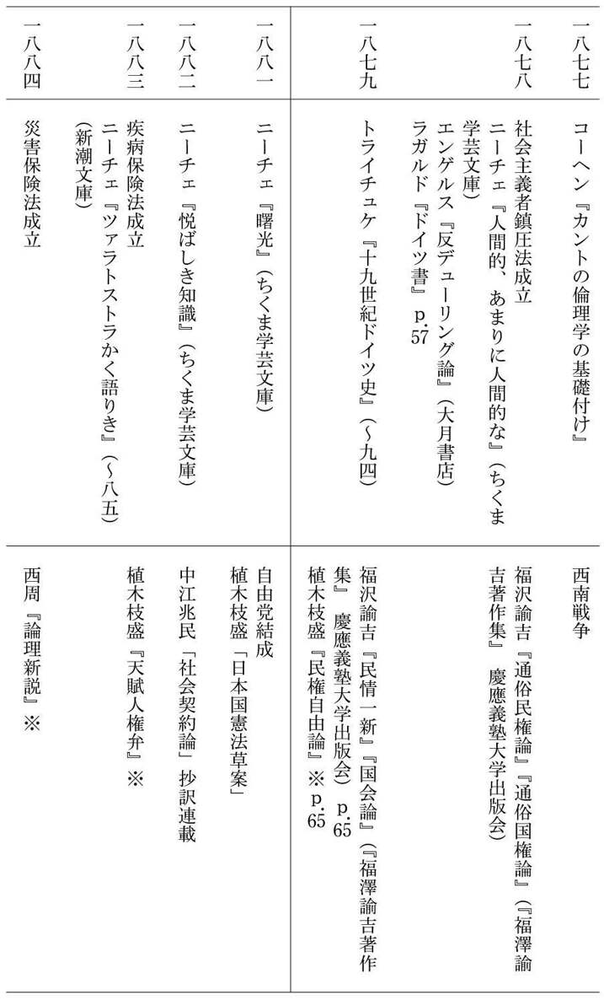
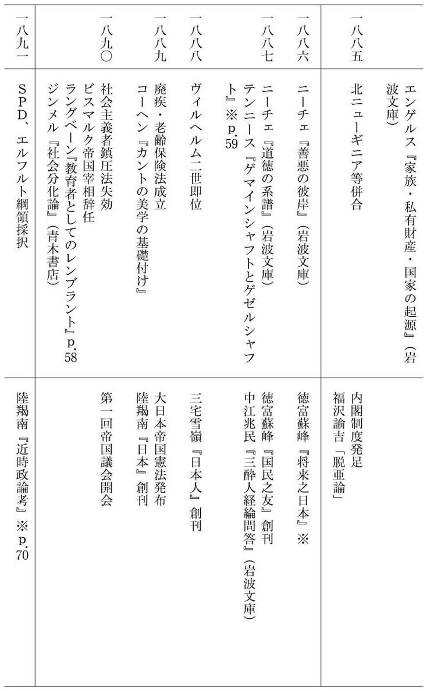
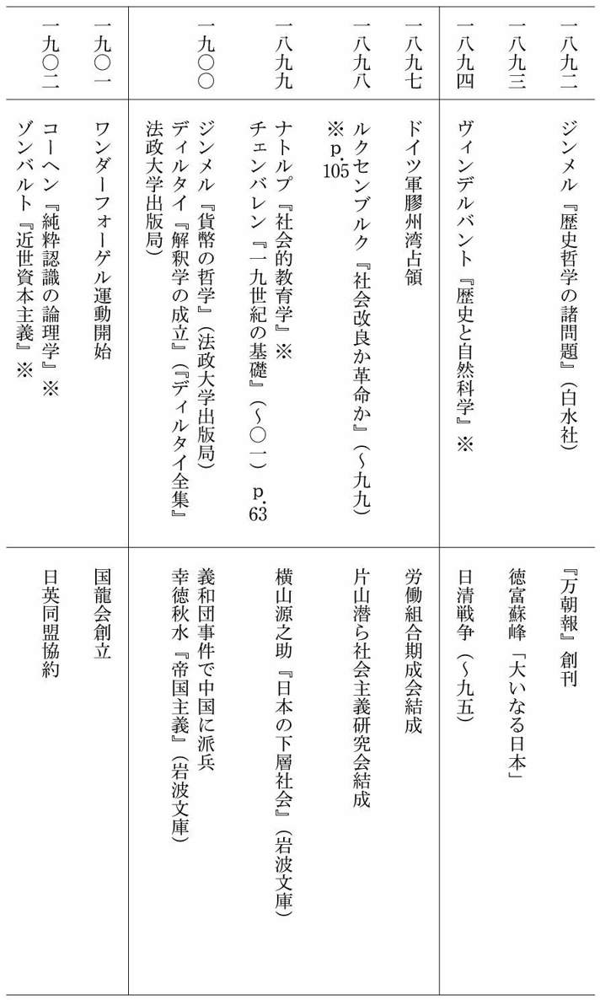
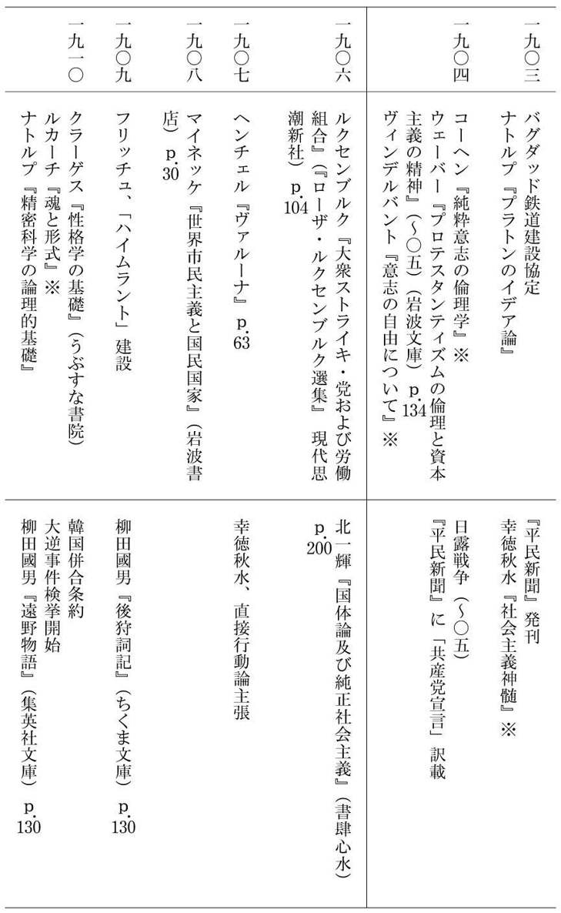
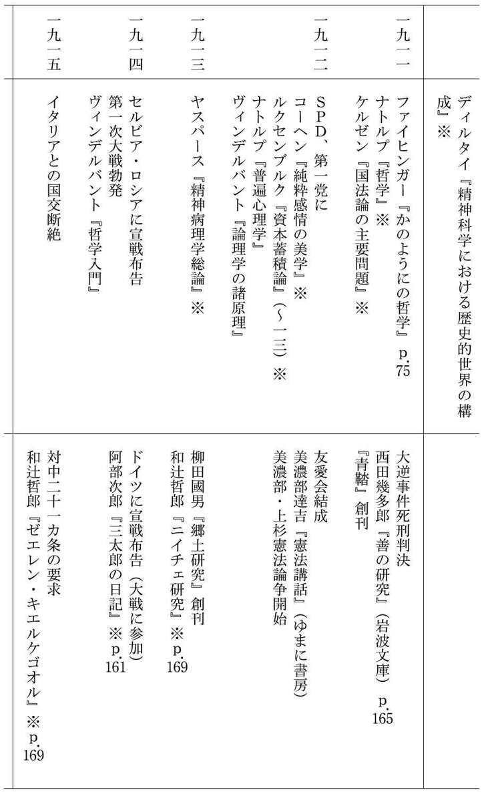
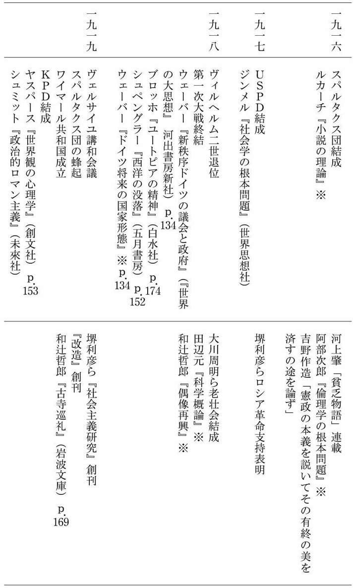
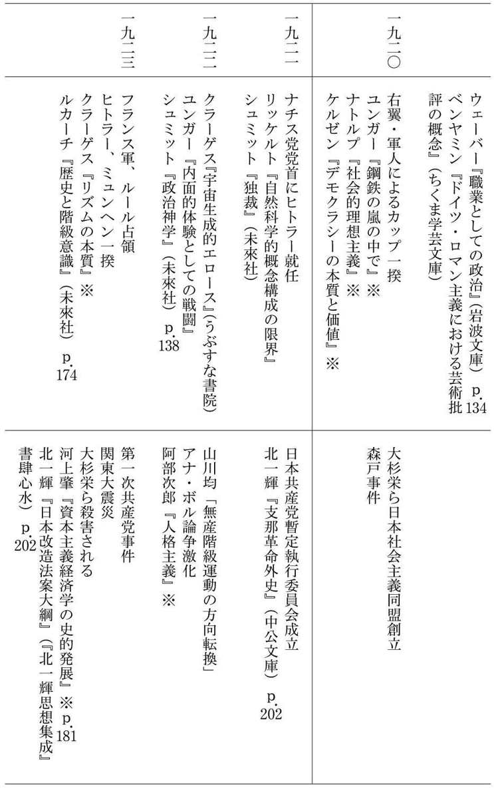
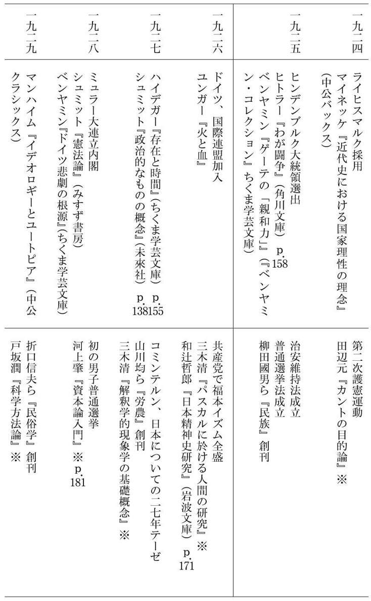
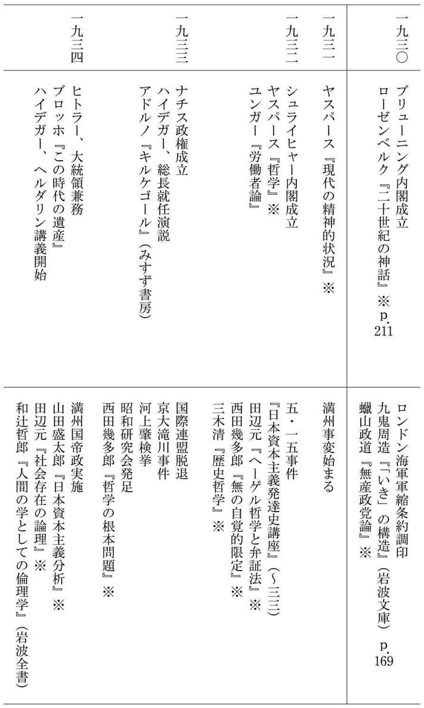
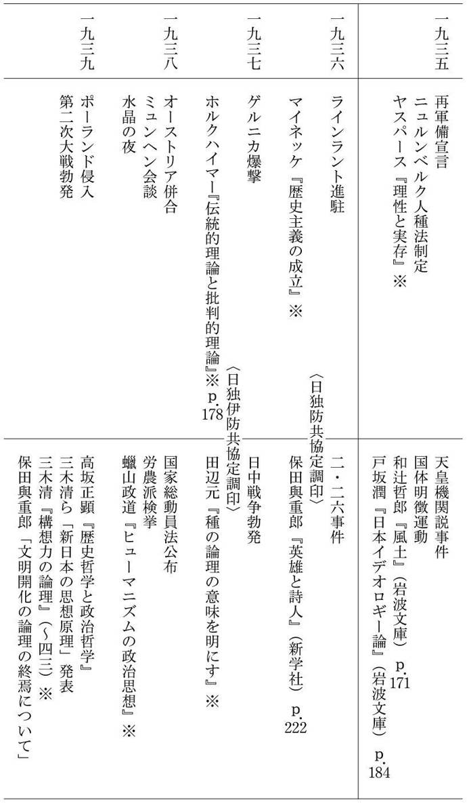
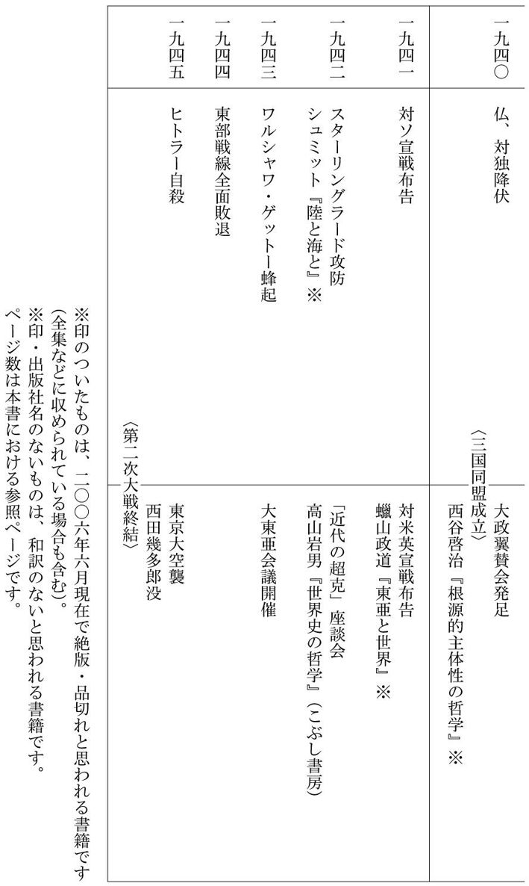
仲正昌樹（なかまさまさき）
1963年広島県生まれ。東京大学総合文化研究科地域文化研究専攻博士課程修了（学術博士）。現在、金沢大学法学部教授。社会思想史・比較文学を専攻。著書に、『ポスト・モダンの左旋回』（世界書院）、『なぜ「話」は通じないのか』（晶文社）、『「みんな」のバカ！』『日本とドイツ 二つの戦後思想』（以上、光文社新書）、『デリダの遺言』（双風舎）、『モデルネの葛藤』『「人体実験」と法』（以上、御茶の水書房）、『ラディカリズムの果てに』（イプシロン出版企画）、『「不自由」論』『お金に「正しさ」はあるのか』『「分かりやすさ」の罠』（以上、ちくま新書）など多数。
日本とドイツ 二つの全体主義 「戦前思想」を書く
2006年７月20日初版１刷発行
2013年４月30日電子書籍版発行
著 者─仲正昌樹
発行者─丸山弘順
装 幀─アラン・チャン
発行所─株式会社光文社
東京都文京区音羽１‐16‐６（〒112‐8011）
電 話─編集部 03（5395）8289
メール─sinsyo@kobunsha.com
®本書の全部または一部を無断で複写複製（コピー）することは、著作権法上での例外を除き、禁じられています。
©Masaki Nakamasa 2006